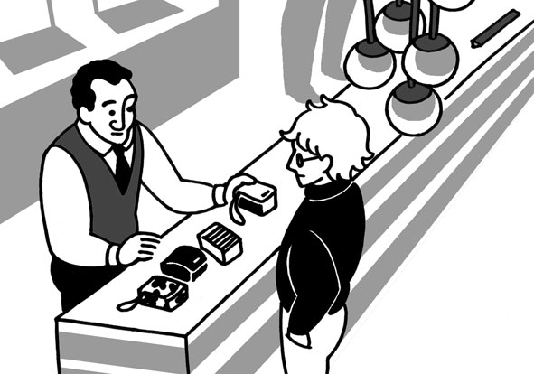

| [音声DL付]究極の英語リスニング Vol.2 2000語レベルで1万語[自然な2000語] 究極の英語リスニングシリーズ | |
| 株式会社アルク | |
| (2008) | |
参照項目から元の箇所に戻るには、お使いのビューワーの仕様に従ってください。または一旦目次を表示し、戻りたい箇所の近くの見出しをタップして戻ってください。
■ Foreword
はじめに
2000語が分かれば、
自然な英語が聞き取れる
『究極の英語リスニング 2000語レベルで１万語』は、アルクが編集した「標準語彙水準12000」（Standard Vocabulary List［略称SVL 12000］）をベースにした、全く新しいタイプのリスニング教材です。
本書の英文はSVLのLEVEL 1と2、つまり初級レベルの2000語だけ＊で構成されています。とにかく効率良くリスニング力を伸ばしたい、あるいは、ニュース英語に手を出してみたけれど、難しすぎて挫折してしまった──そんな方にこの本はオススメです。音声の内容は、日常生活や旅行、仕事の場面での会話や説明、有名な絵画や観光地の紹介、歴史上の人物の功績など多岐にわたります。内容をきちんと理解して、楽しみながらリスニングに取り組むことを目標としてください。
簡単な単語だけで構成されているからと言って、内容が簡単ということはありません。基本的な単語が持つ多彩な意味に驚くこともあるでしょう。本書を通して、リスニング力をアップし、さらに語彙力も増強してください。
＊固有名詞は除く
■ Contents
目次
■ Features
本書の特徴
1
自然な会話や説明がわずか2000語で聞き取れる！
SVL 12000
LEVEL 10~12
→超上級の3000語
LEVEL 7~9
→上級の3000語
LEVEL 4~6
→中級の3000語
LEVEL 3
→ちょっと踏み込む1000語
LEVEL 2 ※本書のレベル
→日常生活をカバーする1000語
LEVEL 1
→基本中の基本の1000語
標準語彙水準12000（SVL 12000）は、日本人英語学習者にとって有用な英単語を全12段階にレベル分けした語彙リストです。本書は、SVL 12000の初級レベルに相当する、LEVEL 1と2の単語2000語だけ*を使った英文で構成されています。
この2000語は、日常生活での必須単語で、ネイティブ・スピーカーも頻繁に使っている、基本的かつ重要な語ばかりです。しかし、知っている単語であっても、意外と聞き取りは難しいもの。特に日常で使われる大事な単語は、英文の中で繰り返し出現しますから、この機会に音とともにしっかり顔なじみになっておいてください。
＊固有名詞は除く
2
バリエーション豊かな英文で学習できる！
本書に収録されている英文は全部で45本。話される内容はもちろん、長さ、速さ、発音など、さまざまな面でバリエーション豊かな英文です。使用される語はわずか2000語でも、話される内容はオトナを対象としたもの。簡単な日常会話や旅行の場面ばかりとは限りません。
それぞれの英文は、速さや長さによって3段階の難易度に分けられています。ご自身の実力に合った英文から取り組むのも1つのテです。じっくりと耳を澄ませて、会話の内容を聞き取りましょう。
3
3つのMODEでキッチリ聞き取り！
本書では１つの英文に対し、以下の３つのMODEを用意しています。
ヒントなしで英文を聞きます。何も見ずに英文を聞いて、内容が把握できるか確認しましょう。
↓

語彙ヒントを見て、分からない語句を確認してから英文に取り組みます。
↓

日本語訳を見て、内容を理解してから英文を聞きます。
MODE 1で聞き取れれば、その英文は卒業。でも、中には一度では聞き取れないものもあるかもしれません。そんなときは、繰り返し聞いたり、MODE 2や3のヒントを頼りに聞いたりしてみましょう。あきらめずに繰り返し聞くことで、英語に耳が慣れ、少しずつ聞き取れる部分が増えてきます。最初は難易度が低い英文から取り組み、少しずつ取り組む英文のレベルを上げることで、英文の聞き取り能力をアップしてください。
■ How to use
本書の使い方
▶語数
取り上げる英文の総語数です。
▶難易度
取り上げる英文の難易度です。以下の3段階に分かれています。
★☆☆：易。130WPM（１分間に130語）未満のスピードで読まれている、200語未満の英文です。
★★☆：普通。130WPM以上、165WPM未満のスピードで読まれている300語未満の英文です（130 WPM未満でも、200語～300語の英文はここに分類されます）。
★★★：難。165WPM以上のスピードで読まれている英文です（165 WPM未満でも、300語以上の英文は、ここに分類されます）。
▶状況
取り上げる英文の状況や背景を説明しています。
▶チャレンジMODE
ヒントなし
何も見ずに英文を聞くMODEです。一度で大まかな内容が把握できなければ、何度か聞いても構いません。内容を把握できたと思ったら、「聞き取れた？ 確認してみよう」に答えてみましょう。
語彙ヒント
定型表現などを紹介しています。MODE 1で英文理解の妨げとなった語句を確認してから、もう一度英文を聞いてください。その後、MODE 1では分からなかった「確認してみよう」の質問に答えましょう。
和訳ヒント
MODE 1と2では内容が理解できなった場合、和訳を見て英文の内容を理解します。その後で、もう一度英文を聞き、答えを導ける部分が聞き取れた場合に、「確認してみよう」の質問に答えましょう。
▶音声
ダウンロードした音声を使用する部分は
DLvol.2_01 のように、ダウンロードした音声と同じトラック名で表示しています。該当のトラックを再生して学習してください。
▶聞き取れた？ 確認してみよう
MODE 1で聞いた英文をどの程度理解できているか、Q&A形式で確認します。質問は3つ。答えは英語で書き取りましょう。つづりが分からなければ、カタカナでもOKです。
▶話されていた英文はコレだ!
英文のトランスクリプション（音声を文字で書き起こしたもの）です。各単語がどのように発音されていたのか、文字を見ながら音声を聞いて、確認しましょう。下線部は「聞き取れた？ 確認してみよう」の答えを導ける部分です。
▶解答例
「聞き取れた？ 確認してみよう」の解答例と訳です。
無料ダウンロード音声について
本書に対応するMP3音声は、すべて無料でダウンロードしていただけます。
音声ダウンロードの方法
※PC専用のサイトです。まずはこちらにアクセス！
アルク ダウンロードセンター
http://www.alc.co.jp/dl/
（2015年2月時点の情報。今後詳細が変更になる可能性があります）
① 「ダウンロードリスト」の「英語」の中から、「究極の英語リスニング vol.2 無料ダウンロード音声」をクリック。
② 申し込みフォームに必要事項をご記入の上送信。
③ メールで「ダウンロードページURL」の案内が届きます。
④ 届いたURLにアクセスして、圧縮ファイルをダウンロードしてください。
ダウンロード音声ファイルについて
圧縮ファイルを解凍ソフトで展開の上、iTunesなどの音声再生ソフトで取りこんでご利用ください。音声再生ソフトでのファイルの取り込み方法や携帯音楽プレーヤーでの利用方法については、ソフトやプレーヤーに付属するマニュアルでご確認ください。
音声ファイルは、音声再生ソフトで次のように表示されます。
出版社名（アーティスト名）：「ALC PRESS INC.」と表示。
書名（アルバム名）：『究極の英語リスニング vol.2』
ダウンロードした音声のトラック名は
［vol.2_01］のように、［巻数_トラック番号］のルールで表示されます。本書の該当のトラック番号を確認して再生し、学習してください。
第１章
CHAPTER 1
日常的なやりとりを聞いてみよう！
まずは日常的な場面での会話を聞いて力試し。
家族や恋人同士、店員と客、それにご近所同士の会話などが登場します。
登場人物がどんな感情を抱いて話しているのか、
想像しながら聞いてみましょう。
第１章
日常的なやりとりを聞いてみよう！
語数：108／聞き取り難易度：★☆☆
語数：108／聞き取り難易度：★☆☆
語数：109／聞き取り難易度：★☆☆
語数：144／聞き取り難易度：★★☆
語数：132／聞き取り難易度：★★☆
語数：131／聞き取り難易度：★★☆
語数：142／聞き取り難易度：★★☆
語数：111／聞き取り難易度：★★☆
語数：125／聞き取り難易度：★★☆
語数：157／聞き取り難易度：★★☆
語数：167／聞き取り難易度：★★★
語数：159／聞き取り難易度：★★★
語数：180／聞き取り難易度：★★★
第１章 日常的なやりとりを聞いてみよう！
01交換してください
語数：108／難易度：★☆☆
レストランで男性が、店員に何かを頼んでいる。
何が問題なのか、聞き取ってみよう。
MODE1 ヒントなしでチャレンジ！
男性は何が不満なのだろうか。一度で内容を把握できなかったら、繰り返し音声を聞いてみよう。
DLvol.2_01
◉ 聞き取れた？ 確認してみよう
以下の質問に答えて、どの程度会話の内容を聞き取れたか確認。解答はできるだけ英語で書こう（つづりが分からない場合はカタカナでもOK）。
① 客はなぜ料理を交換してほしい？
② 新しい料理を出してもらうには、客は何をする必要がある？
③ 店員は誰に相談すると言っている？
Unit01 交換してください
MODE2 語彙を確かめてチャレンジ！
聞き取りづらい語句や、定型表現などに目を通してから、もう一度音声を聞いてみよう。内容が確認できたら、再度「確認してみよう」に挑戦！
□be all right: 結構である、大丈夫である
□I'm afraid ～: 残念ながら～
□have to ～: ～しなければならない
□I didn't realize ～: ～を知らなかった
□get sick: 具合が悪くなる
□〜 clearly says ...: 〜には明確に......と書いてある
□pay for ～: ～の代金を支払う
□Is that OK?: それでよろしいですか。
□seem to ～: ～と思われる
□fair: 公平な
□It's not my fault that ～: ～は私のせいではない
□let me talk to ～: ～に話をさせてほしい
□I'll be back in ～: ～（時間）で戻る
DLvol.2_01
◉ 聞き取れた？ 確認してみよう
以下の質問に答えて、どの程度会話の内容を聞き取れたか確認。解答はできるだけ英語で書こう（つづりが分からない場合はカタカナでもOK）。
① 客はなぜ料理を交換してほしい？
② 新しい料理を出してもらうには、客は何をする必要がある？
③ 店員は誰に相談すると言っている？
Unit01 交換してください
MODE3 和訳を読んでチャレンジ！
どんな内容の会話だったのか、和訳に目を通して確認。その後、もう一度音声を聞いて、「確認してみよう」の答えとなる部分が聞き取れたら、それを書き出してみよう。
男性：すみません。
女性：お気に召していただけましたか。
男：申し訳ないんだけど、この料理を下げてもらいたいんです。
女：お口に合いませんか。
男：エビが入っているとは知らなかったんです。エビは食べられないんですよ。具合が悪くなるから。
女：エビが入っていることは、はっきりとメニューに書いてありますが。
男：すみません。気が付かなかったんです。
女：あの、ほかのものをお出しする場合は、別にお代をいただくことになりますが。それでよろしいですか。
男：それはあまり公平じゃないと思いますよ。エビが食べられないのは、私のせいじゃないんですから。
女：ええ、それはそうですが......支配人と相談してまいります。どうすべきか、私では判断できませんので。すぐに戻ります。
DLvol.2_01
◉ 聞き取れた？ 確認してみよう
以下の質問に答えて、どの程度会話の内容を聞き取れたか確認。解答はできるだけ英語で書こう（つづりが分からない場合はカタカナでもOK）。
① 客はなぜ料理を交換してほしい？
② 新しい料理を出してもらうには、客は何をする必要がある？
③ 店員は誰に相談すると言っている？
Unit01 交換してください
◉ 話されていた 英文はコレだ！
最後に、会話のトランスクリプション（音声を文字で書き起こしたもの）を確認しよう。下線部が、「確認してみよう」の答えを導ける部分だ。
DLvol.2_01
Man: Excuse me.
Woman: Is everything all right here?
M: I'm afraid I have to return this dish.
W: You don't like it?
M:①I didn't realize it had shrimp in it. I can't eat shrimp. I'll get sick.
W: The menu clearly says it has shrimp in it.
M: I'm sorry. I didn't notice that.
W: Well,②if I get you something else, I'm afraid you'll have to pay for it. Is that OK?
M: That doesn't seem to be quite fair. It's not my fault that I can't eat shrimp.
W: No, it isn't, but ...③let me talk to my manager. I don't know what to do about this. I'll be back in a few minutes.
Unit01 交換してください
◉ 解答例
① 客はなぜ料理を交換してほしい？
Because it had shrimp in it and he can't eat shrimp. He'll get sick.
（料理にはエビが入っていて、彼はエビを食べられないから。具合が悪くなってしまう）
② 新しい料理を出してもらうには、客は何をする必要がある？
The man will have to pay for it.
（男性は別に代金を払わなければならない）
③ 店員は誰に相談すると言っている？
She'll talk to her manager.
（支配人に相談する）
再チャレンジGO!
第１章 日常的なやりとりを聞いてみよう！
02ママの手料理は......
語数：108／難易度：★☆☆
今回は、ある家族の日常をのぞいてみよう！
母親はどんな提案をしているのだろうか。
MODE1 ヒントなしでチャレンジ！
母親の提案に、家族はどう反応している？
DLvol.2_02
◉ 聞き取れた？ 確認してみよう
以下の質問に答えて、どの程度会話の内容を聞き取れたか確認。解答はできるだけ英語で書こう。
① 母親は何をしようとしている？
② 母親が作ったチョコレートクッキーは、まるで何のような味がした？
③ この家の犬は何を食べる？
Unit02 ママの手料理は......
MODE2 語彙を確かめてチャレンジ！
聞き取りづらい語句や、定型表現などに目を通してから、もう一度音声を聞いてみよう。内容が確認できたら、再度「確認してみよう」に挑戦！
□How would you two like to ～?: 2人とも～をしませんか。
□try something new: 何か新しいものを試す
□You're going to ～?: ～するつもりですか。
□Mom: ママ、お母さん
□last time: 前回
□taste like ～: ～のような味がする
□How do you know ～?: どうして～が分かるんですか。
□You know what I mean.: 私の言いたいことは分かるでしょう。
□That's the truth.: それが真実です。
□get the point: 言いたいことが分かる
□stay out of ～: ～の外にいる
DLvol.2_02
◉ 聞き取れた？ 確認してみよう
以下の質問に答えて、どの程度会話の内容を聞き取れたか確認。解答はできるだけ英語で書こう。
① 母親は何をしようとしている？
② 母親が作ったチョコレートクッキーは、まるで何のような味がした？
③ この家の犬は何を食べる？
Unit02 ママの手料理は......
MODE3 和訳を読んでチャレンジ！
どんな内容の会話だったのか、和訳に目を通して確認。その後、もう一度音声を聞いて、「確認してみよう」の答えとなる部分が聞き取れたら、それを書き出してみよう。
母親：2人とも今晩の夕食に何か新しいものを食べたくない？
父親：君が料理するの？
息子：どうかなあ、ママ。この前新しいものを作ったときは、散々な出来だったじゃない。
母：何のことを言っているの？
父：ああ、覚えているね。おまえ、チョコレートクッキーを焼こうとしただろう。
子：なのに、古い野球ボールみたいな味がしたんだ。
母：どうして古い野球ボールの味が分かるのよ？
子：言いたいことは分かるでしょう。固くてパサパサだったよ。
父：本当のことさ。実にひどい味だったね。
母：そんなにひどくなかったわよ！
子：ママ、犬だって食べなかったんだよ。
父：うちの犬は、ほとんど何でも食べるのに。
母：ああそう、ああそう。分かったわ。台所には入らないわよ。
子：ありがとう、ママ。
DLvol.2_02
◉ 聞き取れた？ 確認してみよう
以下の質問に答えて、どの程度会話の内容を聞き取れたか確認。解答はできるだけ英語で書こう。
① 母親は何をしようとしている？
② 母親が作ったチョコレートクッキーは、まるで何のような味がした？
③ この家の犬は何を食べる？
Unit02 ママの手料理は......
◉ 話されていた 英文はコレだ！
最後に、会話のトランスクリプションを確認しよう。下線部が、「確認してみよう」の答えを導ける部分だ。
DLvol.2_02
Mother:①How would you two like to try something new for dinner tonight?
Father: You're going to cook?
Son: I don't know, Mom. The last time you tried something new, it was terrible.
M: What are you talking about?
F: Oh, I remember. You tried to bake chocolate cookies.
S: And②they tasted like old baseballs.
M: How do you know what old baseballs taste like?
S: You know what I mean. They were hard and dry.
F: That's the truth. They really tasted awful.
M: They weren't that bad!
S: Mom, even the dog wouldn't eat them.
F: And③our dog will eat almost anything.
M: OK, OK. I get the point. I'll stay out of the kitchen.
S: Thanks, Mom.
Unit02 ママの手料理は......
◉ 解答例
① 母親は何をしようとしている？
To cook something new for dinner tonight.
（今晩の夕食に何か新しいものを料理すること）
② 母親が作ったチョコレートクッキーは、まるで何のような味がした？
They tasted like old baseballs.
（古い野球ボールみたいな味がした）
③ この家の犬は何を食べる？
He will eat almost everything.
（ほとんど何でも食べる）
再チャレンジGO!
第１章 日常的なやりとりを聞いてみよう！
03歯医者はイヤ！
語数：109／難易度：★☆☆
居間で母親と息子が言い争っている。
息子は何を嫌がっているのか、聞いてみよう。
MODE1 ヒントなしでチャレンジ！
母親はどのように息子を説得している？
DLvol.2_03
◉ 聞き取れた？ 確認してみよう
以下の質問に答えて、どの程度会話の内容を聞き取れたか確認。解答はできるだけ英語で書き取ろう。
① 息子はなぜ歯医者に行きたくない？
② 母親は、歯医者が何をくれると言っている？
③ 母親にとって痛いことは？
Unit03 歯医者はイヤ！
MODE2 語彙を確かめてチャレンジ！
聞き取りづらい語句や、定型表現などに目を通してから、もう一度音声を聞いてみよう。内容が確認できたら、再度「確認してみよう」に挑戦！
□Come on: 行きましょう
□It's time to ～: ～する時間だ
□be nice to ～: ～に良くする、親切にする
□drill: 穴を開ける
□not ～ a bit: 少しも～ない
□kind of: ちょっと、多少
□How exciting.: （皮肉として）それはすごいですね。
□behave yourself: いい加減にしなさい
□get worse: もっと悪くなる
□Trust me.: 大丈夫です。、信じて。
□bill: 請求書
DLvol.2_03
◉ 聞き取れた？ 確認してみよう
以下の質問に答えて、どの程度会話の内容を聞き取れたか確認。解答はできるだけ英語で書き取ろう。
① 息子はなぜ歯医者に行きたくない？
② 母親は、歯医者が何をくれると言っている？
③ 母親にとって痛いことは？
Unit03 歯医者はイヤ！
MODE3 和訳を読んでチャレンジ！
どんな内容の会話だったのか、和訳に目を通して確認。その後、もう一度音声を聞いて、「確認してみよう」の答えとなる部分が聞き取れたら、それを書き出してみよう。
母：行きましょう、ジョニー。出掛ける時間よ。
息子：でもママ、行きたくないよ。
母：ジョニー、歯医者さんはいつだって、とても良くしてくれるでしょう。
子：でも、道具を使って歯に穴を開けるでしょう！ 痛いよ。
母：ちっとも痛くないわよ。ちょっとうるさいだけ。
子：やっぱり行きたくないよ。
母：歯医者さんが歯ブラシを無料でプレゼントしてくれるわよ。
子：それはすごいや。
母：もう、いい加減にしなさい！ 歯を治してもらわないと、もっと悪くなるわよ。
子：痛いって分かってるんだってば。
母：大丈夫よ。痛いのは歯医者さんへの支払いだけだわ！
DLvol.2_03
◉ 聞き取れた？ 確認してみよう
以下の質問に答えて、どの程度会話の内容を聞き取れたか確認。解答はできるだけ英語で書き取ろう。
① 息子はなぜ歯医者に行きたくない？
② 母親は、歯医者が何をくれると言っている？
③ 母親にとって痛いことは？
Unit03 歯医者はイヤ！
◉ 話されていた 英文はコレだ！
最後に、会話のトランスクリプションを確認しよう。下線部が、「確認してみよう」の答えを導ける部分だ。
DLvol.2_03
Mother: Come on, Johnny. It's time to leave.
Son: But Mom, I don't want to go.
M: Johnny, the dentist is always very nice to you.
S: But①he's going to use a tool to drill a hole in my tooth! It's going to hurt.
M: It doesn't hurt a bit. It's just kind of noisy.
S: I still don't want to go.
M:②The dentist will give you a free toothbrush as a present.
S: How exciting.
M: Oh, behave yourself! If he doesn't fix the problem with your tooth, it's going to get worse.
S: I just know it's going to be painful.
M: Trust me.③Paying his bill is the only thing that's going to be painful!
Unit03 歯医者はイヤ！
◉ 解答例
① 息子はなぜ歯医者に行きたくない？
Because the dentist is going to use a tool to drill a hole in his tooth and it's going to hurt.
（歯医者が道具を使って歯に穴を開けるので、痛むだろうから）
② 母親は、歯医者が何をくれると言っている？
The dentist will give him a free toothbrush as a present.
（歯医者が歯ブラシを無料でプレゼントしてくれる）
③ 母親にとって痛いことは？
Paying the dentist's bill.
（歯医者への支払い）
再チャレンジGO!
第１章 日常的なやりとりを聞いてみよう！
04壊れないように......
語数：144／難易度：★★☆
ある夫婦がインテリア用品店へやってきた。
店員とのやりとりを聞いてみよう。
MODE1 ヒントなしでチャレンジ！
夫婦は何を買おうとしているのだろうか。
DLvol.2_04
◉ 聞き取れた？ 確認してみよう
以下の質問に答えて、どの程度会話の内容を聞き取れたか確認。解答はできるだけ英語で書こう。
① 妻が購入したい商品について、夫が心配していることは？
② 店員はどんな代案を出している？
③ 妻は何を集めている？
Unit04 壊れないように......
MODE2 語彙を確かめてチャレンジ！
聞き取りづらい語句や、定型表現などに目を通してから、もう一度音声を聞いてみよう。内容が確認できたら、再度「確認してみよう」に挑戦！
□I'd like to ～: ～したい
□get broken: 壊れる
□don't you think ～?: 〜と思いませんか。
□on the way home: 家に帰る途中で
□good point: 良い指摘
□Can I help you?: いらっしゃいませ。
□We'd like to ～: ～したい
□be afraid ～: ～を心配している
□package: ～を包装する
□I wonder if ～: ～かどうか不安だ
□may I ～?: ～してもよろしいですか。
□less likely to ～: あまり～しそうにない
□figure: （人物や動物の）像
□I'm sure～: きっと～だろう
DLvol.2_04
◉ 聞き取れた？ 確認してみよう
以下の質問に答えて、どの程度会話の内容を聞き取れたか確認。解答はできるだけ英語で書こう。
① 妻が購入したい商品について、夫が心配していることは？
② 店員はどんな代案を出している？
③ 妻は何を集めている？
Unit04 壊れないように......
MODE3 和訳を読んでチャレンジ！
どんな内容の会話だったのか、和訳に目を通して確認。その後、もう一度音声を聞いて、「確認してみよう」の答えとなる部分が聞き取れたら、それを書き出してみよう。
女性1：このガラスの馬はとてもきれいね。私のコレクションに加えたいわ。
男性：確かにすてきだけど、家に持って帰る途中で壊れてしまわないかな？
女1：いい点ついているわね。店員さんに聞いてみましょう。
男：分かった。すみません。
女性2：いらっしゃいませ。
男：このガラスの馬が欲しいんですが、壊れてしまいそうで心配なんです。壊れないように包装してもらえますか。
女2：はい、お客さま。たくさんの柔らかい紙でくるんで、固い箱の中にお入れしましょう。
女1：それで十分なのかしら。
女2：その、もしご心配でしたら、ご提案してもよろしいでしょうか。もしガラス細工がお好きなら、この器の方が、厚みがあります。こちらの方が壊れにくいと思いますが。
男：ああ、でも家内はガラスの動物の置物を集めているんですよ。だからこれが欲しいんです。
女2：分かりました。細心の注意を払ってお包みいたします。きっと大丈夫だと思いますよ。
DLvol.2_04
◉ 聞き取れた？ 確認してみよう
以下の質問に答えて、どの程度会話の内容を聞き取れたか確認。解答はできるだけ英語で書こう。
① 妻が購入したい商品について、夫が心配していることは？
② 店員はどんな代案を出している？
③ 妻は何を集めている？
Unit04 壊れないように......
◉ 話されていた 英文はコレだ！
最後に、会話のトランスクリプションを確認しよう。下線部が、「確認してみよう」の答えを導ける部分だ。
DLvol.2_04
Woman1: This glass horse is really beautiful. I'd like to add it to my collection.
Man: It really is nice, but①don't you think it might get broken on the way home?
W1: That's a good point. Let's ask the clerk for her advice.
M: OK. Excuse me.
Woman2: Can I help you?
M: We'd like to buy this glass horse, but we're afraid it might get broken. Can you package it so it won't break?
W2: Yes, sir. I can put it in lots of soft paper inside a strong box.
W1: I wonder if that would be enough.
W2: Well, if you're worried may I suggest something?②If you like glass things, this bowl is much thicker. It's less likely to get broken.
M: Oh, but③my wife collects glass animal figures. That's why we want this one.
W2: I see. I'll package it very carefully. I'm sure it will be all right.
Unit04 壊れないように......
◉ 解答例
① 妻が購入したい商品について、夫が心配していることは？
It might get broken on the way home.
（家に持って帰る途中で壊れてしまうかもしれない）
② 店員はどんな代案を出している？
To buy a glass bowl instead.
（代わりにガラスの器を買うこと）
③ 妻は何を集めている？
She collects glass animal figures.
（ガラスの動物の置物を集めている）
再チャレンジGO!
第１章 日常的なやりとりを聞いてみよう！
05パパ手伝って！
語数：132／難易度：★★☆
娘が父親にお願いをしている。
彼女は何にてこずっているのか、聞いてみよう。
MODE1 ヒントなしでチャレンジ！
娘は何に取り組んでいる？
DLvol.2_05
◉ 聞き取れた？ 確認してみよう
以下の質問に答えて、どの程度会話の内容を聞き取れたか確認。解答はできるだけ英語で書こう。
① 娘は父親に何を頼んでいる？
② 娘が取り組んでいる問題の登場人物は、何時に職場に着かなければいけない？
③ 登場人物が、起床してから職場に着くまでに必要な時間は？
Unit05 パパ手伝って！
MODE2 語彙を確かめてチャレンジ！
聞き取りづらい語句や、定型表現などに目を通してから、もう一度音声を聞いてみよう。内容が確認できたら、再度「確認してみよう」に挑戦！
□Dad: パパ、お父さん
□help ～ with ...: ～の......を手伝う
□mathematics: 算数
□be at work: 職場にいる
□take 〜 minutes to ...: ......するのに〜分かかる
□get dressed: 服を着る、着替える
□get to ～: ～に着く
□get up: 起きる
□figure ～ out: ～を解く、計算する
□total time: 合計の時間
□That's right.: その通り。
□go back: 戻る
□clever: 賢い、利口な
DLvol.2_05
◉ 聞き取れた？ 確認してみよう
以下の質問に答えて、どの程度会話の内容を聞き取れたか確認。解答はできるだけ英語で書こう。
① 娘は父親に何を頼んでいる？
② 娘が取り組んでいる問題の登場人物は、何時に職場に着かなければいけない？
③ 登場人物が、起床してから職場に着くまでに必要な時間は？
Unit05 パパ手伝って！
MODE3 和訳を読んでチャレンジ！
どんな内容の会話だったのか、和訳に目を通して確認。その後、もう一度音声を聞いて、「確認してみよう」の答えとなる部分が聞き取れたら、それを書き出してみよう。
娘：パパ、算数の宿題を手伝ってくれる？
父親：いいよ。何が問題なんだい？
娘：読むわね。「ある男性は9時までに職場に行かなければなりませんが、その人は服を着るのに15分、朝食を取るのに20分、そして職場まで行くのに35分かかります。彼は何時に起きればいいでしょう？」
父：それほど難しくないね。おまえにも解けると思うよ。
娘：ええと、必要な時間は全部で15分と20分と35分。70分ってことね。
父：その通りだ。次に何をすればいいかな？
娘：9時から70分戻るってこと？
父：そうだよ。70分は1時間と10分だ。
娘：分かったわ。9時の1時間前は8時。その10分前は7時50分ね。
父：よくできたね！ おまえは本当にお利口さんだ。
娘：ありがとう、パパ。
DLvol.2_05
◉ 聞き取れた？ 確認してみよう
以下の質問に答えて、どの程度会話の内容を聞き取れたか確認。解答はできるだけ英語で書こう。
① 娘は父親に何を頼んでいる？
② 娘が取り組んでいる問題の登場人物は、何時に職場に着かなければいけない？
③ 登場人物が、起床してから職場に着くまでに必要な時間は？
Unit05 パパ手伝って！
◉ 話されていた 英文はコレだ！
最後に、会話のトランスクリプションを確認しよう。下線部が、「確認してみよう」の答えを導ける部分だ。
DLvol.2_05
Daughter:①Dad, can you help me with my mathematics homework?
Father: Sure. What's the problem?
D: I'll read it for you. "②A man has to be at work by 9 o'clock and it takes him 15 minutes to get dressed, 20 minutes to eat and 35 minutes to get to work. What time should he get up?"
F: That's not so hard. I think you can figure it out.
D: Well,③the total time he needs is 15 minutes and 20 minutes and 35 minutes. That's 70 minutes.
F: That's right. What do you need to do next?
D: Go back 70 minutes from 9 o'clock?
F: That's right. Seventy minutes is one hour and ten minutes.
D: OK. One hour before 9 o'clock is 8 o'clock. Ten minutes earlier is 7:50.
F: Very good! You're such a clever girl.
D: Thanks, Dad.
Unit05 パパ手伝って！
◉ 解答例
① 娘は父親に何を頼んでいる？
To help her with her mathematics homework.
（算数の宿題を手伝うこと）
② 娘が取り組んでいる問題の登場人物は、何時に職場に着かなければいけない？
He has to be at work by 9 o'clock.
（９時までに仕事場に行かなければならない）
③ 登場人物が、起床してから職場に着くまでに必要な時間は？
He needs 70 minutes.
（７０分必要である）
再チャレンジGO!
第１章 日常的なやりとりを聞いてみよう！
06日本へも配達できますか
語数：131／難易度：★★☆
今回の舞台はアンティーク家具店。
客と店主のやりとりを聞いてみよう。
MODE1 ヒントなしでチャレンジ！
客が興味を持った品は何だった？
DLvol.2_06
◉ 聞き取れた？ 確認してみよう
以下の質問に答えて、どの程度会話の内容を聞き取れたか確認。解答はできるだけ英語で書こう。
① 客が興味を持った商品は？
② 客は商品をどこで使用しようとしている？
③ 商品はいつ配達される？
Unit06 日本へも配達できますか
MODE2 語彙を確かめてチャレンジ！
聞き取りづらい語句や、定型表現などに目を通してから、もう一度音声を聞いてみよう。内容が確認できたら、再度「確認してみよう」に挑戦！
□wooden: 木製の
□chest: （衣類などを入れるふた付きの）箱、チェスト
□New England: ニューイングランド（アメリカ北東部の地域）
□look nice in ～: ～で見栄えがする
□home office: 自宅の仕事場
□go well with ～: ～と合う
□How much is ～?: ～はいくらですか。
□not bad: まあまあ良い、そんなに悪くない
□Is it possible to ～?: ～は可能ですか。
□arrange to ～: ～するように手配する
□ship: ～を発送する
□air mail: 航空便
□cost: （金額）がかかる
□How long will it take to ～?: ～するのにどのくらい時間がかかりますか。
□How's that?: それでどうですか。
DLvol.2_06
◉ 聞き取れた？ 確認してみよう
以下の質問に答えて、どの程度会話の内容を聞き取れたか確認。解答はできるだけ英語で書こう。
① 客が興味を持った商品は？
② 客は商品をどこで使用しようとしている？
③ 商品はいつ配達される？
Unit06 日本へも配達できますか
MODE3 和訳を読んでチャレンジ！
どんな内容の会話だったのか、和訳に目を通して確認。その後、もう一度音声を聞いて、「確認してみよう」の答えとなる部分が聞き取れたら、それを書き出してみよう。
男性：この木製のチェストにとても興味があるんです。いつ作られたものなんですか。
女性：そのチェストは19世紀にニューイングランドで作られたものです。とてもすてきでしょう？
男：そうですね。うちの仕事部屋でとても見栄えがするだろうなあ。机やいすとよく合いそうです。おいくらですか。
女：575ドルで、それに税金が10パーセントかかります。
男：悪くないですね。日本に配達してもらえますか。
女：はい。航空便で送るよう手配できますよ。費用がさらに150ドルかかりますが。ですから合計が782ドル50セントになります。
男：配達にはどのくらい時間がかかりますか。
女：1週間ぐらいかかると思います。
男：えっ、それだと早すぎますよ。私は来週の木曜日まで帰らないんです。
女：来週の金曜日に着くように手配いたしましょう。それでいかがですか。
男：結構です！
DLvol.2_06
◉ 聞き取れた？ 確認してみよう
以下の質問に答えて、どの程度会話の内容を聞き取れたか確認。解答はできるだけ英語で書こう。
① 客が興味を持った商品は？
② 客は商品をどこで使用しようとしている？
③ 商品はいつ配達される？
Unit06 日本へも配達できますか
◉ 話されていた 英文はコレだ！
最後に、会話のトランスクリプションを確認しよう。下線部が、「確認してみよう」の答えを導ける部分だ。
DLvol.2_06
Man:①I'm very interested in this wooden chest. How old is it?
Woman: That chest was made in New England in the 19th century. It's very beautiful, isn't it?
M: Yes, it is.②It would look really nice in my home office. It would go very well with my desk and chairs. How much is it?
W: It's $575, and then there's 10 percent tax.
M: That's not bad. Is it possible to deliver it to Japan?
W: Yes. We can arrange to ship it by air mail. That will cost $150 more. So, the total will be $782.50.
M: How long will it take to deliver it?
W: It should take about a week.
M: Oh, that's too quick. I won't be home until next Thursday.
W:③I'll arrange for the service to deliver it next Friday. How's that?
M: Wonderful!
Unit06 日本へも配達できますか
◉ 解答例
① 客が興味を持った商品は？
He's interested in a wooden chest.
（木製のチェストに興味を持っている）
② 客は商品をどこで使用しようとしている？
In his home office.
（自宅の仕事部屋で）
③ 商品はいつ配達される？
It will be delivered next Friday.
（来週金曜日に配達される）
再チャレンジGO!
第１章 日常的なやりとりを聞いてみよう！
07その頭、どうにかしなさい！
語数：142／難易度：★★☆
息子の髪型に母親は不満な様子。
2人のやりとりを聞いてみよう。
MODE1 ヒントなしでチャレンジ！
息子は母親にどう反論している？
DLvol.2_07
◉ 聞き取れた？ 確認してみよう
以下の質問に答えて、どの程度会話の内容を聞き取れたか確認。解答はできるだけ英語で書こう。
① 母親は息子の髪型を何のようだと表現している？
② 息子は何を恐れて髪を切りたくない？
③ 母親の子ども時代は、何が禁じられていた？
Unit07 その頭、どうにかしなさい！
MODE2 語彙を確かめてチャレンジ！
聞き取りづらい語句や、定型表現などに目を通してから、もう一度音声を聞いてみよう。内容が確認できたら、再度「確認してみよう」に挑戦！
□it's time for ～ to ...: ～が......する潮時だ、～が......するのにふさわしいときだ
□get a haircut: 髪を切る
□start to ～: ～し始める
□look like ～: ～のように見える
□fashion: 流行
□care about ～: ～を気に掛ける、心配する
□of course: もちろん
□That's what I'm trying to～: それが私が～しようとしていることだ
□at least: 少なくとも
□change the color: 色を変える、染める
□look different from ～: ～と異なって見える、～と違う格好をする
□laugh at ～: ～を笑う
□～ weren't allowed to ...: ～は......することを許されていなかった
□ideas about ～: ～についての考え方
DLvol.2_07
◉ 聞き取れた？ 確認してみよう
以下の質問に答えて、どの程度会話の内容を聞き取れたか確認。解答はできるだけ英語で書こう。
① 母親は息子の髪型を何のようだと表現している？
② 息子は何を恐れて髪を切りたくない？
③ 母親の子ども時代は、何が禁じられていた？
Unit07 その頭、どうにかしなさい！
MODE3 和訳を読んでチャレンジ！
どんな内容の会話だったのか、和訳に目を通して確認。その後、もう一度音声を聞いて、「確認してみよう」の答えとなる部分が聞き取れたら、それを書き出してみよう。
母親：ジョーイ、そろそろ髪を切った方がいいわよ。ライオンみたいになってきているじゃないの。
息子：でもお母さん、学校ではみんな長い髪にしているよ。それがはやりなんだ。人気のある子はみんな長い髪なんだから。
母：ほかの人に動物みたいだって思われたいの？ 外見を気にしないの？
子：もちろん気にするさ。僕が言おうとしてるのはそれなんだ。少なくとも、染めてはいないじゃない。緑とかピンクとか、派手な色の髪の子もいるよ。
母：なぜ染めたいなんて思うの？ あなたの髪はすてきな色よ。
子：でも、みんなと違う格好をしたら、変だと思われちゃう。笑われちゃうよ。
母：私の学生時代は、男の子はみんな短い髪だったわ。長髪にするのは禁止されていたのよ。
子：お母さんのファッションについての考え方と、僕のファッションについての考え方は、違うんだと思うよ。
DLvol.2_07
◉ 聞き取れた？ 確認してみよう
以下の質問に答えて、どの程度会話の内容を聞き取れたか確認。解答はできるだけ英語で書こう。
① 母親は息子の髪型を何のようだと表現している？
② 息子は何を恐れて髪を切りたくない？
③ 母親の子ども時代は、何が禁じられていた？
Unit07 その頭、どうにかしなさい！
◉ 話されていた 英文はコレだ！
最後に、会話のトランスクリプションを確認しよう。下線部が、「確認してみよう」の答えを導ける部分だ。
DLvol.2_07
Mother: Joey, it's time for you to get a haircut.①You're starting to look like a lion.
Son: But Mom, everyone at school has long hair. It's the fashion. All the popular kids have long hair.
M: Do you want people to think you are an animal? Don't you care about your appearance?
S: Of course I care. That's what I'm trying to tell you. At least I haven't changed the color. Some kids have very colorful hair, like green or pink.
M: Why would you want to change the color? Your hair is a very nice color.
S:②But if I look different from everyone else, they will think I look funny. They'll laugh at me.
M:③When I was in school, all the boys had short hair. They weren't allowed to have long hair.
S: I think your ideas about fashion and my ideas about fashion are different.
Unit07 その頭、どうにかしなさい！
◉ 解答例
① 母親は息子の髪型を何のようだと表現している？
He's starting to look like a lion.
（ライオンみたいになってきている）
② 息子は何を恐れて髪を切りたくない？
If he looks different from everyone else, they will think he looks funny. They'll laugh at him.
（みんなと違う格好をしたら変だと思われてしまう。笑われてしまう）
③ 母親の子ども時代は、何が禁じられていた？
Boys weren't allowed to have long hair.
（男の子が長髪にするのは禁止されていた）
再チャレンジGO!
第１章 日常的なやりとりを聞いてみよう！
08何時だと思っているの！
語数：111／難易度：★★☆
夫が帰ってきたら、妻は怒り心頭の様子。
夫はなぜ怒られているのか、聞き取ってみよう。
MODE1 ヒントなしでチャレンジ！
夫はどんな様子で帰宅したのだろうか。
DLvol.2_08
◉ 聞き取れた？ 確認してみよう
以下の質問に答えて、どの程度会話の内容を聞き取れたか確認。解答はできるだけ英語で書こう。
① この会話が行われている時間は？
② 男性は何をしてきた？
③ 女性は男性にどこで寝ればいいと言っている？
Unit08 何時だと思っているの！
MODE2 語彙を確かめてチャレンジ！
聞き取りづらい語句や、定型表現などに目を通してから、もう一度音声を聞いてみよう。内容が確認できたら、再度「確認してみよう」に挑戦！
□I'm home.: ただいま。（帰宅したときのあいさつ）
□Where have you been?: あなたはどこに行っていたんですか。
□morning: 午前（夜の12時から正午までを指す）
□I've been waiting for ～: 私は～を待っていた
□baby: ねえおまえ（親しい間柄で用いられる呼び掛けの表現）
□What's the matter with you?: いったいどうしたんですか。
□drunk: 酔っ払った、酔って
□had one drink: 1杯やった、1杯引っ掛けた
□friends from the office: 会社の友人
□more than ～: ～より多く、〜を超えて
□I'd say ～: まあ～でしょうね
□Am I not allowed to ～?: 私が～することは許されないんですか。
□have some fun: 息抜きをする
□do what you want: やりたいことをやる
□I'm going to bed.: 私はもう寝ます。
DLvol.2_08
◉ 聞き取れた？ 確認してみよう
以下の質問に答えて、どの程度会話の内容を聞き取れたか確認。解答はできるだけ英語で書こう。
① この会話が行われている時間は？
② 男性は何をしてきた？
③ 女性は男性にどこで寝ればいいと言っている？
Unit08 何時だと思っているの！
MODE3 和訳を読んでチャレンジ！
どんな内容の会話だったのか、和訳に目を通して確認。その後、もう一度音声を聞いて、「確認してみよう」の答えとなる部分が聞き取れたら、それを書き出してみよう。
男性：ただいま！
女性：どこに行ってたの？ 何時だか分かってる？
男：11時ごろだろう？
女：いいえ、違うわ。夜中の1時よ！ 私、ずっと待っていたのよ。
男：そうか、ほら帰ってきたよ。ねえおまえ、キスしてくれよ。
女：あなた、どうしたの？ 酔っ払ってるの？
男：同僚と1杯飲んできたのさ。
女：あら、本当に？ １杯飲んだんですって？ ここからでもウイスキーのにおいが分かるわよ。
男：1杯より多かったかもしれないな。
女：まあ、1杯よりずっと多かったんでしょうね。
男：たまに息抜きすることも許されないのかい？
女：好きにすればいいわよ、ソファで寝ることも含めてね。私はもうベッドで寝ますからね。
DLvol.2_08
◉ 聞き取れた？ 確認してみよう
以下の質問に答えて、どの程度会話の内容を聞き取れたか確認。解答はできるだけ英語で書こう。
① この会話が行われている時間は？
② 男性は何をしてきた？
③ 女性は男性にどこで寝ればいいと言っている？
Unit08 何時だと思っているの！
◉ 話されていた 英文はコレだ！
最後に、会話のトランスクリプションを確認しよう。下線部が、「確認してみよう」の答えを導ける部分だ。
DLvol.2_08
Man: I'm home!
Woman: Where have you been? Do you know what time it is?
M: It's about 11, isn't it?
W: No, it isn't.①It's 1 o'clock in the morning! I've been waiting for you.
M: Well, I'm here now. Give me a kiss, baby.
W: What's the matter with you? Are you drunk?
M:②I had one drink with some friends from the office.
W: Oh, really? You had one drink? I can smell the whiskey from here.
M:②Maybe it was more than one.
W:②I'd say a lot more than one.
M: Am I not allowed to have some fun sometimes?
W:③You can do what you want, and that includes sleeping on the sofa. I'm going to bed.
Unit08 何時だと思っているの！
◉ 解答例
① この会話が行われている時間は？
It's 1 o'clock in the morning.
（夜中の１時）
② 男性は何をしてきた？
He had drinks with some friends from the office.
（同僚と飲んできた）
③ 女性は男性にどこで寝ればいいと言っている？
He can sleep on the sofa.
（ソファで寝ればいい）
再チャレンジGO!
第１章 日常的なやりとりを聞いてみよう！
09今の映画どうだった？
語数：125／難易度：★★☆
映画館から出てきた2人連れ。見たばかりの映画について、2人の会話を聞いてみよう。
MODE1 ヒントなしでチャレンジ！
映画に関する2人の意見は？
DLvol.2_09
◉ 聞き取れた？ 確認してみよう
以下の質問に答えて、どの程度会話の内容を聞き取れたか確認。解答はできるだけ英語で書こう。
① 2人は映画について、それぞれどんな感想を持った？
② 主人公の車の運転について、女性は何と言っている？
③ 主人公について、男性は何と言っている？
Unit09 今の映画どうだった？
MODE2 語彙を確かめてチャレンジ！
聞き取りづらい語句や、定型表現などに目を通してから、もう一度音声を聞いてみよう。内容が確認できたら、再度「確認してみよう」に挑戦！
□what did you think of ～?: ～についてどう思いましたか。
□stupid: ばかげた、くだらない
□come on!: まさか！
□while -ing: 〜している間、〜しながら
□makers of the movie: 映画制作者
□for fun: 楽しみのために
□make ～ laugh: ～を笑わせる
□silly: ばかな、こっけいな
□race around: 走り回る
□You have to agree that 〜: 〜には同意しなくてはならない
□make ～ feel sick: ～の気分を悪くさせる
□I'm glad 〜: ～が私にはうれしい
DLvol.2_09
◉ 聞き取れた？ 確認してみよう
以下の質問に答えて、どの程度会話の内容を聞き取れたか確認。解答はできるだけ英語で書こう。
① 2人は映画について、それぞれどんな感想を持った？
② 主人公の車の運転について、女性は何と言っている？
③ 主人公について、男性は何と言っている？
Unit09 今の映画どうだった？
MODE3 和訳を読んでチャレンジ！
どんな内容の会話だったのか、和訳に目を通して確認。その後、もう一度音声を聞いて、「確認してみよう」の答えとなる部分が聞き取れたら、それを書き出してみよう。
男性：で、映画、どうだった？
女性：くだらないと思ったわよ。
男：くだらないだって！ 僕はすごく面白いと思ったけどな。
女：そんな、まさか！ ロケットで町を飛び回りながら、1人で拳銃2丁も撃てるなんて、誰も信じないわよ。
男：映画を作った人も信じてもらおうなんて思ってないよ。面白ければいいんだから。
女：面白いものなら、笑わせてくれなくっちゃ。あの映画は、ばかばかしかっただけよ。
男：だけど、ヒーローが車に乗って、すごい速さで走り回るのには興奮したな。
女：あんな運転、危険で騒々しいわよ。
男：ジャングルの上をヘリコプターで飛ぶところは興奮したよね。
女：気分が悪くなったわ。
男：ヒーローは強くて頼もしかったな。彼みたいになりたいよ。
女：あなたがそうでなくて良かった。
DLvol.2_09
◉ 聞き取れた？ 確認してみよう
以下の質問に答えて、どの程度会話の内容を聞き取れたか確認。解答はできるだけ英語で書こう。
① 2人は映画について、それぞれどんな感想を持った？
② 主人公の車の運転について、女性は何と言っている？
③ 主人公について、男性は何と言っている？
Unit09 今の映画どうだった？
◉ 話されていた 英文はコレだ！
最後に、会話のトランスクリプションを確認しよう。下線部が、「確認してみよう」の答えを導ける部分だ。
DLvol.2_09
Man: So what did you think of the movie?
Woman:①I thought it was stupid.
M: Stupid!①I thought it was great.
W: Oh, come on! Nobody can believe that one man can shoot two guns while flying around the city in a rocket.
M: The makers of the movie don't expect you to believe that. It's just for fun.
W: Something that's fun should make me laugh. That movie was just silly.
M: But watching the hero race around in a fast car was really exciting.
W:②Driving a car like that is dangerous and noisy.
M: You have to agree that the helicopter flight over the jungle was exciting.
W: It made me feel sick.
M:③I thought the hero was strong and powerful. I want to be like him.
W: I'm glad you're not.
Unit09 今の映画どうだった？
◉ 解答例
① 2人は映画について、それぞれどんな感想を持った？
The woman thought it was stupid. The man thought it was great.
（女性はくだらないと思った。男性はすごく面白いと思った）
② 主人公の車の運転について、女性は何と言っている？
Driving a car like that is dangerous and noisy.
（あんな運転は、危険で騒々しい）
③ 主人公について、男性は何と言っている？
He was strong and powerful. The man wants to be like him.
（ヒーローは強くて頼もしかった。男性は彼みたいになりたい）
再チャレンジGO!
第１章 日常的なやりとりを聞いてみよう！
10お宅の犬のことで......
語数：157／難易度：★★☆
庭の水やりをするために出てきたジョージに隣人が話し掛けた。2人のやりとりを聞いてみよう。
MODE1 ヒントなしでチャレンジ！
女性は何に困っている？
DLvol.2_10
◉ 聞き取れた？ 確認してみよう
以下の質問に答えて、どの程度会話の内容を聞き取れたか確認。解答はできるだけ英語で書こう。
① 男性が犬を家の中に入れておけない理由は？
② 女性は男性に、どんな提案をしている？
③ 男性は、問題が解決しなかったらどうする？
Unit10 お宅の犬のことで......
MODE2 語彙を確かめてチャレンジ！
聞き取りづらい語句や、定型表現などに目を通してから、もう一度音声を聞いてみよう。内容が確認できたら、再度「確認してみよう」に挑戦！
□talk to ～ about ...: ......について～と話す
□leave ～ outside: ～を外に出しっ放しにする
□go away: 出掛ける
□leave ～ inside: ～を中に入れっ放しにする
□tear: ～を裂く、～を破る
□knock over ～: ～を倒す、～をひっくり返す
□cry: （動物が）鳴く、鳴き声を上げる
□the whole time: ずっと
□destroy: 〜を破壊する
□What do you suggest I do?: あなたは私が何をすべきだと提案してくれるのですか。
□lock: ～を閉じ込める
□garage: 車庫（アメリカ発音は[ɡəráːdƷ]、イギリス発音は[gǽraːdƷ]）
□work: うまくいく
□dog doctor: 犬の医者、獣医
DLvol.2_10
◉ 聞き取れた？ 確認してみよう
以下の質問に答えて、どの程度会話の内容を聞き取れたか確認。解答はできるだけ英語で書こう。
① 男性が犬を家の中に入れておけない理由は？
② 女性は男性に、どんな提案をしている？
③ 男性は、問題が解決しなかったらどうする？
Unit10 お宅の犬のことで......
MODE3 和訳を読んでチャレンジ！
どんな内容の会話だったのか、和訳に目を通して確認。その後、もう一度音声を聞いて、「確認してみよう」の答えとなる部分が聞き取れたら、それを書き出してみよう。
女性：ジョージ、あなたの犬のことで話があるの。
男性：何か問題が？
女：あなたたちは出掛けるとき、いつも犬を外に出しっ放しにしているでしょう。
男：僕たちが家にいないときは、中に入れておけないんでね。カーテンは破るし、家具は倒すし。ランプ2つと、妻のお気に入りの皿も壊されたんだ。
女：でも、留守の間、ずっと鳴いているのよ。
男：どうしろと言うんだい？ 犬に家をめちゃくちゃにさせろって？
女：車庫に閉じ込めておいたらどうかしら。寝心地のいいベッドを用意してやれば、おとなしくしているかもしれないわ。
男：もういい木箱が庭にあるんだよ。
女：でも悲しげな声で鳴かれると、うちの家族はみんな、特に娘はたまらない気持ちになるのよ。娘はまだ3歳なのをご存じでしょう。
男：そうか、そうだったね。うん、あなたの言うことはもっともだ。車庫に入れてみるとしよう。
女：そうしてもらえると助かるわ。
男：それでうまくいかなかったら、獣医に相談してみるよ。彼ならいい解決策を考えてくれるかもしれない。
女：ありがとう、ジョージ。
DLvol.2_10
◉ 聞き取れた？ 確認してみよう
以下の質問に答えて、どの程度会話の内容を聞き取れたか確認。解答はできるだけ英語で書こう。
① 男性が犬を家の中に入れておけない理由は？
② 女性は男性に、どんな提案をしている？
③ 男性は、問題が解決しなかったらどうする？
Unit10 お宅の犬のことで......
◉ 話されていた 英文はコレだ！
最後に、会話のトランスクリプションを確認しよう。下線部が、「確認してみよう」の答えを導ける部分だ。
DLvol.2_10
Woman: George, I want to talk to you about your dog.
Man: What's the problem?
W: You always leave him outside when you go away.
M: We can't leave him inside when we're not home.①He tears the curtains and knocks over the furniture. He has broken two lamps and my wife's favorite dishes.
W: But he cries the whole time you're gone.
M: What do you suggest I do? Let him destroy my house?
W:②Maybe you could lock him in the garage. He might be quiet if you get him a comfortable bed.
M: He already has a nice wooden box in the garden.
W: But his sad voice makes everyone in my family unhappy, especially my daughter. You know she's only 3 years old.
M: Oh, I see. Well, what you're saying is quite reasonable. I'll try the garage.
W: That would be great.
M:③And if that doesn't work, I'll ask the dog doctor. Maybe he'll have an idea that will help.
W: Thank you, George.
Unit10 お宅の犬のことで......
◉ 解答例
① 男性が犬を家の中に入れておけない理由は？
The dog tears the curtains and knocks over the furniture.
（カーテンを破ったり家具を倒したりする）
② 女性は男性に、どんな提案をしている？
To lock him in the garage.
（車庫に閉じ込めておくこと）
③ 男性は、問題が解決しなかったらどうする？
He'll ask the dog doctor.
（獣医に相談してみる）
再チャレンジGO!
第１章 日常的なやりとりを聞いてみよう！
11機械って難しい
語数：167／難易度：★★★
出掛けようとした姉に、弟が声を掛けた。
2人のやりとりを聞いてみよう。
MODE1 ヒントなしでチャレンジ！
姉はなぜ出掛けるのだろう？
DLvol.2_11
◉ 聞き取れた？ 確認してみよう
以下の質問に答えて、どの程度会話の内容を聞き取れたか確認。解答はできるだけ英語で書こう。
① 姉が出掛ける理由は？
② 弟はどこに出掛けるつもりだった？
③ 2人はテレビ番組をどうする？
Unit11 機械って難しい
MODE2 語彙を確かめてチャレンジ！
聞き取りづらい語句や、定型表現などに目を通してから、もう一度音声を聞いてみよう。内容が確認できたら、再度「確認してみよう」に挑戦！
□photographer: 写真家
□sound: ～のような印象を与える、〜と聞こえる
□What kind of ～?: どのような種類の～？
□be interested in ～: ～に興味がある
□natural scenes: 自然の風景
□be home: 家にいる
□Police Force: 『ポリスフォース』（架空のテレビ番組名）
□have ～ left: ～が残っている
□memory: メモリー、記憶容量
□hard drive: ハードドライブ、ハードディスク
□record: ～を録画する
□I don't know how to 〜: ～の仕方が分からない
□Sounds good to me.: それはいいですね。
□you know,: あのね、
□That's OK.: 大丈夫です。
□I don't understand why ～: なぜ～なのか理解できない
□for me: 私のために
□Lucky you!: 良かったですね！
DLvol.2_11
◉ 聞き取れた？ 確認してみよう
以下の質問に答えて、どの程度会話の内容を聞き取れたか確認。解答はできるだけ英語で書こう。
① 姉が出掛ける理由は？
② 弟はどこに出掛けるつもりだった？
③ 2人はテレビ番組をどうする？
Unit11 機械って難しい
MODE3 和訳を読んでチャレンジ！
どんな内容の会話だったのか、和訳に目を通して確認。その後、もう一度音声を聞いて、「確認してみよう」の答えとなる部分が聞き取れたら、それを書き出してみよう。
弟：どこへ行くの？
姉：言ったじゃない。大学の夜間授業を受けるのよ。
弟：ああ、うん、そうだったね。カメラ関係のクラスだったよね？
姉：そう。写真家になる方法について勉強するのよ。
弟：すごく面白そうだね。どういう種類の写真を撮りたいの？
姉：まだよく分からないの。今夜が1回目の授業だもの。動物とか花とか、自然の風景に興味があるけれど。
弟：何時に帰ってくるの？
姉：9時ごろかな。あなた、今晩『ポリスフォース』を見るつもり？
弟：実は、友だちの家に行こうと思ってたんだけど、僕もあの番組、好きなんだよね。ハードディスクにまだ空きはあったかな？
姉：あるわよ。番組を録画しておきましょうよ、そうしたら明日一緒に見られるでしょう。
弟：いいと思うよ。でも、あのね、僕は機械の設定の仕方が分からないんだよ。
姉：大丈夫よ。私がやるわ。なんでそんなに機械を怖がるのか分からないわね。
弟：怖いわけじゃないよ。いずれにしても、お姉ちゃんがやってくれるし。
姉：良かったわよね！
DLvol.2_11
◉ 聞き取れた？ 確認してみよう
以下の質問に答えて、どの程度会話の内容を聞き取れたか確認。解答はできるだけ英語で書こう。
① 姉が出掛ける理由は？
② 弟はどこに出掛けるつもりだった？
③ 2人はテレビ番組をどうする？
Unit11 機械って難しい
◉ 話されていた 英文はコレだ！
最後に、会話のトランスクリプションを確認しよう。下線部が、「確認してみよう」の答えを導ける部分だ。
DLvol.2_11
Brother: Where are you going?
Sister: I told you.①I'm taking an evening class at the university.
B: Oh, yes, I remember. It's something about cameras, right?
S: Yes. I'm going to learn how to be a photographer.
B: That sounds exciting. What kind of photographs are you planning to take?
S: I don't really know yet. Tonight is the first class. I think I'm interested in natural scenes, like animals and flowers.
B: What time will you be home?
S: About 9 o'clock. Are you planning to watchPolice Force tonight?
B: Actually,②I was going to visit a friend, but I like that show, too. Do we still have some memory left on our hard drive?
S: Sure.③Let's record the show and then we can watch it together tomorrow.
B: Sounds good to me. But, you know, I don't know how to set the machine.
S: That's OK. I'll do it. I don't understand why you're so afraid of machines.
B: I'm not afraid of them. Anyway, I have you to do it for me.
S: Lucky you!
Unit11 機械って難しい
◉ 解答例
① 姉が出掛ける理由は？
To take an evening class at the university.
（大学の夜間授業を受けるため）
② 弟はどこに出掛けるつもりだった？
He was going to visit a friend.
（友だちの家に行こうと思っていた）
③ 2人はテレビ番組をどうする？
They'll record the show and then watch it together tomorrow.
（番組を録画しておき、明日一緒に見る）
再チャレンジGO!
第１章 日常的なやりとりを聞いてみよう！
12正しい○○の方法
語数：159／難易度：★★★
明日から家を空ける妻が、夫に何か指示をしている。
2人のやりとりを聞いてみよう。
MODE1 ヒントなしでチャレンジ！
妻は何の指示をしているのだろう？
DLvol.2_12
◉ 聞き取れた？ 確認してみよう
以下の質問に答えて、どの程度会話の内容を聞き取れたか確認。解答はできるだけ英語で書こう。
① 妻が来週、家にいない理由は？
② 妻は夫に何の手順を教えている？
③ ウールの服で、してはいけないことは？
Unit12 正しい○○の方法
MODE2 語彙を確かめてチャレンジ！
聞き取りづらい語句や、定型表現などに目を通してから、もう一度音声を聞いてみよう。内容が確認できたら、再度「確認してみよう」に挑戦！
□business trip: 出張
□You've been talking about〜: あなたは～についてずっと話していた
□for weeks: 何週間も
□be gone for ～: ～の間不在にする
□do the wash: 洗濯をする
□How difficult can it be?: そんなに難しくないだろう?（反語表現）
□turn ～ on: ～のスイッチを入れる
□There's more to it than that.: それだけではありません。
□sort: 〜を仕分ける
□dark: 濃い色の
□gentle cycle: 弱水流
□handle: ～を処理する、～を取り扱う
DLvol.2_12
◉ 聞き取れた？ 確認してみよう
以下の質問に答えて、どの程度会話の内容を聞き取れたか確認。解答はできるだけ英語で書こう。
① 妻が来週、家にいない理由は？
② 妻は夫に何の手順を教えている？
③ ウールの服で、してはいけないことは？
Unit12 正しい○○の方法
MODE3 和訳を読んでチャレンジ！
どんな内容の会話だったのか、和訳に目を通して確認。その後、もう一度音声を聞いて、「確認してみよう」の答えとなる部分が聞き取れたら、それを書き出してみよう。
女性：来週、私が初めて出張に行くって話、覚えてるわよね？
男性：もちろん覚えているよ。何週間もその話をしているじゃないか。
女：そうね、2週間不在にするのよ。あなたにも洗濯の仕方を覚えてもらわないと。
男：心配ないよ。そんなに難しくないだろう？ 洋服を入れてスイッチを入れればいいんでしょ。
女：それだけじゃないわよ。まず、服を仕分けしないと。
男：何だって？
女：そうなのよ、白い物と色の濃い物を分けるの。白い物はお湯で洗うのよ。
男：分かった。それなら簡単だ。
女：それから、色の濃い物は冷たい水で洗うの。
男：なぜ？
女：お湯で洗ったら、色が変わっちゃうから。
男：分かったよ。ほかに何かある？
女：ウールの洋服を洗濯機で洗うときは、弱水流で洗ってね。でもウールのものを乾燥機に入れては駄目よ。
男：なんで？
女：何でも小さくなってしまうの。
男：洗濯は僕が考えていたより大変みたいだね。
女：あなたならきっとうまくできるわ。
DLvol.2_12
◉ 聞き取れた？ 確認してみよう
以下の質問に答えて、どの程度会話の内容を聞き取れたか確認。解答はできるだけ英語で書こう。
① 妻が来週、家にいない理由は？
② 妻は夫に何の手順を教えている？
③ ウールの服で、してはいけないことは？
Unit12 正しい○○の方法
◉ 話されていた 英文はコレだ！
最後に、会話のトランスクリプションを確認しよう。下線部が、「確認してみよう」の答えを導ける部分だ。
DLvol.2_12
Woman:①You remember I'm going on my first business trip next week, right?
Man: Of course I remember. You've been talking about it for weeks.
W: Well, I'll be gone for two weeks.②You're going to have to learn how to do the wash.
M: Don't worry. How difficult can it be? You put the clothes in and turn it on.
W: There's more to it than that. First, you have to sort the clothes.
M: What?
W: Yes, you separate the white things and the dark things. You wash white things in hot water.
M: OK. That's easy.
W: Then you wash the dark things in cold water.
M: Why?
W: If you use hot water, the colors will change.
M: Got it. Is there anything else?
W: You can wash wool clothes in the machine using the gentle cycle. But③don't put wool things in the machine that dries clothes.
M: Why?
W: Everything will become smaller.
M: I guess washing clothes is harder than I thought.
W: I'm sure you can handle it.
Unit12 正しい○○の方法
◉ 解答例
① 妻が来週、家にいない理由は？
She's going on a business trip next week.
（来週出張に行く）
② 妻は夫に何の手順を教えている？
She's telling him how to do the wash.
（洗濯の仕方を教えている）
③ ウールの服で、してはいけないことは？
To put them in the machine that dries clothes.
（乾燥機に入れること）
再チャレンジGO!
第１章 日常的なやりとりを聞いてみよう！
13明日やるよ
語数：180／難易度：★★★
テレビを見ている息子に父親がとうとう......。
どんな会話をしているのか、聞いてみよう。
MODE1 ヒントなしでチャレンジ！
息子はなぜ、しかられている？
DLvol.2_13
◉ 聞き取れた？ 確認してみよう
以下の質問に答えて、どの程度会話の内容を聞き取れたか確認。解答はできるだけ英語で書こう。
① 息子は今、何をしている？
② 父と息子の間の約束事は？
③ すぐに掃除を始めないと、父親はどうすると言っている？
Unit13 明日やるよ
MODE2 語彙を確かめてチャレンジ！
聞き取りづらい語句や、定型表現などに目を通してから、もう一度音声を聞いてみよう。内容が確認できたら、再度「確認してみよう」に挑戦！
□clean up 〜: 〜を掃除する
□once a week: 1週間に一度
□It's been ～ since ...: ......してから～たつ
□video game: テレビゲーム
□on the telephone: 電話で
□spend time -ing: 〜して時間を過ごす、〜に時間を費やす
□grades: 成績、評価
□terrible: ひどい
□That's too bad.: それは残念です。
□do our best: 最善を尽くす
□That's the way it is.: そういう風になっている。、そういうものだ。
□for the rest of ～: ～の残りの間ずっと
□All right: 分かった
□mean: 意地の悪い
DLvol.2_13
◉ 聞き取れた？ 確認してみよう
以下の質問に答えて、どの程度会話の内容を聞き取れたか確認。解答はできるだけ英語で書こう。
① 息子は今、何をしている？
② 父と息子の間の約束事は？
③ すぐに掃除を始めないと、父親はどうすると言っている？
Unit13 明日やるよ
MODE3 和訳を読んでチャレンジ！
どんな内容の会話だったのか、和訳に目を通して確認。その後、もう一度音声を聞いて、「確認してみよう」の答えとなる部分が聞き取れたら、それを書き出してみよう。
父親：ビリー、おまえに何度、部屋を掃除するように言ったかな？
息子：明日やるよ。
父：駄目だ、今やりなさい。
子：でも、今はお気に入りの番組を見てるんだ。
父：ビリー、週に一度、部屋を掃除するって決めただろう。前に掃除をしてからもう2週間たってるんだぞ。
子：忙しかったんだよ。
父：そうだな。テレビを見たり、ゲームをしたり、電話でおしゃべりしたりするのに忙しかったんだよな。
子：そういうことにはそんなに時間をかけてないよ。宿題だってあるんだから。
父：宿題なんかほとんどやっていないだろう。学校の成績だってひどいじゃないか！
子：学校は好きじゃないんだ。
父：それは残念。私は働かなければならない。おまえは学校に行かなければならない。私たちはどちらもベストを尽くさなければならないんだよ。そういうこと。さあ、部屋を掃除しなさい。
子：この番組が終わったらやるよ。
父：今やるんだ、やらないなら、今週いっぱいテレビを見るのを禁止するぞ！
子：分かった、分かったよ！ 父さんは時々、ものすごく意地悪だよね！
父：親になったら、おまえも意地悪したらいいさ。でも今は子どもなんだから、部屋を掃除しにいきなさい。
DLvol.2_13
◉ 聞き取れた？ 確認してみよう
以下の質問に答えて、どの程度会話の内容を聞き取れたか確認。解答はできるだけ英語で書こう。
① 息子は今、何をしている？
② 父と息子の間の約束事は？
③ すぐに掃除を始めないと、父親はどうすると言っている？
Unit13 明日やるよ
◉ 話されていた 英文はコレだ！
最後に、会話のトランスクリプションを確認しよう。下線部が、「確認してみよう」の答えを導ける部分だ。
DLvol.2_13
Father: Billy, how many times have I asked you to clean up your room?
Son: I'll do it tomorrow.
F: No, you'll do it now.
S: But①I'm watching my favorite show now.
F: Billy,②we agreed that you would clean your room once a week. It's been two weeks since you cleaned it.
S: I've been busy.
F: I know. You've been busy with television and video games and talking on the telephone.
S: I don't spend that much time doing those things. I have homework, too.
F: You hardly spend any time on homework. Your grades at school are terrible!
S: I don't like school.
F: That's too bad. I have to work. You have to go to school. We both have to try to do our best. That's the way it is. Now go clean your room.
S: I'll do it after this program.
F: You'll do it now or③you won't be allowed to watch television for the rest of this week!
S: All right, all right! Sometimes you're so mean!
F: Well, when you're a parent you can be mean, too. Now you're a child, so go clean your room.
Unit13 明日やるよ
◉ 解答例
① 息子は今、何をしている？
He's watching his favorite show now.
（今は、お気に入りの番組を見ている）
② 父と息子の間の約束事は？
The son would clean his room once a week.
（息子は週に一度、部屋の掃除をする）
③ すぐに掃除を始めないと、父親はどうすると言っている？
He won't allow the son to watch television for the rest of the week.
（その週いっぱい、息子がテレビを見るのを禁止する）
再チャレンジGO!
第２章
CHAPTER 2
リスニング力は旅先で役立つ！
道を尋ねたり、ガイドと目的地について相談したりというのも、
旅の醍醐味の1つ。
また、観光地ではその場所についての説明を英語で聞く機会もあるでしょう。
この章では、会話はもちろん名所の説明も聞き取ってみます。
第２章
リスニング力は旅先で役立つ！
語数：126／聞き取り難易度：★☆☆
語数：119／聞き取り難易度：★☆☆
語数：158／聞き取り難易度：★☆☆
語数：283／聞き取り難易度：★★☆
語数：189／聞き取り難易度：★★☆
語数：176／聞き取り難易度：★★☆
語数：336／聞き取り難易度：★★★
語数：199／聞き取り難易度：★★★
語数：347／聞き取り難易度：★★★
語数：193／聞き取り難易度：★★★
第２章 リスニング力は旅先で役立つ！
14どう行けばいいのでしょう？
語数：126／難易度：★☆☆
ホテルのフロント係に観光客が質問をしている。
男性の目的地はちょっと離れた場所らしく......。
MODE1 ヒントなしでチャレンジ！
男性の目的地はどこにあるのだろう？
DLvol.2_14
◉ 聞き取れた？ 確認してみよう
以下の質問に答えて、どの程度会話の内容を聞き取れたか確認。解答はできるだけ英語で書こう。
① 地下鉄の駅までの道順は？
② 目的地までは、何本の地下鉄を乗り継がなければならない？
③ 目的地は、地下鉄の出口から見てどこ？
Unit14 どう行けばいいのでしょう？
MODE2 語彙を確かめてチャレンジ！
聞き取りづらい語句や、定型表現などに目を通してから、もう一度音声を聞いてみよう。内容が確認できたら、再度「確認してみよう」に挑戦！
□how to get to ～: ～への行き方
□Harper's Department Store: ハーパーズ百貨店（架空の店名）
□go out: 外へ出る
□front door: 正面玄関
□turn left: 左へ曲がる
□on your right: あなたの右側に
□on the left: 左側に
□I see.: 分かりました。
□take: （乗り物）を利用する、（乗り物）に乗る
□line: （バスや電車の）路線
□Shady Grove: シェーディー ・ グローブ（架空の駅名）
□change to ～: 〜に乗り換える
□get off: （乗り物から）降りる
□Central Station: 中央駅（架空の駅名）
□Let me ～: 私が～しましょう
□write ～ down: ～を書き留める
□across the street: 通りの向こう側に
□be bad with directions: 方向音痴である
DLvol.2_14
◉ 聞き取れた？ 確認してみよう
以下の質問に答えて、どの程度内容を聞き取れたか確認してみよう。解答はできるだけ英語のまま書こう。
① 地下鉄の駅までの道順は？
② 目的地までは、何本の地下鉄を乗り継がなければならない？
③ 目的地は、地下鉄の出口から見てどこ？
Unit14 どう行けばいいのでしょう？
MODE3 和訳を読んでチャレンジ！
どんな内容の会話だったのか、和訳に目を通して確認。その後、もう一度音声を聞いて、「確認してみよう」の答えとなる部分が聞き取れたら、それを書き出してみよう。
男性：すみません、ハーパーズ百貨店への行き方を教えてもらえますか。
女性：はい。正面玄関を出て、左へ曲がってください。1ブロック歩くと、右側に地下鉄の入り口があります。
男：右へ曲がって、左側に地下鉄があるんですね。
女：いいえ、左に曲がって、右側に地下鉄ですよ。
男：ああ。分かりました。
女：赤い路線の地下鉄に乗ってシェーディー・グローブまで行き、緑の路線に乗り換えて中央駅で降りてください。
男：緑の路線でシェーディー・グローブまでね。
女：書いて差し上げましょう。左に曲がって、1ブロック、右手に地下鉄、赤い路線でシェーディー・グローブまで、緑の路線で中央駅まで。ハーパーズは通りを挟んで中央出口の向かい側です。
男：どうもありがとう。本当に方向音痴なんですよ。
DLvol.2_14
◉ 聞き取れた？ 確認してみよう
以下の質問に答えて、どの程度内容を聞き取れたか確認してみよう。解答はできるだけ英語のまま書こう。
① 地下鉄の駅までの道順は？
② 目的地までは、何本の地下鉄を乗り継がなければならない？
③ 目的地は、地下鉄の出口から見てどこ？
Unit14 どう行けばいいのでしょう？
◉ 話されていた 英文はコレだ！
最後に、会話のトランスクリプションを確認しよう。下線部が、「確認してみよう」の答えを導ける部分だ。
DLvol.2_14
Man: Excuse me, can you tell me how to get to Harper's Department Store?
Woman: Sure.①Go out the front door and turn left. Walk one block, and you'll see the subway entrance on your right.
M: Turn right and see the subway on the left.
W: No, turn left and the subway is on the right.
M: Oh. I see.
W:②Take the red line train to Shady Grove then change to the green line train and get off at Central Station.
M: Take the green line train to Shady Grove.
W: Let me write it down for you. Turn left, one block, subway on right,②red line to Shady Grove, green line to Central.③Harper's is across the street from the central exit.
M: Thank you so much. I'm really bad with directions.
Unit14 どう行けばいいのでしょう？
◉ 解答例
① 地下鉄の駅までの道順は？
Go out the front door and turn left. Walk one block, and you'll see the subway entrance on your right.
（正面玄関を出て、左へ曲がる。１ブロック歩くと、右側に地下鉄の入り口がある）
② 目的地までは、何本の地下鉄を乗り継がなければならない？
two（２本）
③ 目的地は、地下鉄の出口から見てどこ？
It's across the street from the central exit.
（通りを挟んで中央出口の向かい側にある）
再チャレンジGO!
第２章 リスニング力は旅先で役立つ！
15アメリカにも桜の木が！
語数：119／難易度：★☆☆
日本人の夫婦が、ワシントンで見覚えのある木に出合った。
どんな景色を見て会話をしているのか、聞いてみよう。
MODE1 ヒントなしでチャレンジ！
ワシントンの桜の木にはどんな由来があるのだろうか。
DLvol.2_15
◉ 聞き取れた？ 確認してみよう
以下の質問に答えて、どの程度会話の内容を聞き取れたか確認。解答はできるだけ英語で書こう。
① ワシントンに桜の木がある理由は？
② ワシントンには何本の桜の木が贈られた？
③ アメリカの桜祭りでは、どんなことが行われる？
Unit15 アメリカにも桜の木が！
MODE2 語彙を確かめてチャレンジ！
聞き取りづらい語句や、定型表現などに目を通してから、もう一度音声を聞いてみよう。内容が確認できたら、再度「確認してみよう」に挑戦！
□cherry tree: 桜の木
□top official: 幹部（ここでは「市長」のこと）
□Yukio Ozaki: 尾崎行雄（1858～1954。日本の政治家。1903～1912年、東京市長を務める）
□Washington D.C.: ワシントン（アメリカの首都で、連邦直轄地）
□friendship gift: 友好の証
□thousands of ～: 何千人もの～、たくさんの～
□cherry flower festival: 桜祭り
□the National Cherry Blossom Festival: 全米桜祭り（ワシントンで毎年開催される日米親善の桜祭り）
□important people: 要人
□give speech: スピーチをする
□I'm happy to ～: ～してうれしい
DLvol.2_15
◉ 聞き取れた？ 確認してみよう
以下の質問に答えて、どの程度内容を聞き取れたか確認してみよう。解答はできるだけ英語のまま書こう。
① ワシントンに桜の木がある理由は？
② ワシントンには何本の桜の木が贈られた？
③ アメリカの桜祭りでは、どんなことが行われる？
Unit15 アメリカにも桜の木が！
MODE3 和訳を読んでチャレンジ！
どんな内容の会話だったのか、和訳に目を通して確認。その後、もう一度音声を聞いて、「確認してみよう」の答えとなる部分が聞き取れたら、それを書き出してみよう。
男性1：あちらの木は日本の桜の木と同じように見えますが。
男性2：あれは日本の桜の木ですよ。
女性：どういういきさつでここにあるんですか。
男2：1912年に東京の市長、尾崎行雄氏がワシントンに3000本の桜の木を友好の証として、寄贈したからです。
男1：それは知りませんでした。皆さん、この花は好きなんでしょうか。
男2：ええ、もちろんです。とても親しまれていますよ。毎年、たくさんの人が桜を見にワシントンにやってきます。
女：日本では、桜祭りがあるんですよ。
男2：どんなことをするんですか。
女：桜の木の下に座って、食べたり飲んだりするんです。歌を歌う人もいますね。
男2：私たちもお祭りをしますよ。「全米桜祭り」と呼ばれています。大規模なパレードをしたり、要人がスピーチをしたりします。
男1：それは非常に喜ばしいですね。アメリカ人も桜が好きだとはうれしいですよ。
DLvol.2_15
◉ 聞き取れた？ 確認してみよう
以下の質問に答えて、どの程度内容を聞き取れたか確認してみよう。解答はできるだけ英語のまま書こう。
① ワシントンに桜の木がある理由は？
② ワシントンには何本の桜の木が贈られた？
③ アメリカの桜祭りでは、どんなことが行われる？
Unit15 アメリカにも桜の木が！
◉ 話されていた 英文はコレだ！
最後に、会話のトランスクリプションを確認しよう。下線部が、「確認してみよう」の答えを導ける部分だ。
DLvol.2_15
Man1: Those trees look just like Japanese cherry trees.
Man2: They are Japanese cherry trees.
Woman: How did they get here?
M2: In 1912,①②Tokyo's top official, Yukio Ozaki, gave Washington D.C. 3,000 cherry trees as a friendship gift.
M1: I didn't know that. Do people like the flowers?
M2: Oh, yes. They're very popular. Every year, thousands of people come to Washington to see them.
W: In Japan, we have cherry flower festivals.
M2: What do you do?
W: We sit under the cherry trees and eat and drink. Some people sing.
M2: We have a festival, too. It's called the National Cherry Blossom Festival.③There's a big parade, and some important people give speeches.
M1: I'm very happy to hear that. I'm glad Americans love cherry flowers, too.
Unit15 アメリカにも桜の木が！
◉ 解答例
① ワシントンに桜の木がある理由は？
Tokyo's top official, Yukio Ozaki, gave them as a friendship gift.
（東京市長の尾崎行雄氏が友好の証として寄贈した）
② ワシントンには何本の桜の木が贈られた？
3,000（３０００本）
③ アメリカの桜祭りでは、どんなことが行われる？
There's a big parade, and some important people give speeches.
（大規模なパレードをしたり、要人がスピーチをしたりする）
再チャレンジGO!
第２章 リスニング力は旅先で役立つ！
16目新しいものは何？
語数：158／難易度：★☆☆
数年ぶりにピッツバーグを訪れた女性。
どんな情報を求めているのか、聞いてみよう。
MODE1 ヒントなしでチャレンジ！
女性は何を知りたいのだろうか。
DLvol.2_16
◉ 聞き取れた？ 確認してみよう
以下の質問に答えて、どの程度会話の内容を聞き取れたか確認。解答はできるだけ英語で書こう。
① 女性は何年ぶりにピッツバーグを訪れた？
② ピッツバーグに最近できたと説明されているものは？（4つ）
③ 女性はどこで仕事をしている？
Unit16 目新しいものは何？
MODE2 語彙を確かめてチャレンジ！
聞き取りづらい語句や、定型表現などに目を通してから、もう一度音声を聞いてみよう。内容が確認できたら、再度「確認してみよう」に挑戦！
□haven't been to ～ for ...: ......ぶりに〜に来た／行った
□Pittsburgh: ピッツバーグ（ペンシルベニア州の都市）
□What's new in ～?: ～で新しいのは何ですか。
□cinema: 映画館、映画
□European: ヨーロッパの
□Anything else?: ほかには？
□special kinds of ～: 独特の～
□exciting: わくわくさせる、面白い
□horse ride: 乗馬
□modern art: 現代美術
□downtown: 町の中心部で、商業地区で
□Picasso: ピカソ（1881～1973。スペイン生まれの画家、彫刻家）
□sign: 標識、看板
□on the front of ～: ～の正面に
□miss: ～を見落とす
DLvol.2_16
◉ 聞き取れた？ 確認してみよう
以下の質問に答えて、どの程度内容を聞き取れたか確認してみよう。解答はできるだけ英語のまま書こう。
① 女性は何年ぶりにピッツバーグを訪れた？
② ピッツバーグに最近できたと説明されているものは？（4つ）
③ 女性はどこで仕事をしている？
Unit16 目新しいものは何？
MODE3 和訳を読んでチャレンジ！
どんな内容の会話だったのか、和訳に目を通して確認。その後、もう一度音声を聞いて、「確認してみよう」の答えとなる部分が聞き取れたら、それを書き出してみよう。
女性：ピッツバーグに来たのは5年ぶりなんです。この町で新しいものは何ですか。
男性：ヨーロッパ映画だけを上演する新しい映画館がありますよ。
女：それは面白そうね。ヨーロッパ映画は大好き。ほかには？
男：アジア独特の食品を売っている新しいスーパーもあります。
女：うーん、私は今、東京で働いているから、それにはあまりそそられないわね。新しい公園や美術館はあります？
男：はい、まさに。子どもたちが乗馬を楽しめる公園があるんです。とても人気がありますよ。
女：子どもはいないのよ。
男：そうですか。先月、町の中心部に新しい現代美術館がオープンしましたよ。たくさんの絵画や、ピカソの特別コレクションが展示されています。
女：まあ、それは良さそうね。見てみたいわ。
男：毎日10時から6時まで開館していますよ。ここから歩いて行けます。
女：どちらの方向？
男：正面玄関を出て、左へ曲がってください。4ブロック真っすぐ進んで、右へ曲がります。建物の正面に看板が出ていますよ。見落とすことはないでしょう。
女：ありがとう！
DLvol.2_16
◉ 聞き取れた？ 確認してみよう
以下の質問に答えて、どの程度内容を聞き取れたか確認してみよう。解答はできるだけ英語のまま書こう。
① 女性は何年ぶりにピッツバーグを訪れた？
② ピッツバーグに最近できたと説明されているものは？（4つ）
③ 女性はどこで仕事をしている？
Unit16 目新しいものは何？
◉ 話されていた 英文はコレだ！
最後に、会話のトランスクリプションを確認しよう。下線部が、「確認してみよう」の答えを導ける部分だ。
DLvol.2_16
Woman:①I haven't been to Pittsburgh for five years. What's new in town?
Man:②There's a new cinema that only shows European movies.
W: That's interesting. I love European cinema. Anything else?
M:②There's a new supermarket that sells special kinds of food from Asia.
W: Well, now③I work in Tokyo so that's not so exciting. Are there any new parks or museums?
M: Yes, actually.②There's a park that has horse rides for kids. It's very popular.
W: I don't have any kids.
M: I see.②A new modern art museum opened downtown last month. It has many paintings and a special collection of Picasso's.
W: Oh, that sounds good. I'd like to see it.
M: It's open every day from 10 o'clock to 6 o'clock. You can walk there from here.
W: Which way is it?
M: Go out the front door and turn left. Go straight for four blocks and turn right. There's a sign on the front of the building. You can't miss it.
W: Thanks!
Unit16 目新しいものは何？
◉ 解答例
① 女性は何年ぶりにピッツバーグを訪れた？
She hasn't been to Pittsburgh for five years.
（５年ぶりにピッツバーグに来た）
② ピッツバーグに最近できたと説明されているものは？（4つ）
a cinema that only shows European movies （ヨーロッパ映画だけを上映する映画館）
a supermarket that sells special kinds of food from Asia （アジア独特の食品を売っているスーパー）
a park that has horse rides for kids （子どもたちが乗馬を楽しめる公園）
a modern art museum, which has many paintings and a special collection of Picasso's （たくさんの絵画や、ピカソの特別コレクションが展示されている現代美術館）
③ 女性はどこで仕事をしている？
She works in Tokyo.
（東京で働いている）
再チャレンジGO!
第２章 リスニング力は旅先で役立つ！
17ナイアガラの滝
語数：283／難易度：★★☆
馬てい型をしたカナダ側のホースシュー滝
ここではアメリカとカナダの国境にある大瀑布、ナイアガラの滝の説明を聞いてみよう。
MODE1 ヒントなしでチャレンジ！
ナイアガラの滝にはどんな特徴がある？
DLvol.2_17
◉ 聞き取れた？ 確認してみよう
以下の質問に答えて、どの程度会話の内容を聞き取れたか確認。解答はできるだけ英語で書こう。
① ナイアガラの滝はいつ、どのようにしてできた？
② ナイアガラの滝を観光できる交通手段として紹介されているものは？（4つ）
③ ナイアガラ川の水は、何に利用されている？
Unit17 ナイアガラの滝
MODE2 語彙を確かめてチャレンジ！
聞き取りづらい語句や、定型表現などに目を通してから、もう一度音声を聞いてみよう。内容が確認できたら、再度「確認してみよう」に挑戦！
□Niagara Falls: ナイアガラの滝（アメリカとカナダの国境に位置する、カナダ［ホースシュー］滝、アメリカ滝、ブライダルベール滝の3つの滝の総称。主にブライダルベール滝を除く2つの滝を指す）
□Niagara River: ナイアガラ川（五大湖のエリー湖からオンタリオ湖へ流れる河川。全長56キロメートル）
□Lake Erie: エリー湖（五大湖の1つ）
□the Great Lakes: 五大湖（アメリカとカナダの国境線をなす5つの湖の総称）
□twin cities: 2つの市、双子都市（アメリカ側とカナダ側で同じ名前を持つ町があることから）
□Ontario: オンタリオ州
□Canada: カナダ
□New York: ニューヨーク州
□the United States: アメリカ合衆国
□Lake Ontario: オンタリオ湖（五大湖の1つ）
□be created: 創造される
□ice: 氷河
□ice age: 氷河期
□especially: 特に、際立って
□large amount of ～: 大量の～
□Over the years: 長年にわたり
□go over ～: ～の向こう側に行く、〜を渡る
□most of ～: ～の多く
□lit: light（～を照らす）の過去分詞
□on foot: 歩いて、徒歩で
□tour boat: 遊覧船
□explain: ～を説明する
□electric power: 電力
□keep a balance: バランスを保つ
□protect: 〜を保護する
DLvol.2_17
◉ 聞き取れた？ 確認してみよう
以下の質問に答えて、どの程度内容を聞き取れたか確認してみよう。解答はできるだけ英語のまま書こう。
① ナイアガラの滝はいつ、どのようにしてできた？
② ナイアガラの滝を観光できる交通手段として紹介されているものは？（4つ）
③ ナイアガラ川の水は、何に利用されている？
Unit17 ナイアガラの滝
MODE3 和訳を読んでチャレンジ！
どんな内容の会話だったのか、和訳に目を通して確認。その後、もう一度音声を聞いて、「確認してみよう」の答えとなる部分が聞き取れたら、それを書き出してみよう。
ナイアガラの滝は、川幅の広いナイアガラ川が大きく流れ落ちている場所です。川は五大湖のエリー湖から流れ出して、カナダのオンタリオ州にあるナイアガラフォールズとアメリカ合衆国のニューヨーク州にあるナイアガラフォールズという双子都市の間を通って、オンタリオ湖で終わります。滝は1万年以上前に、最後の氷河期に氷河が移動して誕生しました。滝の高さはわずか52メートルですから際立って高くはありませんが、滝の幅は非常に広く、滝を流れ落ちる水量も膨大です。川の水は美しい、鮮やかな緑色をしています。
この滝には18世紀から観光客が訪れるようになりました。長年の間には、滝を渡ろうとした人もたくさんいました。そのほとんどはけがをしましたし、命を落とした人もいます。滝の上にロープを張って、その上を歩いて渡った人もいました。なぜそんなことをするのでしょうか。おそらくスリルがあるからでしょう。あるいは頭がおかしいだけかもしれません。
カナダ側の滝の裏側には照明があり、毎晩深夜まで点灯されています。毎年、約2000万人が滝を訪れます。観光客は歩いて、あるいは遊覧船やヘリコプターから滝を眺めます。カナダ側では、滝の上を通るケーブルカーに乗ることもできます。地域の歴史について説明している博物館もいくつかあります。
ナイアガラの滝を訪れる観光客は年々増加しているので、ホテルやレストランの数も増えています。また、カナダ側でもアメリカ側でも、ナイアガラ川の水を発電に利用しています。この地域の自然美を守るためには、産業と観光のバランスを保つことが非常に重要なのです。
DLvol.2_17
◉ 聞き取れた？ 確認してみよう
以下の質問に答えて、どの程度内容を聞き取れたか確認してみよう。解答はできるだけ英語のまま書こう。
① ナイアガラの滝はいつ、どのようにしてできた？
② ナイアガラの滝を観光できる交通手段として紹介されているものは？（4つ）
③ ナイアガラ川の水は、何に利用されている？
Unit17 ナイアガラの滝
◉ 話されていた 英文はコレだ！
最後に、会話のトランスクリプションを確認しよう。下線部が、「確認してみよう」の答えを導ける部分だ。
DLvol.2_17
Niagara Falls is a place where the wide Niagara River drops down a long distance. The river flows from Lake Erie of the Great Lakes, between the twin cities of Niagara Falls, in Ontario, Canada, and Niagara Falls, New York in the United States, and ends at Lake Ontario.①The falls were created more than 10,000 years ago when ice moved during the last ice age. They are only about 52 meters high so they are not especially high, but they are very wide and a very large amount of water flows over them. The water in the river is a beautiful, bright green color.
Tourists have been visiting the falls since the 18th century. Over the years, many people have tried to go over the falls. Most of them were hurt and some were even killed. Other people have crossed the falls by walking on ropes. Why do people do these things? Maybe it's exciting for them. Or maybe they're just crazy.
There are lights behind the falling water on the Canadian side which are lit until midnight every day. About 20 million people visit the falls every year.②Visitors can see them on foot, from tour boats and by helicopter. On the Canadian side, there is a cable car ride over the falls. There are several museums that explain the history of the area.
The number of tourists visiting Niagara Falls is growing every year, so the number of hotels and restaurants is also growing. Also,③both the Canadian and U.S. sides use water from the Niagara River to make electric power. It is very important to keep a balance between industry and tourist uses to protect the area's natural beauty.
Unit17 ナイアガラの滝
◉ 解答例
① ナイアガラの滝はいつ、どのようにしてできた？
They were created more than 10,000 years ago when ice moved during the last ice age.
（１万年以上前に、最後の氷河期に氷河が移動して誕生した）
② ナイアガラの滝を観光できる交通手段として紹介されているものは？（4つ）
on foot（徒歩で）、from tour boats（遊覧船から）、by helicopter（ヘリコプターで）、by cable car ride（ケーブルカーに乗車して）
③ ナイアガラ川の水は、何に利用されている？
Both the Canadian and U.S. sides use water from the Niagara River to make electric power.
（カナダ側でもアメリカ側でも、ナイアガラ川の水を発電に利用している）
再チャレンジGO!
第２章 リスニング力は旅先で役立つ！
18お薦めの場所はどこですか
語数：189／難易度：★★☆
観光案内所を訪れた夫婦が、係員に質問をしている。
2人はこの町でどのようなことがしたいのだろうか。
MODE1 ヒントなしでチャレンジ！
夫婦は明日、何をしたいのだろうか。
DLvol.2_18
◉ 聞き取れた？ 確認してみよう
以下の質問に答えて、どの程度会話の内容を聞き取れたか確認。解答はできるだけ英語で書こう。
① 夫婦は明日、何をしたい？
② 妻がボートを避けたい理由は？
③ 隣の旅行代理店では何を手に入れることができる？
Unit18 お薦めの場所はどこですか
MODE2 語彙を確かめてチャレンジ！
聞き取りづらい語句や、定型表現などに目を通してから、もう一度音声を聞いてみよう。内容が確認できたら、再度「確認してみよう」に挑戦！
□I was wondering if you could ～: ～していただけますか
□What would you like to know?: どのようなことを知りたいんですか。
□have a free day: １日、暇になる
□sights: 名所
□adventure: 胸躍る体験
□tour along the river: 川下り
□information center: 案内所
□local: 地元の
□take a walk: 散歩する
□old part: 旧市街
□travel agency: 旅行案内所、旅行代理店
□next door: 隣の
□hill: 坂、坂道
□Be sure to 〜: 必ず～してください
□comfortable: 履き心地の良い
□You're very welcome.: どういたしまして。
□have a good time: 楽しく過ごす
DLvol.2_18
◉ 聞き取れた？ 確認してみよう
以下の質問に答えて、どの程度内容を聞き取れたか確認してみよう。解答はできるだけ英語のまま書こう。
① 夫婦は明日、何をしたい？
② 妻がボートを避けたい理由は？
③ 隣の旅行代理店では何を手に入れることができる？
Unit18 お薦めの場所はどこですか
MODE3 和訳を読んでチャレンジ！
どんな内容の会話だったのか、和訳に目を通して確認。その後、もう一度音声を聞いて、「確認してみよう」の答えとなる部分が聞き取れたら、それを書き出してみよう。
男性：こんにちは。ちょっと教えていただきたいのですが。
女性1：はい、お客さま。どのようなことでしょうか。
男：明日１日、暇なので、この町の名所をいくつか見たいんです。どこがお薦めですか。
女1：そうですね、本当に胸躍る体験をご希望でしたら、ボートでの川下りがありますよ。この案内所の近くから出発します。ボートは古くて美しい家並みや市の公園、それに小さな森のそばを通ります。川沿いのすてきな古いカフェで昼食を楽しめる、地元の村に寄りますよ。
女2：ボートはあまり好きじゃないわ。たいてい船酔いするから。
女1：そうですか。ではこの町の旧市街の散歩はいかがでしょう。隣の旅行会社で、この町の見所がすべて載っている地図をもらえます。
男：それは良さそうですね。2人とも歩き回るのが好きなんですよ。
女1：歩きやすい靴でお出掛けくださいね。この町は坂が多いですから。
女2：アドバイスありがとう。それから情報も助かりました。
女1：どういたしまして。楽しくお過ごしください。
DLvol.2_18
◉ 聞き取れた？ 確認してみよう
以下の質問に答えて、どの程度内容を聞き取れたか確認してみよう。解答はできるだけ英語のまま書こう。
① 夫婦は明日、何をしたい？
② 妻がボートを避けたい理由は？
③ 隣の旅行代理店では何を手に入れることができる？
Unit18 お薦めの場所はどこですか
◉ 話されていた 英文はコレだ！
最後に、会話のトランスクリプションを確認しよう。下線部が、「確認してみよう」の答えを導ける部分だ。
DLvol.2_18
Man: Hello. I was wondering if you could give me some information.
Woman1: Certainly, sir. What would you like to know?
M:①We have a free day tomorrow so we'd like to see some sights in this town. What do you suggest?
W1: Well, if you really want to have an adventure, there is a tour along the river on a boat. It starts near this information center. The boat goes past some beautiful old houses, our city park and a small forest. It stops at a local village where you can have lunch in a lovely old café by the river.
Woman2: I don't really like boats very much.②I usually get sick on them.
W1: OK. You could take a walk through the old part of this town.③The travel agency next door can give you a map that shows all the interesting things there are to see here.
M: That sounds very nice. We both like walking around.
W1: Be sure to wear comfortable shoes. There are a lot of hills in this town.
W2: Thanks for the advice. And thank you for the information.
W1: You're very welcome. I hope you have a good time.
Unit18 お薦めの場所はどこですか
◉ 解答例
① 夫婦は明日、何をしたい？
They'd like to see some sights in this town.
（この町の見所をいくつか見たい）
② 妻がボートを避けたい理由は？
She usually gets sick on boats.
（たいてい船酔いする）
③ 隣の旅行代理店では何を手に入れることができる？
They give you a map that shows all the interesting things there are to see in this town.
（この町の見所がすべて載っている地図をもらえる）
再チャレンジGO!
第２章 リスニング力は旅先で役立つ！
19カメラをなくしました
語数：176／難易度：★★☆

ホテルの遺失物取扱所に、青い顔をした男性がやってきた。なぜ困っているのか、聞き取ってみよう。
MODE1 ヒントなしでチャレンジ！
男性がなくしたカメラには、どんな写真が入っていた？
DLvol.2_19
◉ 聞き取れた？ 確認してみよう
以下の質問に答えて、どの程度会話の内容を聞き取れたか確認。解答はできるだけ英語で書こう。
① 男性は、いつ、どこにカメラを忘れたと思っている？
② カメラにはどんな写真が入っている？
③ フロント係によると、もっとも不思議な忘れ物は何？
Unit19 カメラをなくしました
MODE2 語彙を確かめてチャレンジ！
聞き取りづらい語句や、定型表現などに目を通してから、もう一度音声を聞いてみよう。内容が確認できたら、再度「確認してみよう」に挑戦！
□How about ～?: ～はどうですか。
□plain: 模様のない
□square: 真四角の
□Just one more.: あともう１つだけです。
□a lot of 〜: たくさんの～
□lost and found: 遺失物取扱所
□all sorts of ～: あらゆる種類の～
□just for ～: ～だけのための
□the strangest thing you've ever found: 見つけたものの中で一番変わったもの
□ask for ～: ～を請求する、請う
DLvol.2_19
◉ 聞き取れた？ 確認してみよう
以下の質問に答えて、どの程度内容を聞き取れたか確認してみよう。解答はできるだけ英語のまま書こう。
① 男性は、いつ、どこにカメラを忘れたと思っている？
② カメラにはどんな写真が入っている？
③ フロント係によると、もっとも不思議な忘れ物は何？
Unit19 カメラをなくしました
MODE3 和訳を読んでチャレンジ！
どんな内容の会話だったのか、和訳に目を通して確認。その後、もう一度音声を聞いて、「確認してみよう」の答えとなる部分が聞き取れたら、それを書き出してみよう。
男性1：すみません。
男性2：何でしょう？
男1：昨晩、ホテルのレストランにカメラを忘れたようなんです。
男2：どのような見た目をしていますか。
男1：小さな茶色の皮のケースに入っています。
男2：こちらですか。
男1：いいえ。私のはもっと小さいんです。ああ、悲しい。旅行の写真が全部、あのカメラの中に入っているのに。
男2：ご心配なく。まだいくつかカメラはありますよ。これはいかがですか。
男1：いいえ。私のケースは無地です。これは花柄ですから。
男2：こちらですか。
男1：いいえ。私のは真四角なんです。
男2：あと1つだけです。こちらはいかがでしょう？
男1：そうです、それです！ 遺失物取扱所には本当にたくさんのカメラが届くんですね。
男2：ええ、驚くほどですよ。お客さまはホテルにありとあらゆる物をお忘れになるんです。お客さまがなくしたり、忘れたりしたものを保管するためだけの部屋を、まるまる１つご用意しているんですよ。洋服、スーツケース、靴、ラジオなどあらゆる種類の物があります。
男1：これまでで一番変わった忘れ物は何でした？
男2：お金がたくさん詰まったかばんでしょうか。
男1：それのどこが変わっているんですか。
男2：2カ月前に見つけたのに、どなたも取りにいらっしゃらないのです！
DLvol.2_19
◉ 聞き取れた？ 確認してみよう
以下の質問に答えて、どの程度内容を聞き取れたか確認してみよう。解答はできるだけ英語のまま書こう。
① 男性は、いつ、どこにカメラを忘れたと思っている？
② カメラにはどんな写真が入っている？
③ フロント係によると、もっとも不思議な忘れ物は何？
Unit19 カメラをなくしました
◉ 話されていた 英文はコレだ！
最後に、会話のトランスクリプションを確認しよう。下線部が、「確認してみよう」の答えを導ける部分だ。
DLvol.2_19
Man1: Excuse me.
Man2: Can I help you?
M1:①I think I left my camera in the hotel restaurant last night.
M2: What does it look like?
M1: It's in a small brown leather case.
M2: Is this it?
M1: No. Mine is smaller. Oh, I'm so unhappy.②All my travel pictures are in that camera.
M2: Don't worry. I still have a few more cameras here. How about this one?
M1: No. My case is plain. That one has flowers on it.
M2: Is this it?
M1: No. Mine is square.
M2: Just one more. How about this one?
M1: Yes, that's it! You sure do have a lot of cameras in the lost and found.
M2: Oh, you'd be surprised. People leave all sorts of things in hotels. We have a whole room just for things people lose or forget. We have clothes, suitcases, shoes, radios, all sorts of things.
M1: What's the strangest thing you've ever found?
M2:③I guess that would be a bag with a lot of money in it.
M1: What's strange about that?
M2: We found it two months ago and nobody has ever asked for it!
Unit19 カメラをなくしました
◉ 解答例
① 男性は、いつ、どこにカメラを忘れたと思っている？
In the hotel restaurant last night.
（昨晩、ホテルのレストランに）
② カメラにはどんな写真が入っている？
All the man's travel pictures are in the camera.
（男性の旅行の写真が全部、カメラの中に入っている）
③ フロント係によると、もっとも不思議な忘れ物は何？
A bag with a lot of money in it.
（お金がたくさん詰まったかばん）
再チャレンジGO!
第２章 リスニング力は旅先で役立つ！
20水の都ベネチア
語数：336／難易度：★★★
ゴンドラで巡るのもベネチア観光の醍醐味 ⓒkarlakp
今回は、「水の都」の別名を持つイタリアの都市、ベネチアの説明を聞いてみよう。
MODE1 ヒントなしでチャレンジ！
ベネチアはどんな歴史を持っているのだろうか。
DLvol.2_20
◉ 聞き取れた？ 確認してみよう
以下の質問に答えて、どの程度会話の内容を聞き取れたか確認。解答はできるだけ英語で書こう。
① ベネチアの街は何の上に作られた？
② ベネチアが強大な街になれた理由は？
③ ベネチアにおける観光手段でもっともお薦めなのは？
Unit20 水の都ベネチア
MODE2 語彙を確かめてチャレンジ！
聞き取りづらい語句や、定型表現などに目を通してから、もう一度音声を聞いてみよう。内容が確認できたら、再度「確認してみよう」に挑戦！
□Venice: ベネチア（イタリア北東部の都市。「ベニス」は英語読み）
□North Italy: 北イタリア、イタリア北部
□Italian: イタリア語
□Venezia: ベネチア（イタリア語）
□a group of ～: 一群の～
□～ are joined together by ...: ～は......でつながれている
□Rialto Bridge: リアルト橋（カナル・グランデにかかる石橋）
□Grand Canal: カナル・グランデ、大運河（ベネチアの街を二分する運河）
□the City of Water: 水の都（ベネチアの別名。水上にあることから）
□the City of Bridges: 橋の都（ベネチアの別名。橋が多いことから）
□old center: 旧中心街
□run away from ～: ～から逃げる
□German: ゲルマン人の
□soldier: 兵士
□Attila: アッティラ（406？～453。フン族の支配者）
□Hun: フン族（4～5世紀にヨーロッパに侵略したアジアの遊牧民族）
□Adriatic Sea: アドリア海
□trade: 貿易
□Mediterranean Sea: 地中海
□grand: 壮大な
□palace: 大邸宅
□because of ～: ～のため
□wealth: 富
□powerful: 有力な
□Titian: ティツィアーノ（1490ごろ～1576。イタリアの画家。代表作は「ウルビーノのビーナス」など）
□Tintoretti: ティントレット（1518～94。イタリアの画家。ティツィアーノの弟子。代表作は「スザンナの水浴」など）
□Vivaldi: ビバルディ（1678～1741。イタリアの作曲家。代表作は『四季』『調和の霊感』など）
□Marco Polo: マルコ・ポーロ（1254～1324。旅行家。『東方見聞録』を口述）
□European: ヨーロッパ人、白人
□Silk Road: シルクロード、絹の道（中国からインド、アフガニスタンなどを経てローマに至る東西交易路）
□China: 中国
□citizen: 市民
□be set in ～: （物語などの舞台）が～に設定される
□Voltaire: ボルテール（1694～1778。フランスの哲学者、作家。代表作は『カンディード』『哲学書簡』など）
□Candide: 『カンディード』（ボルテールの小説。ミュージカル『キャンディード』の原作）
□Thomas Mann: トーマス・マン（1875～1955。ドイツの作家。代表作は『魔の山』『ベニスに死す』など）
□Death in Venice: 『ベニスに死す』（トーマス・マンの小説。1971年に映画化された）
□William Shakespeare: ウィリアム・シェークスピア（1564～1616。イギリスの劇作家・詩人。代表作は『ハムレット』『真夏の夜の夢』など）
□Othello: 『オセロ』（シェークスピアの四大悲劇の1つ）
□The Merchant of Venice: 『ベニスの商人』（シェークスピアの喜劇）
□James Bond movies: ジェームズ・ボンドの映画（「007」シリーズのこと）
□Pokémon Heroes: 『劇場版ポケットモンスター 水の都の護神 ラティアスとラティオス』（2002年／日本）の英語タイトル
□sink into water: 水中に沈む
□flood: 洪水
□water bus: 水上バス
□water taxi: 水上タクシー
□take your time: ゆっくり時間をかける
□check out 〜: 〜を見る
DLvol.2_20
◉ 聞き取れた？ 確認してみよう
以下の質問に答えて、どの程度内容を聞き取れたか確認してみよう。解答はできるだけ英語のまま書こう。
① ベネチアの街は何の上に作られた？
② ベネチアが強大な街になれた理由は？
③ ベネチアにおける観光手段でもっともお薦めなのは？
Unit20 水の都ベネチア
MODE3 和訳を読んでチャレンジ！
どんな内容の会話だったのか、和訳に目を通して確認。その後、もう一度音声を聞いて、「確認してみよう」の答えとなる部分が聞き取れたら、それを書き出してみよう。
ベニスの街は北イタリアにあります。イタリア語ではベネチアと呼ばれています。この街は、110あまりの島の上に建設され、島々は約400の橋で結ばれています。もっとも古く、もっとも有名な橋は石造りのリアルト橋で、カナル・グランデにかかっています。ベネチアを水の都、橋の都と呼ぶ人もいます。道路がないので、車はベネチアの旧中心街へは入れません。水上か、徒歩で移動するしかないのです。
歴史が伝えるところによると、この街はゲルマン人の兵士から逃れてきた人々によって作られました。ベネチアは、フン族のアッティラをはじめ、さまざまな人々に度々攻撃されたのです。
その後ベネチアは、アドリア海の入り口に位置する抜群の地の利を生かして、非常に強大な都市になりました。13世紀から17世紀まで、ヨーロッパとアジアを結ぶ貿易の、重要な中心地だったのです。一時はベネチアは、地中海で交易を行う3万6000人の船乗りと3000隻以上の船を擁していました。多くの壮大な大邸宅と美しい教会が建造されました。
莫大な富を持っていたベネチアの有力な家は、ティツィアーノやティントレットをはじめとする多くの偉大な芸術家や、ビバルディなどの音楽家を援助しました。シルクロードを中国まで旅した初めてのヨーロッパ人、マルコ・ポーロは、もっとも有名なベネチア市民の1人です。
多くの有名な本や物語がベネチアを舞台としています。その中には、ボルテールの『カンディード』、トーマス・マンの『ベニスに死す』、ウィリアム・シェークスピアの『オセロ』や『ベニスの商人』があります。映画の「ジェームズ・ボンド」シリーズの3作品や『劇場版ポケットモンスター 水の都の護神 ラティアスとラティオス』など、ベネチアを舞台にした映画もたくさんあります。
ベネチアは少しずつ水中に沈んでおり、頻繁に洪水が起こります。一部の家の1階はすでに水没しており、そこの人々は上の階に引っ越さなければなりませんでした。
観光客は街を水上バスや水上タクシーから眺めることができますが、街を見るのに一番良い方法は歩くことです。歩きやすい靴を履いて、ベネチアの無数の細い通りや美しい建物をゆっくり時間をかけて見て回りましょう。
DLvol.2_20
◉ 聞き取れた？ 確認してみよう
以下の質問に答えて、どの程度内容を聞き取れたか確認してみよう。解答はできるだけ英語のまま書こう。
① ベネチアの街は何の上に作られた？
② ベネチアが強大な街になれた理由は？
③ ベネチアにおける観光手段でもっともお薦めなのは？
Unit20 水の都ベネチア
◉ 話されていた 英文はコレだ！
最後に、会話のトランスクリプションを確認しよう。下線部が、「確認してみよう」の答えを導ける部分だ。
DLvol.2_20
The city of Venice is in North Italy. In Italian, it is called Venezia.①It was built over a group of more than 110 islands that are joined together by about 400 bridges. The oldest and most famous bridge is the stone Rialto Bridge which crosses the Grand Canal. Some people call Venice the City of Water or the City of Bridges. In the old center of Venice, there are no cars because there are no roads. Everything is moved on water or on foot.
History tells us that the city was built by people who were running away from German soldiers. Venice was attacked many times by many people, including Attila the Hun.
Later②it became a very powerful city because of its excellent position at the entrance to the Adriatic Sea. It was an important center for trade between Europe and Asia from the 13th to 17th centuries. At one time Venice had 36,000 sailors and more than 3,000 boats trading in the Mediterranean Sea. Many grand palaces and beautiful churches were built.
Because of their great wealth, the powerful families in Venice supported many great artists such as Titian and Tintoretti, and musicians such as Vivaldi. Marco Polo, who was the first European to travel the Silk Road to China, was one of Venice's most famous citizens.
Many famous books and stories have been set in Venice. They include Voltaire'sCandide, Thomas Mann'sDeath in Venice, and William Shakespeare'sOthello andThe Merchant of Venice. Many movies have also been set in Venice, such as three James Bond movies andPokemon Heroes.
Venice is slowly sinking into the water and there are many floods. The first floor of some houses is under water already so the people have had to move upstairs.
③Visitors can see the city from a water bus or water taxi, but the best way to see the city is on foot. Wear comfortable shoes and take your time as you check out Venice's many narrow streets and beautiful buildings.
Unit20 水の都ベネチア
◉ 解答例
① ベネチアの街は何の上に作られた？
It was built over a group of more than 110 islands.
（１１０あまりの島の上に建設された）
② ベネチアが強大な街になれた理由は？
It became a very powerful city because of its excellent position at the entrance to the Adriatic Sea.
（アドリア海の入り口に位置する抜群の地の利を生かして、非常に強大な都市になった）
③ ベネチアにおける観光手段でもっともお薦めなのは？
The best way to see the city is on foot.
（街を見るのに一番良い方法は歩くことである）
再チャレンジGO!
第２章 リスニング力は旅先で役立つ！
21友人へのプレゼント
語数：199／難易度：★★★
ある店にふらりと立ち寄った女性。
どんなお土産を探しているのか聞き取ってみよう。
MODE1 ヒントなしでチャレンジ！
女性は何をモチーフにした品を探している？
DLvol.2_21
◉ 聞き取れた？ 確認してみよう
以下の質問に答えて、どの程度会話の内容を聞き取れたか確認。解答はできるだけ英語で書こう。
① 店員が客に薦めた商品は？（3種類）
② 客がシャツを購入しない理由は？
③ 客はなぜセール期間に来られない？
Unit21 友人へのプレゼント
MODE2 語彙を確かめてチャレンジ！
聞き取りづらい語句や、定型表現などに目を通してから、もう一度音声を聞いてみよう。内容が確認できたら、再度「確認してみよう」に挑戦！
□have ～ in mind: ～を考え中である、～を念頭に置いている
□be crazy about ～: ～に夢中になっている
□anything to do with 〜: ～に関するものなら何でも
□let me show you ～: ～をお見せしましょう
□pin: ピン、ブローチ
□Oh, dear.: あらまあ。、やれやれ。
□give ～ a discount: ～に値引き販売する
□put ～ on sale: ～を特価で販売する
□come back: 戻ってくる
□sale price: 特価
□charge ～ for ...: ......の代金として〜を請求する
□for free: 無料で
DLvol.2_21
◉ 聞き取れた？ 確認してみよう
以下の質問に答えて、どの程度内容を聞き取れたか確認してみよう。解答はできるだけ英語のまま書こう。
① 店員が客に薦めた商品は？（3種類）
② 客がシャツを購入しない理由は？
③ 客はなぜセール期間に来られない？
Unit21 友人へのプレゼント
MODE3 和訳を読んでチャレンジ！
どんな内容の会話だったのか、和訳に目を通して確認。その後、もう一度音声を聞いて、「確認してみよう」の答えとなる部分が聞き取れたら、それを書き出してみよう。
女性1：日本の友人にお土産を買いたいんですが。
女性2：どのようなものをお考えですか。
女1：そうね、彼女は何というか、猫に関するものに夢中なんです。
女2：かしこまりました、いくつかお品をお見せしましょう。このすてきな猫の置き物はいかがですか。
女1：きれいな色だけど、彼女はもう、猫の置き物はたくさん持っているんです。何か違ったものをあげたいんですけど。
女2：猫のプリント柄のシャツがございますが。
女1：やめておくわ、シャツもあり過ぎるくらいだもの。もうそれ以上いらないと言っていたし。
女2：この青い猫のブローチもきれいですよ。
女1：ええ、そうね。それなら気に入りそうだわ。おいくらですか。
女2：50ドルでございます。
女1：まあ。ちょっと高いわね。値引きしていただけないかしら？
女2：そうですね、来週セールにする予定なんです。その時にまたお越しいただけますか。
女1：無理だわ。2日後に帰国してしまうんです。
女2：セール価格は20パーセント引きになります。今、セール価格でお売りすることにしましょう。
女1：まあ、どうもありがとう。きれいな包装紙に包んでくださる？
女2：包装には5ドル申し受けているんです。ですが、この品は可愛い箱に入っていますし、リボンは無料でおかけしますよ。
女1：それは素晴らしいわ。ありがとう！
DLvol.2_21
◉ 聞き取れた？ 確認してみよう
以下の質問に答えて、どの程度内容を聞き取れたか確認してみよう。解答はできるだけ英語のまま書こう。
① 店員が客に薦めた商品は？（3種類）
② 客がシャツを購入しない理由は？
③ 客はなぜセール期間に来られない？
Unit21 友人へのプレゼント
◉ 話されていた 英文はコレだ！
最後に、会話のトランスクリプションを確認しよう。下線部が、「確認してみよう」の答えを導ける部分だ。
DLvol.2_21
Woman1: I'd like to buy a present for my friend in Japan.
Woman2: What kind of thing did you have in mind?
W1: Well, she's kind of crazy about anything to do with cats.
W2: OK, let me show you some things.①How about this lovely cat figure?
W1: It's a pretty color, but she has a lot of cat figures already. I'd like to get her something different.
W2:①We have shirts with cat prints on them.
W1: No,②she has too many shirts. She told me she doesn't want any more.
W2:①This blue cat pin is beautiful.
W1: Yes, it is. I think she'd like that. How much does it cost?
W2: It's $50.
W1: Oh, dear. That's rather expensive. Can you give me a discount?
W2: Well, we're planning to put them on sale next week. Can you come back then?
W1: No, I can't.③I'm going home in two days.
W2: The sale price will be 20 percent off. I guess I could give you the sale price now.
W1: Oh, thank you very much. Can you put it in some pretty paper?
W2: We charge $5 for that. But it comes in a pretty box and I can give you a ribbon for free.
W1: That would be great. Thanks!
Unit21 友人へのプレゼント
◉ 解答例
① 店員が客に薦めた商品は？（3種類）
cat figure（猫の置き物）、shirts with cat prints on them（猫のプリント柄のシャツ）、blue cat pin（青い猫のブローチ）
② 客がシャツを購入しない理由は？
Her friend has too many shirts and she told her she doesn't want any more.
（友人はシャツもたくさん持ち過ぎていて、もうそれ以上いらないと言っていた）
③ 客はなぜセール期間に来られない？
Because she's going home in two days.
（２日後に帰国してしまうから）
再チャレンジGO!
第２章 リスニング力は旅先で役立つ！
22自由の女神
語数：347／難易度：★★★

ここでは、アメリカの「自由の女神」像の説明を聞く。
この像にはどんな由来があるのだろうか。
MODE1 ヒントなしでチャレンジ！
「自由の女神」にはどんな意味が込められているのだろうか。
DLvol.2_22
◉ 聞き取れた？ 確認してみよう
以下の質問に答えて、どの程度会話の内容を聞き取れたか確認。解答はできるだけ英語で書こう。
① 「自由の女神」の表情は？
② 国際便の飛行機がなかった時代、旅人の多くはアメリカに着いて最初に何を目にした？
③ 現在、「自由の女神」の内部に入れない理由は？
Unit22 自由の女神
MODE2 語彙を確かめてチャレンジ！
聞き取りづらい語句や、定型表現などに目を通してから、もう一度音声を聞いてみよう。内容が確認できたら、再度「確認してみよう」に挑戦！
□Statue of Liberty: 「自由の女神」像（正式名称はLiberty Enlightening the World）
□Liberty Island: リバティー島（ニューヨーク港にある小さな島）
□New York Harbor: ニューヨーク港
□Lady Liberty: レディー・リバティー（「自由の女神」の別名）
□international friendship: 国際親善
□France: フランス
□be made by 〜: 〜によって制作される
□Frédéric-Auguste Bartholdi: フレデリック・オーギュスト・バルトルディ（1834～1904。フランスの彫刻家。「自由の女神」像の作者）
□Gustave Eiffel: ギュスターブ・エッフェル（1832～1923。フランスの技師。エッフェル塔の設計者の1人）
□Eiffel Tower: エッフェル塔（1889年の万国博覧会のために、フランス・パリに建設された塔）
□Paris: パリ（フランスの首都）
□serious: まじめな、厳粛な
□Roman: ローマ風の
□international flight: 国際飛行便、国際線
□World Heritage Site: 世界遺産（人類が共有すべき普遍的な価値を持つものとしてユネスコ世界遺産リストに登録された遺跡や景観）
□pass: 入場許可証
□around the world: 世界中で
□Austria: オーストリア
□Japan: 日本
□Planet of the Apes: 『猿の惑星』（1968年／米。チャールトン・へストン主演の映画）
□Ghostbusters 2: 『ゴーストバスターズ2』（1989年／米。ビル・マーレイ主演の映画）
□David Copperfield: デビッド・カッパーフィールド（1956〜。アメリカの奇術師）
□make ～ disappear: ～を消す
□bring ～ back: ～を元に戻す
DLvol.2_22
◉ 聞き取れた？ 確認してみよう
以下の質問に答えて、どの程度内容を聞き取れたか確認してみよう。解答はできるだけ英語のまま書こう。
① 「自由の女神」の表情は？
② 国際便の飛行機がなかった時代、旅人の多くはアメリカに着いて最初に何を目にした？
③ 現在、「自由の女神」の内部に入れない理由は？
Unit22 自由の女神
MODE3 和訳を読んでチャレンジ！
どんな内容の会話だったのか、和訳に目を通して確認。その後、もう一度音声を聞いて、「確認してみよう」の答えとなる部分が聞き取れたら、それを書き出してみよう。
「自由の女神」像はニューヨーク港内のリバティー島という島にあります。「レディー・リバティー」と呼ぶ人もいます。像は19世紀に、フランス国民からアメリカ国民に国際親善の証として贈られました。この像は自由を象徴しており、フレデリック・オーギュスト・バルトルディが制作しました。バルトルディは、パリのエッフェル塔を設計した、ギュスターブ・エッフェルの協力も得ました。自由の女神の高さは46メートルです。女神はとても穏やかで厳粛な表情をしています。ローマ風の衣装を着て、王冠をかぶっています。左手に本を、右手にたいまつを持っています。本にはアメリカ合衆国建国の日、「1776年7月4日」が書かれています。女神はアメリカ合衆国への来訪者や、外国から帰ってきたアメリカ人を歓迎しています。飛行機の国際便が登場するまでは、ヨーロッパからアメリカ合衆国に来る人のほとんどが船で来ており、最初に目にするのがこの自由の女神像だったのです。
像は1984年に、世界遺産リストに登録されました。自由の女神の足元には大きな照明があるので、夜でもはっきり見ることができます。以前は内部の階段を王冠まで上って、25個の窓からニューヨーク港を眺めることができました。自由の女神の内部はとても狭く、火災が起きたら危険なので、現在は立ち入り禁止になっています。島を訪れたければ、島へ行く船に乗る前に特別な入場券を買わなければなりません。
「自由の女神」像は世界的に有名で、パリ、オーストリア、日本、中国など各地に多くの複製が建てられています。また、この像は多くの映画にも登場しています。壊れた自由の女神が『猿の惑星』に出てきます。『ゴーストバスターズ2』にも登場します。1983年には、デビッド・カッパーフィールドがマジックを使って像を「消失」させました。もちろん、元に戻しましたが！
DLvol.2_22
◉ 聞き取れた？ 確認してみよう
以下の質問に答えて、どの程度内容を聞き取れたか確認してみよう。解答はできるだけ英語のまま書こう。
① 「自由の女神」の表情は？
② 国際便の飛行機がなかった時代、旅人の多くはアメリカに着いて最初に何を目にした？
③ 現在、「自由の女神」の内部に入れない理由は？
Unit22 自由の女神
◉ 話されていた 英文はコレだ！
最後に、会話のトランスクリプションを確認しよう。下線部が、「確認してみよう」の答えを導ける部分だ。
DLvol.2_22
The Statue of Liberty is on an island called Liberty Island in New York Harbor. Some people call her Lady Liberty. She was a gift of international friendship from the people of France to the people of the United States in the 19th century. She is a symbol of freedom and was made by the artist Frédéric-Auguste Bartholdi. He had help from Gustave Eiffel, who designed the Eiffel Tower in Paris. Lady Liberty is 46 meters tall.①She has a very peaceful but serious look on her face. She is wearing a Roman dress and has a crown on her head. She is holding a book in her left hand and a light in her right hand. The book says "July 4, 1776," which was the birthday of the United States. She welcomes visitors to the United States and Americans coming home from other countries. Before there were international flights, most people going from Europe to the United States arrived by boat and②the Statue of Liberty was the first thing they saw.
In 1984, she was added to the list of World Heritage Sites. There are large lights around the bottom of Lady Liberty so you can see her clearly at night. It used to be possible to go inside and climb some stairs to her crown and look out at New York Harbor through 25 windows. The inside of Lady Liberty is now closed③because the space inside is very narrow and could be dangerous if there is a fire. If you want to visit the island, you have to buy a special pass before you get on the boat that goes there.
The Statue of Liberty is very famous around the world and there are hundreds of copies of it in many places such as Paris, Austria, Japan and China. She has also appeared in many movies. There is a broken Lady Liberty in the moviePlanet of the Apes. She also appears inGhostbusters 2. In 1983, David Copperfield used magic to make her "disappear." He brought her back again, of course!
Unit22 自由の女神
◉ 解答例
① 「自由の女神」の表情は？
She has a very peaceful but serious look on her face.
（とても穏やかで厳粛な表情をしている）
② 国際便の飛行機がなかった時代、旅人の多くはアメリカに着いて最初に何を目にした？
The Statue of Liberty was the first thing they saw.
（最初に目にするのが自由の女神像だった）
③ 現在、「自由の女神」の内部に入れない理由は？
Because the space inside is very narrow and could be dangerous if there is a fire.
（内部がとても狭く、火災が起きたら危険だから）
再チャレンジGO!
第２章 リスニング力は旅先で役立つ！
23見所がたくさん！
語数：193／難易度：★★★
ボストンの空港に降り立ったあるカップルをツアーガイドが出迎えた。3人の会話を聞いてみよう。
MODE1 ヒントなしでチャレンジ！
カップルはどのような場所に行きたいのだろうか。
DLvol.2_23
◉ 聞き取れた？ 確認してみよう
以下の質問に答えて、どの程度会話の内容を聞き取れたか確認。解答はできるだけ英語で書こう。
① 鈴木夫妻は何に興味を持っている？
② 3人はどういう交通手段で観光する？
③ ボストンが Beantown と呼ばれる理由は？
Unit23 見所がたくさん！
MODE2 語彙を確かめてチャレンジ！
聞き取りづらい語句や、定型表現などに目を通してから、もう一度音声を聞いてみよう。内容が確認できたら、再度「確認してみよう」に挑戦！
□It's very nice to meet you.: お会いできてうれしいです。、はじめまして。
□have never been to 〜: 一度も〜へ来た／行ったことがない
□Boston: ボストン（アメリカ・マサチューセッツ州の州都）
□look forward to -ing: ～するのを楽しみにしている
□be interested in ～: ～に興味がある
□read about ～: ～について読んで知る
□Old North Church: オールドノース教会（ボストン市最古の教会）
□take a tour: 周遊する、旅して回る
□walk past ～: ～の横を歩く
□State Street: ステート通り（ボストン旧市街の中心にある通り）
□Faneuil Hall: ファニエル・ホール（市場として建てられ、後に集会場に転用されたボストンの歴史的建造物）
□Boston Harbor: ボストン港
□baked beans: ベークドビーンズ（インゲン豆のトマトソース煮）
DLvol.2_23
◉ 聞き取れた？ 確認してみよう
以下の質問に答えて、どの程度内容を聞き取れたか確認してみよう。解答はできるだけ英語のまま書こう。
① 鈴木夫妻は何に興味を持っている？
② 3人はどういう交通手段で観光する？
③ ボストンが Beantown と呼ばれる理由は？
Unit23 見所がたくさん！
MODE3 和訳を読んでチャレンジ！
どんな内容の会話だったのか、和訳に目を通して確認。その後、もう一度音声を聞いて、「確認してみよう」の答えとなる部分が聞き取れたら、それを書き出してみよう。
男性1：鈴木さんご夫妻ですか。
男性2：はい、そうです。ヒロシと呼んでください。こちらが妻のキョウコです。
男1：ニール・トンプソンです。本日のガイドを務めます。
女性：はじめまして。ボストンは初めてなので、街を見て回るのを楽しみにしているんですよ。
男1：素晴らしい見所がたくさんありますよ。古い建物に興味があると伺っています。そうなんですか。
男2：ええ。ボストンの歴史について勉強してきました。オールドノース教会を見たいのですが。
男1：いいですね。ボストン市内を運転するのは難しいので、歩いて見て回ることをお薦めします。教会からスタートして、ステート通りの美しい古い建物の横を通りましょう。そしてファニエル・ホールの近くでお昼にしましょうか。
女：そう、そこで買い物もしたいわ。その時間はありますか。
男1：もちろんです。その後は、ボストン港へ行って、島巡りの船に乗りましょう。
女：面白そうね。
男2：もう1つお尋ねしたいことが。なぜボストンはBeantownと呼ばれているんですか。
男1：いい質問ですね。ずっと昔、ボストンの人たちが特別なベークドビーンズを食べていたからですよ。今はもうあまり人気がないんですが、私は好きです。
DLvol.2_23
◉ 聞き取れた？ 確認してみよう
以下の質問に答えて、どの程度内容を聞き取れたか確認してみよう。解答はできるだけ英語のまま書こう。
① 鈴木夫妻は何に興味を持っている？
② 3人はどういう交通手段で観光する？
③ ボストンが Beantown と呼ばれる理由は？
Unit23 見所がたくさん！
◉ 話されていた 英文はコレだ！
最後に、会話のトランスクリプションを確認しよう。下線部が、「確認してみよう」の答えを導ける部分だ。
DLvol.2_23
Man1: Are you Mr. and Mrs. Suzuki?
Man2: Yes, we are. Please call me Hiroshi. This is my wife, Kyoko.
M1: I'm Neil Thompson. I'll be your guide today.
Woman: It's very nice to meet you. We've never been to Boston before, so we're looking forward to seeing the city.
M1: There are a lot of great things to see.①I was told you are interested in old buildings. Is that right?
M2: Yes. We've read about Boston's history. We'd like to see the Old North Church.
M1: Good idea. It's very difficult to drive in Boston, so②I suggest we take a tour on foot. We can start with the church, then walk past the beautiful, old buildings on State Street. Then we can have lunch near Faneuil Hall.
W: Oh, I'd like to do some shopping there. Will we have time for that?
M1: Sure. After that, we can walk to Boston Harbor where we can take a boat to see some islands.
W: Sounds great.
M2: There's one more thing. Why is Boston called "Beantown"?
M1: Good question.③Many years ago, people in Boston used to eat a special kind of baked beans. They're not so popular anymore, but I like them.
Unit23 見所がたくさん！
◉ 解答例
① 鈴木夫妻は何に興味を持っている？
They are interested in old buildings.
（古い建物に興味がある）
② 3人はどういう交通手段で観光する？
They'll take a tour on foot.
（歩いて見て回る）
③ ボストンが Beantown と呼ばれる理由は？
Because many years ago, people in Boston used to eat a special kind of baked beans.
（ずっと昔、ボストンの人たちが特別なベークドビーンズを食べていたから）
再チャレンジGO!
第３章
CHAPTER 3
お仕事の現場から
仕事の場面であっても、決して難しい語彙を使っているわけではありません。
この章では、2000語だけを使って行われている会議の会話や、
上司からの指示をOJT*を想定しながら聞き取ってみましょう。
＊OJT：on-the-job trainingの略。職場での実務を通じて行う、従業員の教育訓練。
第３章
お仕事の現場から
語数：133／聞き取り難易度：★☆☆
語数：170／聞き取り難易度：★☆☆
語数：142／聞き取り難易度：★☆☆
語数：147／聞き取り難易度：★★☆
語数：232／聞き取り難易度：★★☆
語数：211／聞き取り難易度：★★☆
語数：204／聞き取り難易度：★★★
語数：200／聞き取り難易度：★★★
語数：158／聞き取り難易度：★★★
語数：209／聞き取り難易度：★★★
第３章 お仕事の現場から
24市場の状況を鑑みて
語数：133／難易度：★☆☆
社内の会議で、本部長が部下たちにハッパをかけている。
どんな話をしているのか、聞いてみよう。
MODE1 ヒントなしでチャレンジ！
本部長は何について話している？
DLvol.2_24
◉ 聞き取れた？ 確認してみよう
以下の質問に答えて、どの程度内容を聞き取れたか確認。解答はできるだけ英語で書こう。
① なぜ商品を安く製造できることになった？
② 本部長は月末までに何をするよう求めている？
③ 本部長が挙げている、業績アップの方策例は？（3つ）
Unit24 市場の状況を鑑みて
MODE2 語彙を確かめてチャレンジ！
聞き取りづらい語句や、定型表現などに目を通してから、もう一度音声を聞いてみよう。内容が確認できたら、再度「確認してみよう」に挑戦！
□local price: 現地価格
□precious metal: 貴金属（一般的には金、銀、白金、パラジウム、ロジウム、イリジウム、ルテニウム、オスミウムの8つの元素を指す）
□What does 〜 mean for ...?: ～は......にとって何を意味しますか。
□have a chance to ～: ～するチャンスがある
□be in a stronger position against ～: ～に対して優位に立つ
□by the end of ～: ～の終わりまでに
□department: 部門、部署
□bring in ～: ～を取り入れる
□arrangement: 配置
□method of sales: 販売方法
□promise to ～: ～すると約束する
□be responsible for ～: ～に対して責任がある
□get to work: 仕事に取り掛かる
DLvol.2_24
◉ 聞き取れた？ 確認してみよう
以下の質問に答えて、どの程度内容を聞き取れたか確認してみよう。解答はできるだけ英語のまま書こう。
① なぜ商品を安く製造できることになった？
② 本部長は月末までに何をするよう求めている？
③ 本部長が挙げている、業績アップの方策例は？（3つ）
Unit24 市場の状況を鑑みて
MODE3 和訳を読んでチャレンジ！
どんなことを話していたのか、和訳に目を通して確認。その後、もう一度音声を聞いて、「確認してみよう」の答えとなる部分が聞き取れたら、それを書き出してみよう。
最近、貴金属の現地価格が下落しました。私たちにとって、これはどういう意味があるのでしょうか。わが社が製品を低いコストで生産できるということを意味しています。売り上げを伸ばし、海外の同業者に対して優位に立つチャンスがあるのです。私たちは市場でのシェアを拡大する必要があります。利益も守らなければなりません。今月末までに、どのような取り組みをするのか、各部門は報告書を提出してください。例えば新しい労働力の投入、部門内の配置換え、新しい販売方法などが考えられますね。皆さんのアイデアに大いに期待していますし、良いアイデアには協力を惜しみません。するべきことは分かっていますね。仕事に取り掛かってください。
DLvol.2_24
◉ 聞き取れた？ 確認してみよう
以下の質問に答えて、どの程度内容を聞き取れたか確認してみよう。解答はできるだけ英語のまま書こう。
① なぜ商品を安く製造できることになった？
② 本部長は月末までに何をするよう求めている？
③ 本部長が挙げている、業績アップの方策例は？（3つ）
Unit24 市場の状況を鑑みて
◉ 話されていた 英文はコレだ！
最後に、音声に収録された英文のトランスクリプションを確認しよう。下線部が、「確認してみよう」の答えを導ける部分だ。
DLvol.2_24
①Recently local prices for precious metals have fallen. What does this mean for us?①It means we can produce our products at a lower cost to our company. We have a chance to improve our sales and be in a stronger position against foreign companies in the same business. We need a bigger share of the market. We also need to protect our interests.②By the end of this month, I want to receive a report from each department about what efforts you are making.③This could mean bringing in new workers or changing the arrangements in your department or new methods of sales. I am very interested in any ideas you may have and I promise to support the good ones. You know what you are responsible for. Let's get to work.
Unit24 市場の状況を鑑みて
◉ 解答例
① なぜ商品を安く製造できることになった？
Because local prices for precious metals have fallen.
（貴金属の現地価格が下落したから）
② 本部長は月末までに何をするよう求めている？
He wants to receive a report from each department about what efforts they are making.
（どのような取り組みをするのか、各部門に報告書を提出してほしい）
③ 本部長が挙げている、業績アップの方策例は？（3つ）
bringing in new workers（新しい労働力の投入）、changing the arrangements in their department（部門内の配置換え）、new methods of sales（新しい販売方法）
再チャレンジGO!
第３章 お仕事の現場から
25明日の会議の準備
語数：170／難易度：★☆☆
明日の会議の準備で大わらわの社内。男性が女性にある機械の使い方を教えている様子を聞いてみよう。
MODE1 ヒントなしでチャレンジ！
女性は何の準備を頼まれているのだろうか。
DLvol.2_25
◉ 聞き取れた？ 確認してみよう
以下の質問に答えて、どの程度内容を聞き取れたか確認。解答はできるだけ英語で書こう。
① 男性は女性に何を頼んでいる？
② カードに名前を印字する手順は？
③ プラスチックのカバーを機械に入れる際に、気を付けるべきことは？
Unit25 明日の会議の準備
MODE2 語彙を確かめてチャレンジ！
聞き取りづらい語句や、定型表現などに目を通してから、もう一度音声を聞いてみよう。内容が確認できたら、再度「確認してみよう」に挑戦！
□name card: 名札
□what to do: すべきこと
□Can you show ～ how?: ～にやり方を教えてくれますか。
□type: タイプする、キーボードで打つ
□text: テキスト、文字
□be happy with ～: ～に満足である
□the way it looks: 見た目
□a bit: いくらか
□Be careful.: 気を付けて。
□See?: ほらね？
□in line with 〜: ～に沿って、〜と一致して
□with a smooth movement: 滑らかな動きで
□press: ～を押す
□Got it.: 分かりました。
□go slowly: ゆっくりやる
DLvol.2_25
◉ 聞き取れた？ 確認してみよう
以下の質問に答えて、どの程度内容を聞き取れたか確認してみよう。解答はできるだけ英語のまま書こう。
① 男性は女性に何を頼んでいる？
② カードに名前を印字する手順は？
③ プラスチックのカバーを機械に入れる際に、気を付けるべきことは？
Unit25 明日の会議の準備
MODE3 和訳を読んでチャレンジ！
どんな内容の会話だったのか、和訳に目を通して確認。その後、もう一度音声を聞いて、「確認してみよう」の答えとなる部分が聞き取れたら、それを書き出してみよう。
男性：今日は、明日の会議用に名札を作ってもらうよ。
女性：分かりました。何をすればいいか教えてください。
男：ここに出席者の名簿がある。この機械を使うんだ。
女：使い方を教えてもらえますか。こういうものは使ったことがないんです。
男：もちろん。まず、カードをここに滑り込ませる。それから、カードに印字したい文字を打ち込むんだ。
女：こうですか。
男：そう、その通り。見た目に問題がなければ、印刷ボタンを押す。
女：簡単そうですね。
男：次の段階は少し難しいぞ。プラスチックのカバーを手に取って、ここに差し込むんだ。気を付けて。プラスチックが真っすぐでないと、機械は動かないから。
女：これでいいですか。
男：いや。ほらね？ プラスチックの端がこの印に沿っていないだろう。滑らかな動きで、ゆっくりと滑り込ませるんだ。
女：これでどうしょうか。
男：完璧だ。そしてこのボタンを押せば、カードがここから出てくるよ。
女：分かりました。できそうです。
男：ゆっくりやれば大丈夫だよ。
DLvol.2_25
◉ 聞き取れた？ 確認してみよう
以下の質問に答えて、どの程度内容を聞き取れたか確認してみよう。解答はできるだけ英語のまま書こう。
① 男性は女性に何を頼んでいる？
② カードに名前を印字する手順は？
③ プラスチックのカバーを機械に入れる際に、気を付けるべきことは？
Unit25 明日の会議の準備
◉ 話されていた 英文はコレだ！
最後に、会話のトランスクリプションを確認しよう。下線部が、「確認してみよう」の答えを導ける部分だ。
DLvol.2_25
Man: Today,①I want you to make name cards for tomorrow's meeting.
Woman: OK. Tell me what to do.
M: Here's a list of the names of the people who will attend. Use this machine.
W: Can you show me how? I've never used one of these before.
M: Sure.②First, you slide a card in here. Then you type in the text you want to print on the card.
W: Like this?
M: Yes, that's right.②When you're happy with the way it looks, push the print button.
W: That seems easy enough.
M: The next part is a bit more difficult. Take a plastic cover and slide it in here. Be careful.③If you don't put the plastic straight, the machine won't work.
W: Am I doing it right?
M: No. See? The edge of the plastic is not in line with this mark. Slide it in slowly with a smooth movement.
W: How's this?
M: Perfect. Now press this button and the card will come out here.
W: Got it. I can do this.
M: Just go slowly and you'll be fine.
Unit25 明日の会議の準備
◉ 解答例
① 男性は女性に何を頼んでいる？
To make name cards for tomorrow's meeting.
（明日の会議用に名札を作ること）
② カードに名前を印字する手順は？
First, you slide a card in the machine. Then you type in the text you want to print on the card. When you're happy with the way it looks, push the print button.
（まず、カードを機械に滑り込ませる。それからカードに印字したい文字を打ち込む。見た目に問題がなければ、印刷ボタンを押す）
③ プラスチックのカバーを機械に入れる際に、気を付けるべきことは？
If you don't put the plastic straight, the machine won't work.
（プラスチックが真っすぐでないと、機械は動かない）
再チャレンジGO!
第３章 お仕事の現場から
26風邪だと思うのだけど
語数：142／難易度：★☆☆
ある朝、同僚の男性が、会社に電話をかけてきた。
男性はなぜ仕事に来られないのか、聞き取ろう。
MODE1 ヒントなしでチャレンジ！
男性はどんな症状を訴えているのだろう？
DLvol.2_26
◉ 聞き取れた？ 確認してみよう
以下の質問に答えて、どの程度内容を聞き取れたか確認。解答はできるだけ英語で書こう。
① 男性はどんな症状を訴えている？
② 男性は今日、何をすることになっている？
③ 女性は男性のために何をする？
Unit26 風邪だと思うのだけど
MODE2 語彙を確かめてチャレンジ！
聞き取りづらい語句や、定型表現などに目を通してから、もう一度音声を聞いてみよう。内容が確認できたら、再度「確認してみよう」に挑戦！
□Franklin Incorporated: フランクリン社（架空の会社名）
□have a terrible cold: ひどい風邪をひいている
□have a headache: 頭痛がする
□turn in ～: ～を提出する
□Westfield office: ウエストフィールド営業所（架空の営業所名）
□feel awful: ひどく具合が悪い
□see a doctor: 医者へ行く、医者に見せる
□take medicine: 薬を飲む
□call in sick: 電話で病欠を連絡する
□There must be something wrong with ～: ～に何か問題があるに違いない
□clinic: 外来、診療所
□feel better: 気分が良くなる
□come back to 〜: 〜へ戻る
DLvol.2_26
◉ 聞き取れた？ 確認してみよう
以下の質問に答えて、どの程度内容を聞き取れたか確認してみよう。解答はできるだけ英語のまま書こう。
① 男性はどんな症状を訴えている？
② 男性は今日、何をすることになっている？
③ 女性は男性のために何をする？
Unit26 風邪だと思うのだけど
MODE3 和訳を読んでチャレンジ！
どんな内容の会話だったのか、和訳に目を通して確認。その後、もう一度音声を聞いて、「確認してみよう」の答えとなる部分が聞き取れたら、それを書き出してみよう。
女性：おはようございます、フランクリン社です。スーザンが承っています。
男性：おはよう、スーザン。トム・ハンソンだけど。
女：まあ、おはよう、トム。どうしたの？
男：ひどい風邪をひいてしまって。のどが痛いし、胃も痛いし、頭痛もひどいんだ。
女：気の毒に。でもウエストフィールド営業所の報告書を今日、提出しなければいけないの、分かってるわよね。
男：今日は仕事できないよ。ひどく具合が悪いんだから。
女：お医者さんには行った？
男：いいや、ただの本当にひどい風邪だと思うし。薬は飲んだよ。今は休息が必要なだけさ。
女：でもトム、あなたが病気で休むって電話してきたのは、今月だけでもう3回目よ。どこか本当に悪いところがあるんじゃない。
男：明日になっても気分が良くならなかったら、診療所に行ってみるよ。
女：そうね。上司に伝えておくけど、いい顔はしないと思うわよ。
男：分かってる。出勤したとき、彼女には話をするよ。
DLvol.2_26
◉ 聞き取れた？ 確認してみよう
以下の質問に答えて、どの程度内容を聞き取れたか確認してみよう。解答はできるだけ英語のまま書こう。
① 男性はどんな症状を訴えている？
② 男性は今日、何をすることになっている？
③ 女性は男性のために何をする？
Unit26 風邪だと思うのだけど
◉ 話されていた 英文はコレだ！
最後に、会話のトランスクリプションを確認しよう。下線部が、「確認してみよう」の答えを導ける部分だ。
DLvol.2_26
Woman: Good morning, Franklin Incorporated. This is Susan.
Man: Hi, Susan. It's Tom Hanson.
W: Oh, hi, Tom. How are you?
M:①I have a terrible cold. My throat hurts, my stomach hurts and I have a painful headache.
W: That's too bad. But you know②you have to turn in your report on the Westfield office today.
M:③I can't work today. I feel awful.
W: Did you see a doctor?
M: No, I think it's just a really bad cold. I took some medicine. Now I just need to rest.
W: But Tom, this is the third time this month you've called in sick. There must be something really wrong with you.
M: I'll go to the clinic if I don't feel better by tomorrow.
W: OK.③I'll tell the boss, but she isn't going to like it.
M: I know. I'll talk to her when I come back to the office.
Unit26 風邪だと思うのだけど
◉ 解答例
① 男性はどんな症状を訴えている？
He has a terrible cold. His throat hurts, his stomach hurts and he has a painful headache.
（ひどい風邪をひいてしまった。のどが痛くて、胃も痛くて、頭痛もひどい）
② 男性は今日、何をすることになっている？
He has to turn in his report on the Westfield office today.
（ウエストフィールド営業所の報告書を今日、提出しなければいけない）
③ 女性は男性のために何をする？
She'll tell the boss that he can't work today.
（彼が今日は仕事はできないと上司に伝える）
再チャレンジGO!
第３章 お仕事の現場から
27皆さん、はじめまして
語数：147／難易度：★★☆
部署に新しい上司がやってきた！
新上司の着任のあいさつを聞いてみよう。
MODE1 ヒントなしでチャレンジ！
前の上司と比較して、どうなると言っている？
DLvol.2_27
◉ 聞き取れた？ 確認してみよう
以下の質問に答えて、どの程度内容を聞き取れたか確認。解答はできるだけ英語で書こう。
① 話し手はこの職場に、どんな立場の人間としてやってきた？
② 話し手はこの会社について、どんなことを信じていると言っている？（２つ）
③ 話し手は職場の人々の提案や苦情をどうする？
Unit27 皆さん、はじめまして
MODE2 語彙を確かめてチャレンジ！
聞き取りづらい語句や、定型表現などに目を通してから、もう一度音声を聞いてみよう。内容が確認できたら、再度「確認してみよう」に挑戦！
□get to know ～: ～を知る
□probably: おそらく
□take over as ～: ～を継ぐ、〜の任に着く
□take time: 時間がかかる
□be different from ～: ～と異なる
□take pride in ～: ～に誇りを持っている
□believe in ～: ～を信じる
□run: （事が）進む、動く
□smooth manner: 円滑なやり方
□be willing to ～: 進んで～する
□complain about ～: ～について不満を言う
□discuss ～ with ...: ......と～について話し合う
□work together: 協力する
DLvol.2_27
◉ 聞き取れた？ 確認してみよう
以下の質問に答えて、どの程度内容を聞き取れたか確認してみよう。解答はできるだけ英語のまま書こう。
① 話し手はこの職場に、どんな立場の人間としてやってきた？
② 話し手はこの会社について、どんなことを信じていると言っている？（２つ）
③ 話し手は職場の人々の提案や苦情をどうする？
Unit27 皆さん、はじめまして
MODE3 和訳を読んでチャレンジ！
どんなことを話していたのか、和訳に目を通して確認。その後、もう一度音声を聞いて、「確認してみよう」の答えとなる部分が聞き取れたら、それを書き出してみよう。
皆さん、おはようございます。私はエリザベス・モーガンです。ほとんどの方が私を知らないと思いますが、これから数カ月のうちにすべての方と懇意になりたいと思っています。すでにご存じでしょうが、私がこの部門の部長職の任に着きます。新しい上司がどんな人物なのかを知るには時間がかかるものです。私の仕事のやり方は、きっと前任者とはかなり違うと思います。私はこの会社のために働くことにとても誇りを持っています。この会社の製品に自信を持っているからです。また、ここで私たちがしていることは社会のために重要だと信じています。私は物事が円滑に進んでほしいと願っていますし、聞く耳も持っています。ですから、何か提案があるときや不満に思う問題があるときは、喜んで話し合います。みんなで力を合わせればうまくいきます。それと、私のことはベスと呼んでください。
DLvol.2_27
◉ 聞き取れた？ 確認してみよう
以下の質問に答えて、どの程度内容を聞き取れたか確認してみよう。解答はできるだけ英語のまま書こう。
① 話し手はこの職場に、どんな立場の人間としてやってきた？
② 話し手はこの会社について、どんなことを信じていると言っている？（２つ）
③ 話し手は職場の人々の提案や苦情をどうする？
Unit27 皆さん、はじめまして
◉ 話されていた 英文はコレだ！
最後に、音声に収録された英文のトランスクリプションを確認しよう。下線部が、「確認してみよう」の答えを導ける部分だ。
DLvol.2_27
Good morning, everyone. My name is Elizabeth Morgan. I know I am a stranger to most of you, but I hope to get to know all of you over the next few months. As you probably know,①I am taking over as manager of this department. It always takes time to know what a new boss is like. I'm sure my style of working is very different from the manager before me. I take great pride in working for this company because②I believe in its products. I also believe that what we do here is important for society. I want things to run in a smooth manner and I'm willing to listen. So if you have anything to propose, or have a problem to complain about,③I will discuss it with you happily. If we work together, we can all succeed. And please call me Beth.
Unit27 皆さん、はじめまして
◉ 解答例
① 話し手はこの職場に、どんな立場の人間としてやってきた？
She is taking over as a manager of this department.
（この部門の部長職の任に着く）
② 話し手はこの会社について、どんなことを信じていると言っている？（２つ）
She believes in its products.（この会社の製品に自信を持っている）、She believes that what they do here is important for society.（自分たちがしていることは社会のために重要だと信じている）
③ 話し手は職場の人々の提案や苦情をどうする？
She will discuss it with them happily.
（喜んで話し合う）
再チャレンジGO!
第３章 お仕事の現場から
28注文の変更
語数：232／難易度：★★☆
同僚の顧客から電話がかかってきたが、同僚は不在。
顧客とのやりとりを聞いてみよう。
MODE1 ヒントなしでチャレンジ！
顧客はどんな要望を出しているのだろうか。
DLvol.2_28
◉ 聞き取れた？ 確認してみよう
以下の質問に答えて、どの程度内容を聞き取れたか確認。解答はできるだけ英語で書こう。
① 男性が電話をかけた相手はなぜ電話に出られない？
② 男性はどんな問題を抱えている？
③ 電話の結果、男性の注文はどうなった？
Unit28 注文の変更
MODE2 語彙を確かめてチャレンジ！
聞き取りづらい語句や、定型表現などに目を通してから、もう一度音声を聞いてみよう。内容が確認できたら、再度「確認してみよう」に挑戦！
□Morton Office Furniture: モートン・オフィス家具（架空の会社名）
□How may I help you?: どういうご用件でしょうか。
□Who's calling, please?: どちらさまでしょうか。
□Frankfort Brush Company: フランクフォート・ブラシ社（架空の会社名）
□～ is out of the office: ～は不在にしている
□Toledo: トレド（スペイン中央部の都市）
□Let me see ...: ええと......
□Oak Executive Computer Desk: オーク・エグゼクティブ・コンピューターデスク（架空の商品名）
□such a large ～: そんなに大きな～
□I'm thinking of ～: ～を考えている
□Medium Oak Deluxe Computer Desk: ミディアム・オーク・デラックス・コンピューターデスク（架空の商品名）
□We should be able to ～: 私たちは～できるはずだ
DLvol.2_28
◉ 聞き取れた？ 確認してみよう
以下の質問に答えて、どの程度内容を聞き取れたか確認してみよう。解答はできるだけ英語のまま書こう。
① 男性が電話をかけた相手はなぜ電話に出られない？
② 男性はどんな問題を抱えている？
③ 電話の結果、男性の注文はどうなった？
Unit28 注文の変更
MODE3 和訳を読んでチャレンジ！
どんな内容の会話だったのか、和訳に目を通して確認。その後、もう一度音声を聞いて、「確認してみよう」の答えとなる部分が聞き取れたら、それを書き出してみよう。
女性：もしもし。モートン・オフィス家具です。シャーリーン・メイソンが承っています。どのようなご用件でしょうか。
男性：マーク・ゴールドスミスさんとお話ししたいのですが。
女：どちらさまでしょうか。
男：フランクフォート・ブラシ社のジョン・ハミルトンです。
女：申し訳ございません、ハミルトンさま。ゴールドスミスはただいま不在です。木曜日までトレドに行っております。
男：先週お願いした注文のことで、どうしてもお話ししなければいけないのですが。
女：私が承れるかもしれません。私のコンピューターからゴールドスミスの記録を調べることができますので。どのようなことでしょうか。
男：その、オフィス用の新しい机を注文したのですが、注文したものが大きすぎることに気付いたんです。
女：ええと......ああ、そうですね。オーク・エグゼクティブ・コンピューターデスクをご注文いただいておりますね。大変人気のあるモデルなんです。
男：ですが昨日、会社の指示で新しいオフィスに移動したんです、そうしたら、そんな大きな机を置くスペースがなかったんですよ。
女：分かりました。ご注文を取り消しましょう。別のモデルに変更なさいますか。
男：そうですね。いずれにしても新しい机が必要なので。
女：ほかの製品が載った目録はお持ちですか。さまざまなモデルからお選びいただけますよ。
男：はい、実のところ、ミディアム・オーク・デラックス・コンピューターデスクを考えているんです。
女：とても良いと思います。今すぐご注文を変更なさいますか。次の火曜日までにはお届けできると思います。
男：そうしていただけると助かります。どうもありがとう。
女：ありがとうございます、ハミルトンさま。新しいデスクはきっとお気に召すと思います。
DLvol.2_28
◉ 聞き取れた？ 確認してみよう
以下の質問に答えて、どの程度内容を聞き取れたか確認してみよう。解答はできるだけ英語のまま書こう。
① 男性が電話をかけた相手はなぜ電話に出られない？
② 男性はどんな問題を抱えている？
③ 電話の結果、男性の注文はどうなった？
Unit28 注文の変更
◉ 話されていた 英文はコレだ！
最後に、会話のトランスクリプションを確認しよう。下線部が、「確認してみよう」の答えを導ける部分だ。
DLvol.2_28
Woman: Good afternoon. Morton Office Furniture. This is Charlene Mason. How may I help you?
Man: I'd like to speak to Mark Goldsmith, please.
W: Who's calling, please?
M: I'm John Hamilton from the Frankfort Brush Company.
W: I'm sorry, Mr. Hamilton,①Mr. Goldsmith is out of the office. He's in Toledo until Thursday.
M: I really need to talk to him about the order I sent last week.
W: Maybe I can help you. I can check his records through my computer. What's the problem?
M: Well,②I ordered a new desk for my office but then I realized that the one I ordered is too big.
W: Let me see ... Oh, yes. You ordered the Oak Executive Computer Desk. That model is very popular.
M: But the company moved me to a new office yesterday and there's no space for such a large desk.
W: I see. I can stop your order. Would you like to change to a different model?
M: Yes, I would. I still need a new desk.
W: Do you have a list of our other products? We have many nice models to choose from.
M: Yes, actually, I'm thinking of the Medium Oak Deluxe Computer Desk.
W: That's a very nice choice.③Would you like to change your order right now? We should be able to deliver the desk by next Tuesday.
M:③That'd be great. Thank you very much.
W: Thank you, Mr. Hamilton. I'm sure you'll enjoy your new desk.
Unit28 注文の変更
◉ 解答例
① 男性が電話をかけた相手はなぜ電話に出られない？
Because he is out of the office. He's in Toledo until Thursday.
（今は不在だから。木曜日までトレドに行っている）
② 男性はどんな問題を抱えている？
He ordered a new desk for his office but then he realized that the one he ordered is too big.
（オフィス用の新しい机を注文したが、注文したものが大きすぎることに気付いた）
③ 電話の結果、男性の注文はどうなった？
It was changed to a new order and will be delivered by next Tuesday.
（新しい注文に変更になり、次の火曜日までに配達される）
再チャレンジGO!
第３章 お仕事の現場から
29転職面接
語数：211／難易度：★★☆

今回は転職活動中の男性が、面接を受けている場面。
男性の経歴やこの会社を志望する理由を聞き取ろう。
MODE1 ヒントなしでチャレンジ！
男性はなぜ転職したいのだろう？
DLvol.2_29
◉ 聞き取れた？ 確認してみよう
以下の質問に答えて、どの程度内容を聞き取れたか確認。解答はできるだけ英語で書こう。
① 男性がサンダースからハートフォードに転職したい理由は？
② 男性は友人から、ハートフォード社についてどんな話を聞いている？
③ 女性は、いつ連絡をする？
Unit29 転職面接
MODE2 語彙を確かめてチャレンジ！
聞き取りづらい語句や、定型表現などに目を通してから、もう一度音声を聞いてみよう。内容が確認できたら、再度「確認してみよう」に挑戦！
□Please have a seat.: （いすに）お掛けください。
□open: 空職の、空位の
□here at ～: ここ～の
□Hartford Company: ハートフォード社（架空の会社名）
□Sanders, Inc.: サンダース社（架空の会社名）
□leave: 〜を辞める
□have chances to be successful: 出世するチャンスがある
□degree in arts: 人文科学の学位
□Spring Valley University: スプリングバレー大学（架空の大学名）
□right after ～: ～の後すぐに
□be late for ～: ～に遅れる
□get hired: 雇われる
□how soon: どれくらい早く
□apply for ～: ～に応募する
□within a week: 1週間以内に
□hear from ～: ～から連絡をもらう
DLvol.2_29
◉ 聞き取れた？ 確認してみよう
以下の質問に答えて、どの程度内容を聞き取れたか確認してみよう。解答はできるだけ英語のまま書こう。
① 男性がサンダースからハートフォードに転職したい理由は？
② 男性は友人から、ハートフォード社についてどんな話を聞いている？
③ 女性は、いつ連絡をする？
Unit29 転職面接
MODE3 和訳を読んでチャレンジ！
どんな内容の会話だったのか、和訳に目を通して確認。その後、もう一度音声を聞いて、「確認してみよう」の答えとなる部分が聞き取れたら、それを書き出してみよう。
女性：おはようございます。スーザン・ヒックマンです。
男性：ジョージ・ウィンターズです。
女：どうぞお掛けください。
男：ありがとうございます。
女：それで、あなたは当ハートフォード社の求人に関心をお持ちなんですね。
男：はい。私は御社に非常に魅力を感じております。
女：現在、仕事をしていますか。
男：はい、サンダース社で働いて5年になります。
女：どうしてサンダースを辞めたいのですか。
男：サンダースはいい会社ですが、とても小規模なので。ハートフォードならもっと出世するチャンスがあると思いまして。
女：学歴を教えてください。
男：スプリングバレー大学で人文科学の学位を取っています。卒業後すぐに、サンダースで働き始めました。
女：なぜハートフォードが気に入ったのですか。
男：お話ししたように、サンダースよりも大規模だからです。それから、友人がこちらで働いています。皆さん良い方ばかりで、オフィスも広くて快適だと言っていました。それにハートフォードは自宅に近いので、絶対に遅刻いたしません！
女：採用されたら、いつから働き始めることができますか。
男：サンダースには辞める1カ月前に知らせなければなりません。
女：分かりました。このポストには多くの人が応募してきているんです。進展について、1週間以内にご連絡します。本日はお越しいただき、ありがとうございました。
男：面接していただいて、ありがとうございました。ご連絡をお待ちしております。
DLvol.2_29
◉ 聞き取れた？ 確認してみよう
以下の質問に答えて、どの程度内容を聞き取れたか確認してみよう。解答はできるだけ英語のまま書こう。
① 男性がサンダースからハートフォードに転職したい理由は？
② 男性は友人から、ハートフォード社についてどんな話を聞いている？
③ 女性は、いつ連絡をする？
Unit29 転職面接
◉ 話されていた 英文はコレだ！
最後に、会話のトランスクリプションを確認しよう。下線部が、「確認してみよう」の答えを導ける部分だ。
DLvol.2_29
Woman: Good morning. I'm Susan Hickman.
Man: I'm George Winters.
W: Please have a seat.
M: Thank you.
W: So you're interested in the job that is open here at Hartford Company.
M: Yes. I like this company very much.
W: Are you working now?
M: Yes, I've been with Sanders, Inc., for five years.
W: Why do you want to leave Sanders?
M:①Sanders is a good company but it is very small. I think I would have more chances to be successful with Hartford.
W: What kind of education do you have?
M: I have a degree in arts from Spring Valley University. I started working for Sanders right after college.
W: Why do you like Hartford?
M: As I said, it's bigger than Sanders. And I have a friend who works here.②She said the people are all very nice and the offices are large and comfortable. And Hartford is close to my house so I'll never be late for work!
W: If you get hired, how soon could you start working?
M: I have to let Sanders know one month before I leave.
W: I see. Many people have applied for this job.③We'll call you within a week to let you know of any progress. Thank you for coming in today.
M: Thank you for seeing me. I look forward to hearing from you.
Unit29 転職面接
◉ 解答例
① 男性がサンダースからハートフォードに転職したい理由は？
Because Sanders is very small. He thinks he would have more chances to be successful with Hartford.
（サンダースはとても小規模だから。ハートフォードならもっと出世するチャンスがあると思っている）
② 男性は友人から、ハートフォード社についてどんな話を聞いている？
The people are all very nice and the offices are large and comfortable.
（皆良い人ばかりで、オフィスも広くて快適である）
③ 女性は、いつ連絡をする？
She'll call him within a week.
（１週間以内に連絡する）
再チャレンジGO!
第３章 お仕事の現場から
30不在の間にあったこと
語数：204／難易度：★★★
出張から帰ってきた上司が、1人の部下を呼び出した。
どんな話をしているのか、聞いてみよう。
MODE1 ヒントなしでチャレンジ！
上司が不在の間に何があった？
DLvol.2_30
◉ 聞き取れた？ 確認してみよう
以下の質問に答えて、どの程度内容を聞き取れたか確認。解答はできるだけ英語で書こう。
① ハリソン氏はジョン・バーガーについてどんなことを尋ねた？
② マークはジョンについて、どんな問題を挙げている？（２つ）
③ ジョンの仕事ぶりは？
Unit30 不在の間にあったこと
MODE2 語彙を確かめてチャレンジ！
聞き取りづらい語句や、定型表現などに目を通してから、もう一度音声を聞いてみよう。内容が確認できたら、再度「確認してみよう」に挑戦！
□You wanted to see me, ～?: お呼びでしょうか、～さん？
□What's up?: どうかしましたか。
□hate to ～: ～するのを嫌に思う
□while I was away: 私が留守の間
□something happened: 何かが起きた
□What's that?: 何のことですか。
□personal telephone call: 私用電話
□get to know about 〜: 〜について把握する
□tell ～ the truth: ～に真実を話す
□to be honest: 正直に言うと
□I didn't see ～ myself: 私自身は～を見ていない
□telephone record: 通話記録
□start with ～: ～から始める
□I do know ～: 〜は知っている（doは強調の意味）
□be late: 遅刻する
□take action: 行動を起こす
□professional: 知的職業の
□be good at his job: 仕事ができる
□speak to ～: ～と話す
DLvol.2_30
◉ 聞き取れた？ 確認してみよう
以下の質問に答えて、どの程度内容を聞き取れたか確認してみよう。解答はできるだけ英語のまま書こう。
① ハリソン氏はジョン・バーガーについてどんなことを尋ねた？
② マークはジョンについて、どんな問題を挙げている？（２つ）
③ ジョンの仕事ぶりは？
Unit30 不在の間にあったこと
MODE3 和訳を読んでチャレンジ！
どんな内容の会話だったのか、和訳に目を通して確認。その後、もう一度音声を聞いて、「確認してみよう」の答えとなる部分が聞き取れたら、それを書き出してみよう。
男性1：お呼びでしょうか、ハリソンさん？
男性2：ああ、マーク。中に入ってドアを閉めてくれ。
男1：どうかしましたか。
男2：こんなことを聞かなきゃならんのは嫌なんだが、先週、私の留守中に何かあったそうだね。
男1：何のことでしょうか。
男2：ジョン・バーガーが私用電話をかけるために、私のオフィスを使ったそうだが。君はこの会社で起こっているほとんどのことを把握しているだろう。それは本当かね？ 本当のことを言ってくれると信じているんだが。
男1：正直に申し上げて、私は彼がそうしているところを直接見たわけではありませんが、いかにも彼がやりそうなことですね。通話記録を調べることはできますが、誰がどの電話をかけたかまでは分かりませんよ。
男2：まあ、そのことから始めるとしよう。彼に直接聞いてみる必要があるようだな。
男1：実は、彼についてあなたとお話ししたかったんです。私は、彼が水曜日と木曜日の両日に2時間昼休みを取ったことは把握しています。そして、金曜日は遅刻しました。
男2：行動を起こす必要があるな。彼は、上司がいなければ、やりたいことは何でもしていいと思っているようだ。それは知的職業人の取る態度とは言えないからね。
男1：しかし彼は仕事はできますし、よく働きます。
男2：それは分かっているが、こういったことを続けさせるわけにはいかないよ。今日の午後、彼と話をしよう。
DLvol.2_30
◉ 聞き取れた？ 確認してみよう
以下の質問に答えて、どの程度内容を聞き取れたか確認してみよう。解答はできるだけ英語のまま書こう。
① ハリソン氏はジョン・バーガーについてどんなことを尋ねた？
② マークはジョンについて、どんな問題を挙げている？（２つ）
③ ジョンの仕事ぶりは？
Unit30 不在の間にあったこと
◉ 話されていた 英文はコレだ！
最後に、会話のトランスクリプションを確認しよう。下線部が、「確認してみよう」の答えを導ける部分だ。
DLvol.2_30
Man1: You wanted to see me, Mr. Harrison?
Man2: Yes, Mark. Please come in and close the door.
M1: What's up?
M2: I hate to have to ask you this, but I heard that while I was away last week, something happened.
M1: What's that?
M2:①I heard that John Burger used my office to make personal telephone calls. You get to know about most things that happen in this company. Is it true? I trust you to tell me the truth.
M1: To be honest, I didn't see him do it myself but that sounds like something he would do. I can check the telephone records but they won't tell us who made which calls.
M2: Well, let's start with that. I guess I'll have to ask him directly.
M1: Actually, I wanted to talk to you about him.②I do know that he took two hours for lunch on both Wednesday and Thursday. And he was late on Friday.
M2: I'm going to have to take action. He thinks he can do anything he likes when the boss is away. That is not a professional way to behave.
M1:③He is good at his job, though, and he works hard.
M2: I know that but this can't continue. I'll speak to him this afternoon.
Unit30 不在の間にあったこと
◉ 解答例
① ハリソン氏はジョン・バーガーについてどんなことを尋ねた？
If John Burger used his office to make personal telephone calls.
（ジョン・バーガーが私用電話をかけるために、彼のオフィスを使ったかどうか）
② マークはジョンについて、どんな問題を挙げている？（２つ）
He took two hours for lunch on both Wednesday and Thursday.（水曜日と木曜日の両日に２時間昼休みを取った）、 He was late on Friday.（金曜日は遅刻した）
③ ジョンの仕事ぶりは？
He is good at his job and he works hard.
（彼は仕事はできるし、よく働く）
再チャレンジGO!
第３章 お仕事の現場から
31皆さんの最初の仕事は
語数：200／難易度：★★★
ある会社の会計課で、説明が行われている。
どんな指示がされているのか、聞き取ってみよう。
MODE1 ヒントなしでチャレンジ！
聞き手はこれから何をしなければいけない？
DLvol.2_31
◉ 聞き取れた？ 確認してみよう
以下の質問に答えて、どの程度内容を聞き取れたか確認。解答はできるだけ英語で書こう。
① 話し手は、誰に対して話している？
② 聞き手はこれから、どのような作業をする？
③ 話し手は、聞き手がこの仕事に慣れたら、次はどうすると言っている？
Unit31 皆さんの最初の仕事は
MODE2 語彙を確かめてチャレンジ！
聞き取りづらい語句や、定型表現などに目を通してから、もう一度音声を聞いてみよう。内容が確認できたら、再度「確認してみよう」に挑戦！
□welcome to ～: ～へようこそ
□accounts department: 会計課
□head: （集団の）長、リーダー
□new worker: 新入社員
□start 〜 off with ...: ～に......から始めさせる
□make sure: 確かめる
□enter into ～: ～に入力する
□agree with ～: ～と一致する
□figure: 数字
□branch office: 支店
□all over the country: 全国に
□form: 書式、用紙
□order form: 注文書
□office copy: 控え
□in pairs: 2人1組になって
□check 〜 a third time: 〜の３度目の確認をする
□over there: あそこに
□guess: 〜を推測する
□once: いったん〜すれば
DLvol.2_31
◉ 聞き取れた？ 確認してみよう
以下の質問に答えて、どの程度内容を聞き取れたか確認してみよう。解答はできるだけ英語のまま書こう。
① 話し手は、誰に対して話している？
② 聞き手はこれから、どのような作業をする？
③ 話し手は、聞き手がこの仕事に慣れたら、次はどうすると言っている？
Unit31 皆さんの最初の仕事は
MODE3 和訳を読んでチャレンジ！
どんな内容の話だったのか、和訳に目を通して確認。その後、もう一度音声を聞いて、「確認してみよう」の答えとなる部分が聞き取れたら、それを書き出してみよう。
こんにちは、そして会計課で初日を迎えた皆さん、ようこそ。私はマーサ・ストーン、この課の責任者です。皆さんは新入社員なので、数字の確認から始めてもらいます。コンピューター・システムに入力されたすべての数字が、全国の支店が報告した数字と一致しているかどうかを確認するのが、私たちの仕事です。この青い用紙が支店から来る注文書です。この黄色い用紙は控えです。すべての数字が同じであることが非常に重要です。皆さんには2人1組で作業してもらいます。これらの用紙をチェックして、それからもう一度チェックし、ペアの相手に渡してその人が3度目のチェックをします。チェックが終わったら、それをジュリー・サンダースに渡してください。彼女はあそこに立っています。質問があったら、ジュリーか私に聞いてください。推測しようとしてはいけません！ この仕事は、大して面白いものではないことは承知していますが、会社にとってはとても重要です。この仕事の進め方を覚えたら、もっと面白い仕事を与えます。どんな仕事も大切であって、一から始める必要があるということを常に心しておいてください。
DLvol.2_31
◉ 聞き取れた？ 確認してみよう
以下の質問に答えて、どの程度内容を聞き取れたか確認してみよう。解答はできるだけ英語のまま書こう。
① 話し手は、誰に対して話している？
② 聞き手はこれから、どのような作業をする？
③ 話し手は、聞き手がこの仕事に慣れたら、次はどうすると言っている？
Unit31 皆さんの最初の仕事は
◉ 話されていた 英文はコレだ！
最後に、説明のトランスクリプションを確認しよう。下線部が、「確認してみよう」の答えを導ける部分だ。
DLvol.2_31
Hello and welcome to your first day in the accounts department. I'm Martha Stone and I'm the head of this department.①Because you are all new workers,②we will start you off with checking numbers. We are responsible for making sure all the numbers entered into the computer system agree with the figures reported by our branch offices all over the country. These blue forms are order forms that come from the branch offices. These yellow forms are office copies. It's very important that all the numbers are the same. You will work in pairs. Please check these forms and then check them again, and give them to the other person in your pair who will check them a third time. When you've finished checking them, please pass them to Julie Sanders. She's standing over there. If you have any questions, come and ask either Julie or me. Don't try to guess! I know this work is not very exciting but it is very important for the company.③Once you have learned how to do it, we will give you more interesting things to do. Always remember that every job is important, and you have to start at the beginning.
Unit31 皆さんの最初の仕事は
◉ 解答例
① 話し手は、誰に対して話している？
She's talking to new workers.
（新入社員に話している）
② 聞き手はこれから、どのような作業をする？
They will start off with checking numbers.
（数字の確認から始める）
③ 話し手は、聞き手がこの仕事に慣れたら、次はどうすると言っている？
She will give them more interesting things to do.
（もっと面白い仕事を与える）
再チャレンジGO!
第３章 お仕事の現場から
32社内のうわさ話
語数：158／難易度：★★★
上司の進退について最新情報を仕入れた男性が、休憩室に入ってきた女性をつかまえて話し出した。
MODE1 ヒントなしでチャレンジ！
男性はどんな情報を仕入れたのだろう？
DLvol.2_32
◉ 聞き取れた？ 確認してみよう
以下の質問に答えて、どの程度内容を聞き取れたか確認。解答はできるだけ英語で書こう。
① 解雇される上司は、社内ではどんな立場にある？
② 上司が解雇される理由は？
③ 女性は上司をどう評価している？
Unit32 社内のうわさ話
MODE2 語彙を確かめてチャレンジ！
聞き取りづらい語句や、定型表現などに目を通してから、もう一度音声を聞いてみよう。内容が確認できたら、再度「確認してみよう」に挑戦！
□get fired: 解雇される
□not only ～: ～だけではない
□for years: 長年にわたって
□top managers: 経営陣
□It seems that ～: ～らしい
□follow: ～に従う
□order: 命令、指示
□his own way: 彼独自のやり方
□Exactly.: そうです。、まさにその通りです。
□feel terrible for ～: ～のことを思うとつらい
□we'd better ～: 私たちは～した方がいい（we'dはwe hadの略）
□leave early: 早く帰宅する
DLvol.2_32
◉ 聞き取れた？ 確認してみよう
以下の質問に答えて、どの程度内容を聞き取れたか確認してみよう。解答はできるだけ英語のまま書こう。
① 解雇される上司は、社内ではどんな立場にある？
② 上司が解雇される理由は？
③ 女性は上司をどう評価している？
Unit32 社内のうわさ話
MODE3 和訳を読んでチャレンジ！
どんな内容の会話だったのか、和訳に目を通して確認。その後、もう一度音声を聞いて、「確認してみよう」の答えとなる部分が聞き取れたら、それを書き出してみよう。
男性：トム・アレキサンダーが解雇されるっていう話、聞いた？
女性：まさか！ 本当に？ 信じられないわ。私の上司ってだけじゃないのよ。部門全体の責任者だもの。長年ここで働いていたのに。
男：昨日、経営陣の大きな会議があったそうだよ。トムは指示に従っていなかったらしい。
女：そうね、彼は物事を自分のやり方でやりたがるから。
男：そういうこと。会社はみんなに規則を守ってもらいたいのに、トムは守らないからね。
女：でも、あんなにいい上司なのに！ いつもとても公平で、問題を抱えているときは、じっくり話を聞いてくれるのよ。
男：僕は彼のことをよく知らないけれど、たくさんの人がそう言っているね。
女：彼も奥さんも気の毒だわ。あの年で、よそで仕事を見つけるのは簡単じゃないでしょうし。
男：僕たちも今の仕事を続けたいなら、気を付けた方が良さそうだね。
女：そうね、もう長い昼休みを取ったり、早く帰ったりできないわね。この仕事、必要だもの！
DLvol.2_32
◉ 聞き取れた？ 確認してみよう
以下の質問に答えて、どの程度内容を聞き取れたか確認してみよう。解答はできるだけ英語のまま書こう。
① 解雇される上司は、社内ではどんな立場にある？
② 上司が解雇される理由は？
③ 女性は上司をどう評価している？
Unit32 社内のうわさ話
◉ 話されていた 英文はコレだ！
最後に、会話のトランスクリプションを確認しよう。下線部が、「確認してみよう」の答えを導ける部分だ。
DLvol.2_32
Man: Have you heard that Tom Alexander is going to get fired?
Woman: No! Really? I can't believe that. He's not only my boss.①He's the head of the whole department. He's been working here for years.
M: I heard that the top managers had a big meeting yesterday.②It seems that Tom has not been following orders.
W: Well, he does like to do things his own way.
M: Exactly. The company wants everyone to follow the rules and Tom doesn't.
W: But③he's such a good boss! He's always very fair and he listens carefully when I have a problem.
M: I don't really know him, but a lot of people say that.
W: I feel terrible for him and for his wife. It won't be easy for him to find a good job somewhere else at his age.
M: I guess we'd better be careful if we want to keep our jobs.
W: Yes, no more long lunches or leaving early. I need this job!
Unit32 社内のうわさ話
◉ 解答例
① 解雇される上司は、社内ではどんな立場にある？
He's the head of the whole department.
（部門全体の責任者である）
② 上司が解雇される理由は？
It seems that he has not been following orders.
（指示に従っていなかったらしい）
③ 女性は上司をどう評価している？
He's a good boss. He's always very fair and he listens carefully when she has a problem.
（いい上司である。いつもとても公平で、問題を抱えているときは、じっくり話を聞いてくれる）
再チャレンジGO!
第３章 お仕事の現場から
33会議は踊る
語数：209／難易度：★★★
ある会社の総務部と経理部のメンバーが会議をしている。
どんな話をしているのか聞いてみよう。
MODE1 ヒントなしでチャレンジ！
どんな論点が挙げられているのだろう？
DLvol.2_33
◉ 聞き取れた？ 確認してみよう
以下の質問に答えて、どの程度内容を聞き取れたか確認。解答はできるだけ英語で書こう。
① この会議の議題は？
② 話題に上っている建物の状態は？
③ 女性は資金についてどんな見通しを持っている？
Unit33 会議は踊る
MODE2 語彙を確かめてチャレンジ！
聞き取りづらい語句や、定型表現などに目を通してから、もう一度音声を聞いてみよう。内容が確認できたら、再度「確認してみよう」に挑戦！
□ask 〜 to ...: 〜に......を頼む
□whether we should 〜: 〜すべきかどうか
□Elm Street: エルム通り（架空の通り名）
□Pine Avenue: パイン大通り（架空の通り名）
□look into ～: ～を調べる
□land value: 地価
□go up: 上昇する
□what if ～?: もし～だったらどうなりますか。
□～ or something: ～か何か
□store: ～を収容する
□need some work: いくらか手入れが必要である
□cash: （信用貸しに対して）即金
□get ～ to ...: ～に......させる
□aim: 目標
□activities: 活動、事業、業務
□gas: ガソリン
□ship: ～を輸送する
□in time: ゆくゆくは
□save: 節約する
DLvol.2_33
◉ 聞き取れた？ 確認してみよう
以下の質問に答えて、どの程度内容を聞き取れたか確認してみよう。解答はできるだけ英語のまま書こう。
① この会議の議題は？
② 話題に上っている建物の状態は？
③ 女性は資金についてどんな見通しを持っている？
Unit33 会議は踊る
MODE3 和訳を読んでチャレンジ！
どんな内容の会話だったのか、和訳に目を通して確認。その後、もう一度音声を聞いて、「確認してみよう」の答えとなる部分が聞き取れたら、それを書き出してみよう。
女性：本日の会議にご出席いただいたのは、エルム通りとパイン大通りの角にある空きビルを購入すべきかどうかについて話し合うためです。
男性1：私の課でこの件を検討しましたよ。価格は適正ですね。
男性2：うちの課も価格は、特に地価が上昇すれば、好条件だということには同感なんですが、屋根がもろくなっているとかいったことが見つかったら、どうなんでしょう？
男1：この物件は専門家の調査を受けていますよ。古い建物ですが頑丈です。それに、工場にはすべての製品を保管しておく場所が、本当に足りないんです。
女：そのビルを購入したら、どのくらいで移転が可能なのかしら？
男1：そうですね、いくらか手入れが必要です。清掃して、外側と内側の壁を塗装しなければ。2週間ほどかかるでしょう。
男2：会社には今、それを購入する資金はないと思うのですが。
女：それは問題ありません。銀行に頼めば融資してもらえるでしょう。
男2：しかし今年のわが社の目標は、活動を制限することだったと思いますが。
男1：最近、ガソリンが高騰しているから、わが社の製品の輸送コストも上がりました。あのビルは工場に非常に近いですよ。ゆくゆくはコスト削減になるでしょう。
女：銀行に相談してみますので、水曜日にまた話し合いましょう。
DLvol.2_33
◉ 聞き取れた？ 確認してみよう
以下の質問に答えて、どの程度内容を聞き取れたか確認してみよう。解答はできるだけ英語のまま書こう。
① この会議の議題は？
② 話題に上っている建物の状態は？
③ 女性は資金についてどんな見通しを持っている？
Unit33 会議は踊る
◉ 話されていた 英文はコレだ！
最後に、会話のトランスクリプションを確認しよう。下線部が、「確認してみよう」の答えを導ける部分だ。
DLvol.2_33
Woman:①I asked you to come to this meeting today to discuss whether we should buy the empty building at the corner of Elm Street and Pine Avenue.
Man1: My department has looked into this topic. The price is good.
Man2: Our department agrees that the price is good, especially if land value goes up, but what if we discover that the roof is weak or something?
M1: The building has been checked by professionals.②It's old but strong. And we really don't have enough space to store all our products at the factory.
W: If we do buy it, how soon would we be able to move in?
M1: Well,②it needs some work. We would have to clean it and paint both outside and inside. It should take about two weeks.
M2: I really don't think the company has the cash to buy it now.
W: That's not a problem.③I think I can get the bank to lend us the money.
M2: But I thought our aim was to limit our activities this year.
M1: Because gas has been so expensive recently, shipping our products has gotten more expensive. That building is very close to our factory. In time, it would save us money.
W: I'll talk to the bank and then let's meet again on Wednesday.
Unit33 会議は踊る
◉ 解答例
① この会議の議題は？
Whether they should buy the empty building at the corner of Elm Street and Pine Avenue.
（エルム通りとパイン大通りの角にある空きビルを購入すべきかどうか）
② 話題に上っている建物の状態は？
It's old but strong. But it needs some work.
（古い建物だが頑丈。しかしいくらか手入れが必要）
③ 女性は資金についてどんな見通しを持っている？
She thinks she can get the bank to lend them the money.
（銀行に頼めば融資してもらえると思っている）
再チャレンジGO!
第４章
CHAPTER 4
長文の聞き取りには集中力が不可欠！
時には英語でニュースや説明を聞くこともあるでしょう。
この章では、さまざまなスピードで話される、
多種多様な英文を聞き取る練習をします。
長い英文が多いので、気を引き締めて取り組んでください。
第４章
長文の聞き取りには集中力が不可欠！
語数：293／聞き取り難易度：★★☆
語数：279／聞き取り難易度：★★☆
語数：285／聞き取り難易度：★★☆
語数：326／聞き取り難易度：★★★
語数：312／聞き取り難易度：★★★
語数：333／聞き取り難易度：★★★
語数：318／聞き取り難易度：★★★
語数：370／聞き取り難易度：★★★
語数：411／聞き取り難易度：★★★
語数：491／聞き取り難易度：★★★
語数：401／聞き取り難易度：★★★
語数：537／聞き取り難易度：★★★
第４章 長文の聞き取りには集中力が不可欠！
34日本の漫画の魅力
語数：293／難易度：★★☆
第４章の最初は、日本の漫画の説明を聞いてみよう。
海外の漫画と比べてどんな特徴があるのだろうか。
MODE1 ヒントなしでチャレンジ！
日本の漫画の特徴はどう説明されている？
DLvol.2_34
◉ 聞き取れた？ 確認してみよう
以下の質問に答えて、どの程度内容を聞き取れたか確認。解答はできるだけ英語で書こう。
① 日本の漫画を読むのは、どんな年代の人々？
② 日本の漫画が扱うテーマは？
③ 宮崎駿の漫画のストーリーは、どんなもの？
Unit34 日本の漫画の魅力
MODE2 語彙を確かめてチャレンジ！
聞き取りづらい語句や、定型表現などに目を通してから、もう一度音声を聞いてみよう。内容が確認できたら、再度「確認してみよう」に挑戦！
□all over the world: 世界中で
□people of all ages: あらゆる年代の人々
□quite common: かなり一般的である、よくある
□deal with ～: ～を扱う
□hundreds of ～: 何百もの〜
□different types of ～: 異なる種類の〜
□his or her own style: 独自のスタイル
□Western: 西洋の
□character: 登場人物、キャラクター
□dream world: 夢の世界、空想の世界
□make mistake: 間違いを犯す
□magazine: 雑誌
□from book to book: 本から本へ、何冊も続けて
□each time: 毎回
□TV drama: テレビドラマ
□Hayao Miyazaki: 宮崎駿（1941～。日本の漫画家、アニメーション作家、映画監督）
□be made into dramas: ドラマ化される
□whole world: 世界中
DLvol.2_34
◉ 聞き取れた？ 確認してみよう
以下の質問に答えて、どの程度内容を聞き取れたか確認してみよう。解答はできるだけ英語のまま書こう。
① 日本の漫画を読むのは、どんな年代の人々？
② 日本の漫画が扱うテーマは？
③ 宮崎駿の漫画のストーリーは、どんなもの？
Unit34 日本の漫画の魅力
MODE3 和訳を読んでチャレンジ！
どんな内容の説明だったのか、和訳に目を通して確認。その後、もう一度音声を聞いて、「確認してみよう」の答えとなる部分が聞き取れたら、それを書き出してみよう。
日本の漫画はなぜ、これほど世界中で人気になったのでしょうか。アメリカでは、ほとんどの人が漫画は子どものためのものだと考えていますが、日本ではあらゆる年代の人々を対象にした漫画があります。電車の中では、大人が漫画を読んでいる光景をよく見かけます。漫画の中には、教育、仕事、さらには死など、まじめなテーマを扱っているものもあるので、人々を引き付けるのでしょう。
何百ものタイプの異なる漫画があり、漫画家はそれぞれ、独自のスタイルを持っています。多くの西洋の漫画では、登場人物は今ひとつ面白みに欠け、ストーリーもたいてい非常に単純です。日本の漫画の登場人物の多くは、空想の世界に生きていても、もっと自然でリアルです。彼らは成長し変化します。失敗したり新しいことを学んだりします。悪い人が良い人になったり、不幸な人が幸せになったりする話もあります。西洋の漫画はたいてい薄い雑誌ですが、日本の漫画の場合は多くが厚い本になっています。長期間、何冊にもわたって続いている漫画もあります。人々は読むたびに、登場人物に何が起こるのか楽しみにしています。
日本の漫画は、絵と言葉を融合したものです。読者は、絵を見ながら、ストーリーを追うのを楽しんでいるのです。こうした漫画のストーリーは、テレビドラマや映画にも利用されています。もちろん子ども向けのものもありますが、宮崎駿の映画のように家族全員で楽しめる物語もあります。また、恋愛漫画がたくさんドラマ化されています。それらは若い女性の間で非常に人気があります。
漫画は子どものためのものだといまだに思っている人もいるかもしれませんが、その登場人物やストーリーはあらゆる世代の人が楽しめるものになり得るのです。日本の漫画は、世界中の注目を集めている芸術表現なのです。
DLvol.2_34
◉ 聞き取れた？ 確認してみよう
以下の質問に答えて、どの程度内容を聞き取れたか確認してみよう。解答はできるだけ英語のまま書こう。
① 日本の漫画を読むのは、どんな年代の人々？
② 日本の漫画が扱うテーマは？
③ 宮崎駿の漫画のストーリーは、どんなもの？
Unit34 日本の漫画の魅力
◉ 話されていた 英文はコレだ！
最後に、音声に収録された英文のトランスクリプションを確認しよう。下線部が、「確認してみよう」の答えを導ける部分だ。
DLvol.2_34
Why have Japanese comics become so popular all over the world? In the United States, most people think comics are for children, but①in Japan there are comics for people of all ages. It's quite common to see an adult reading a comic while riding on a train. Maybe people like these comics because②some of them deal with serious subjects, like education, work and even death.
There are hundreds of different types of comics and each artist has his or her own style. In many Western comics, the characters are not very interesting and the stories are often too simple. Japanese comic characters are often more natural and real, even though they may live in a dream world. The characters grow and change. They make mistakes and learn new things. In some stories, bad people become good or unhappy people become happy. Western comics are usually short magazines, but Japanese comics are often thick books. Some comic stories continue for a long time, from book to book. People look forward to seeing what happens to the characters each time.
Comics in Japan are a mix of art and words. People like to look at the pictures while they read the story. These comic stories are often used for TV dramas and movies. Of course, some are for children, but③there are also stories that families can enjoy together, like Hayao Miyazaki's movies. There are also many love stories from comics that are made into dramas. They are really popular among young women.
Some people may still think comics are for children, but the characters and stories in them can be interesting for people of all ages. Japanese comics are a form of art that has caught the attention of the whole world.
Unit34 日本の漫画の魅力
◉ 解答例
① 日本の漫画を読むのは、どんな年代の人々？
People of all ages.
（あらゆる年代の人々）
② 日本の漫画が扱うテーマは？
Some of them deal with serious subjects, like education, work and even death.
（教育、仕事、さらには死など、まじめなテーマを扱っているものもある）
③ 宮崎駿の漫画のストーリーは、どんなもの？
Stories that families can enjoy together.
（家族全員で楽しめるもの）
再チャレンジGO!
第４章 長文の聞き取りには集中力が不可欠！
35世界遺産、石見銀山
語数：279／難易度：★★☆
2007年、世界遺産に登録された石見銀山。その歴史について、バスガイドによる説明を聞いてみよう。
MODE1 ヒントなしでチャレンジ！
銀山ではどんな活動が行われていた？
DLvol.2_35
◉ 聞き取れた？ 確認してみよう
以下の質問に答えて、どの程度内容を聞き取れたか確認。解答はできるだけ英語で書こう。
① 石見銀山の銀の産出量が最大だったのはいつ？
② 銀は主に何に使用された？
③ なぜ銀山で働くことは危険だった？
Unit35 世界遺産、石見銀山
MODE2 語彙を確かめてチャレンジ！
聞き取りづらい語句や、定型表現などに目を通してから、もう一度音声を聞いてみよう。内容が確認できたら、再度「確認してみよう」に挑戦！
□Iwami Ginzan silver mine: 石見銀山（16世紀初頭に本格的に開発され、17世紀初頭に発掘量が最大になった島根県にある銀山）
□the city of Ohda in Shimane: 島根県大田市（日本海に面した市）
□no longer ～: もはや～でない
□Kamiya Jutei: 神谷寿貞（16世紀初めに、石見銀山を本格的に開発した商人）
□reach its peak: 最大に達する
□at that time: 当時
□one third: 3分の1
□world's total silver produced: 世界の銀の総産出量
□mabu:間歩（銀採掘のために掘られた坑道）
□go off to ～: ～に向かう
□Ryugenji Mabu: 龍源寺間歩（江戸時代の中ごろに開発された坑道）
□be open to the public: 一般に公開されている
□at one time: かつては、昔は
□live to be ～ years old: ～歳まで生きる
□take place: 行われる
DLvol.2_35
◉ 聞き取れた？ 確認してみよう
以下の質問に答えて、どの程度内容を聞き取れたか確認してみよう。解答はできるだけ英語のまま書こう。
① 石見銀山の銀の産出量が最大だったのはいつ？
② 銀は主に何に使用された？
③ なぜ銀山で働くことは危険だった？
Unit35 世界遺産、石見銀山
MODE3 和訳を読んでチャレンジ！
どんなことが話されていたのか、和訳に目を通して確認。その後、もう一度音声を聞いて、「確認してみよう」の答えとなる部分が聞き取れたら、それを書き出してみよう。
石見銀山は島根県大田市にあります。現在は利用されていませんが、長い間大量の銀を産出していました。鉱山は16世紀初めに神谷寿貞という商人によって開発されました。石見銀山の銀の産出量が最大に達したのは17世紀初めのことです。当時は毎年38トンの銀を産出していました。それは世界中の銀の産出量の約3分の1に相当しました。銀のほとんどは貨幣を造るのに使われました。
鉱山には間歩と呼ばれる500本以上のトンネルがありました。中心となるトンネルが数本あり、そこから無数の小さなトンネルが左右に延びていました。龍源寺間歩は現在も一般に公開されています。かつては全長600メートルありましたが、見学できる部分は150メートルだけです。鉱山での労働は危険で困難を極めていたはずです。空気は汚れていましたし、洪水もたびたび発生していました。作業員には小さなランプの明かりがあるだけでした。そしてもちろん、トンネル内での採掘は、とても過酷な仕事です。鉱山で働く人々は、30歳まで生きることができれば幸運でした。
鉱山の作業員が住んでいた地区にはかつて、たくさんの家や寺がありました。あまりにも危険な仕事だったので、多くの人は毎日、寺にお参りしていました。この地区にはまだ古い家や寺がいくつも残っていますが、現在はひっそりとしています。そこでかつて営まれていた活発な活動や産業については、想像するしかありません。石見銀山地域は2007年7月に世界遺産に登録されました。
DLvol.2_35
◉ 聞き取れた？ 確認してみよう
以下の質問に答えて、どの程度内容を聞き取れたか確認してみよう。解答はできるだけ英語のまま書こう。
① 石見銀山の銀の産出量が最大だったのはいつ？
② 銀は主に何に使用された？
③ なぜ銀山で働くことは危険だった？
Unit35 世界遺産、石見銀山
◉ 話されていた 英文はコレだ！
最後に、音声に収録された英文のトランスクリプションを確認しよう。下線部が、「確認してみよう」の答えを導ける部分だ。
DLvol.2_35
The Iwami Ginzan silver mine is in the city of Ohda in Shimane. It is no longer used, but for many years it produced a large amount of silver. The mine was developed in the early 16th century by a businessman named Kamiya Jutei.①The amount of silver produced from Iwami Ginzan reached its peak in the early 17th century. At that time it produced 38 tons of silver each year. That was about one third of the world's total silver produced.②Most of the silver was used to make coins.
The mine had over 500 tunnels calledmabu. There were several main tunnels with hundreds of smaller tunnels going off to the left and right. The Ryugenji Mabu is still open to the public. At one time it was 600 meters long but the part you can visit is only 150 meters long.③Working in the mine must have been very difficult and dangerous. The air was dirty and there were often floods. The workers only had small lamps for light. And, of course, digging in a tunnel is very hard work. The men who worked in the mine were lucky if they lived to be 30 years old.
At one time there were many houses and temples in the area where the mine workers lived. Because the work was so dangerous, many workers prayed at these temples every day. There are still many old houses and temples in the area, but it is now very quiet. We can only imagine the large amount of activity and industry that once took place there. The Iwami Ginzan silver mine area became a World Heritage Site in July of 2007.
Unit35 世界遺産、石見銀山
◉ 解答例
① 石見銀山の銀の産出量が最大だったのはいつ？
It reached its peak in the early 17th century.
（１７世紀初めに最大に達した）
② 銀は主に何に使用された？
It was used to make coins.
（貨幣の鋳造に利用された）
③ なぜ銀山で働くことは危険だった？
Because the air was dirty and there were often floods.
（空気は汚れており、洪水もたびたび発生していたから）
再チャレンジGO!
第４章 長文の聞き取りには集中力が不可欠！
36本日の天気は......
語数：285／難易度：★★☆

旅行中など、天気が気になることは多いはず。
ここではある地方の天気予報を聞いてみよう。
MODE1 ヒントなしでチャレンジ！
地域ごとにどんな違いがあるのだろう？
DLvol.2_36
◉ 聞き取れた？ 確認してみよう
以下の質問に答えて、どの程度内容を聞き取れたか確認。解答はできるだけ英語で書こう。
① 南部での明日の天気は？
② 週末、北部で運転に気を付けなければならない理由は？
③ 南部の天気は、昨年と比べてどうだと言っている？
Unit36 本日の天気は......
MODE2 語彙を確かめてチャレンジ！
聞き取りづらい語句や、定型表現などに目を通してから、もう一度音声を聞いてみよう。内容が確認できたら、再度「確認してみよう」に挑戦！
□weather report: 天気予報
□heavy rain: 大雨
□light rain: 小雨
□clear: 晴れる
□over night: 朝まで
□a good chance of ～: ～の可能性が高い
□continue to ～: ～し続ける
□clear up: 晴れ上がる
□road conditions: 道路の状態
□poor: 悪い
□a chance of ～: ～する可能性
□with a high of ～degrees: ～という最高気温で
□earlier than usual: いつもより早く
□might be a good idea: ～はいい考えかもしれない（控えめな提案）
□in general: 一般に、概して
□compared to ～: ～と比べて
□continue into ～: ～まで続く
□just in case ～: ～だといけないので、〜に備えて
DLvol.2_36
◉ 聞き取れた？ 確認してみよう
以下の質問に答えて、どの程度内容を聞き取れたか確認してみよう。解答はできるだけ英語のまま書こう。
① 南部での明日の天気は？
② 週末、北部で運転に気を付けなければならない理由は？
③ 南部の天気は、昨年と比べてどうだと言っている？
Unit36 本日の天気は......
MODE3 和訳を読んでチャレンジ！
どんな予報だったのか、和訳に目を通して確認。その後、もう一度音声を聞いて、「確認してみよう」の答えとなる部分が聞き取れたら、それを書き出してみよう。
それでは本日、3月15日、月曜日の天気予報です。北部では大変寒い1日でした。強風と大雨に見舞われました。南部では、かなり暖かく、雨もぱらつく程度でした。南部は朝まで晴れて、明日も日が差すでしょう。虹も見られるかもしれません。北部は引き続き寒く、明朝までに、特に山間部では、雪が降る可能性が高くなっています。今日の気温は北部で5度、南部で18度でした。明日の気温は北部では2度ぐらい、南部では20度ぐらいまで上がるでしょう。
次は週間天気予報です。水曜日から金曜日にかけて、北部では寒さが続くでしょう。空はどんよりとし、曇りでしょう。金曜の夜まで雪が降り続く見込みです。週末には晴れ上がるでしょう。そちら方面のスキーファンの皆さんには朗報ですね。土曜日、日曜日のスキー場は混雑を予想していてください。車でお出掛けの際は十分にご注意ください。道路の状態が悪いので、スリップしやすいでしょう。
南部では、引き続き暖かく晴れますが、木曜日は雨が降る可能性があります。週末のお天気は暖かく穏やかで、最高気温は24度まで上がるでしょう。例年よりも開花が早まる花もあると予想されるため、週末はピクニックがお薦めです。今年は昨年に比べて全般に、南部の気温は高めです。好天は来週まで続く見込みですが、万一の雨に備えてどうぞ傘をお持ちください。
DLvol.2_36
◉ 聞き取れた？ 確認してみよう
以下の質問に答えて、どの程度内容を聞き取れたか確認してみよう。解答はできるだけ英語のまま書こう。
① 南部での明日の天気は？
② 週末、北部で運転に気を付けなければならない理由は？
③ 南部の天気は、昨年と比べてどうだと言っている？
Unit36 本日の天気は......
◉ 話されていた 英文はコレだ！
最後に、天気予報のトランスクリプションを確認しよう。下線部が、「確認してみよう」の答えを導ける部分だ。
DLvol.2_36
Here's the weather report for today, Monday, March 15. The north of the country experienced very cold weather. There was strong wind and heavy rain. The south was much warmer and only had light rain. We expect the south to clear over night and①there should be sunshine tomorrow. Maybe you'll even see a rainbow. The north will remain cold with a good chance of snow falling by tomorrow morning, especially in the mountains. It was 5 degrees in the north today and 18 degrees in the south. Tomorrow we expect the north to be about 2 degrees and the south to reach about 20 degrees.
Now it's time for the weekly weather report. From Wednesday to Friday it will remain cold in the north. The sky will be gray and cloudy. We expect the snow to continue to fall until Friday evening. The sky should clear up by the weekend. That's good news for all the ski fans out there. Expect ski places to be crowded on Saturday and Sunday. If you have to drive somewhere, please be careful.②Road conditions will be poor and it will be easy to slip on the roads.
In the south, it will remain warm and the sun will shine but there is a chance of rain on Thursday. The weather over the weekend should be warm and mild with a high of 24 degrees. We expect some flowers to open earlier than usual, so a weekend picnic might be a good idea. In general,③the weather in the south has been warmer this year compared to last year. The good weather should continue into next week, but do carry an umbrella just in case it does rain.
Unit36 本日の天気は......
◉ 解答例
① 南部での明日の天気は？
There should be sunshine tomorrow.
（明日も日が差すだろう）
② 週末、北部で運転に気を付けなければならない理由は？
Because road conditions will be poor and it will be easy to slip on the roads.
（道路の状況が悪いので、スリップしやすいから）
③ 南部の天気は、昨年と比べてどうだと言っている？
The weather in the south has been warmer this year compared to last year.
（昨年に比べて全般に、南部の気温は高めである）
再チャレンジGO!
第４章 長文の聞き取りには集中力が不可欠！
37コンサートへようこそ
語数：326／難易度：★★★
今回の場面は、あるコンサート会場のひとコマ。
開演前の主催者のあいさつを聞いてみよう。
MODE1 ヒントなしでチャレンジ！
これはどんな人が出演しているコンサートなのだろう？
DLvol.2_37
◉ 聞き取れた？ 確認してみよう
以下の質問に答えて、どの程度内容を聞き取れたか確認。解答はできるだけ英語で書こう。
① このコンサートの目的は？
② コンサート出演者はどんな人？
③ コンサートはこのスピーチの後、どれくらいで始まる？
Unit36 本日の天気は......
MODE2 語彙を確かめてチャレンジ！
聞き取りづらい語句や、定型表現などに目を通してから、もう一度音声を聞いてみよう。内容が確認できたら、再度「確認してみよう」に挑戦！
□ladies and gentlemen: 皆さん（演説などでの呼び掛け）
□The International Society for Youth and Music: 青少年と音楽のための国際協会（架空の団体名）
□hold: ～を開催する
□in public: 人前で、公の場で
□be pleased to ～: ～することをうれしく思う
□present: ～を披露する
□New York City: ニューヨーク市（アメリカ東海岸の大都市）
□London: ロンドン（イギリスの首都）
□Paris: パリ（フランスの首都）
□Prague: プラハ（チェコの首都）
□Madrid: マドリード（スペインの首都）
□San Francisco: サンフランシスコ（アメリカ西海岸の都市）
□Seoul: ソウル（大韓民国の首都）
□Helsinki: ヘルシンキ（フィンランドの首都）
□as you can see: ご覧のように
□practice: 練習する
□play: ～を演奏する
□come from ～: ～の出身である
□Ludwig van Beethoven: ルートウィヒ・ファン・ベートーベン（1770～1827。ドイツの作曲家。代表作は交響曲第5番「運命」、ピアノソナタ第14番「月光」など）
□Johann Sebastian Bach: ヨハン・セバスチャン・バッハ（1685～1750。ドイツの作曲家。代表作は「ブランデンブルク協奏曲」「マタイ受難曲」など。多くの宗教曲を残した）
□Wolfgang Amadeus Mozart: ウォルフガング・アマデウス・モーツァルト（1756～91。オーストリアの作曲家。代表作はオペラ「フィガロの結婚」、交響曲第41番「ジュピター」など）
□Germany: ドイツ
□Austria: オーストリア
□German: ドイツ人
□Austrian: オーストリア人
□piece: 楽曲
□bring back 〜: 〜を呼び起こす
□in just a few minutes: すぐに
DLvol.2_37
◉ 聞き取れた？ 確認してみよう
以下の質問に答えて、どの程度内容を聞き取れたか確認してみよう。解答はできるだけ英語のまま書こう。
① このコンサートの目的は？
② コンサート出演者はどんな人？
③ コンサートはこのスピーチの後、どれくらいで始まる？
Unit37 コンサートへようこそ
MODE3 和訳を読んでチャレンジ！
どんな話がされていたのか、和訳に目を通して確認。その後、もう一度音声を聞いて、「確認してみよう」の答えとなる部分が聞き取れたら、それを書き出してみよう。
皆さまこんばんは、今宵のコンサートへようこそ。「青少年と音楽のための国際協会」は17年間、コンサートを開催してまいりました。私たちは若い音楽家に公の場で演奏する機会を与え、多くの国々の聴衆に喜びと幸せをお届けしたいと望んでおります。
今年のコンサートを、ここニューヨーク市で開催できることを大変うれしく思っております。昨年のコンサートはロンドンで開催いたしました。私どもは長年にわたって、パリ、プラハ、マドリード、サンフランシスコ、ソウル、東京など、さまざまな都市でコンサートを開催してまいりました。第1回のコンサートはヘルシンキで行われました。当時、演奏者はわずか20名しかいませんでしたが、ご覧の通り、演奏者の数も50名を数えるまでに増えました。この若い音楽家たちは何カ月もの間、毎日練習してまいりました。そして今晩、皆さまに素晴らしい演奏をお聞かせしたいと願っています。
この音楽家のグループは非常に特別です。演奏者は全員、12歳から19歳までの年齢の者です。この若者たちの出身地はさまざまです。話す言語はさまざまなのですが、全員が音楽という言語を理解しております。皆さまは彼らの奏でる美しい音楽に驚かれることでしょう。
今夜のプログラムはベートーベン、バッハ、モーツァルトの作品で構成されております。ルートウィヒ・ファン・ベートーベンはドイツに生まれ、若いころにオーストリアに移りました。彼は素晴らしい曲を作曲し、優れたピアニストでもありました。ヨハン・セバスチャン・バッハもドイツ人で、その時代でも有数の美しい音楽を作り上げました。ウォルフガング・アマデウス・モーツァルトはオーストリア人で、オペラやピアノ曲など、さまざまな種類の楽曲を600以上も書きました。
どの曲もきっと以前にお聞きになったことがあると思いますが、この音楽家たちの演奏は実に迫力満点です。心を込めて演奏いたしますので、皆さまもどうか心でお聞きください。その音楽は、皆さまのたくさんの幸せな記憶を呼び起こすことでしょう。
まもなくコンサートが始まります。どうぞお楽しみください。
DLvol.2_37
◉ 聞き取れた？ 確認してみよう
以下の質問に答えて、どの程度内容を聞き取れたか確認してみよう。解答はできるだけ英語のまま書こう。
① このコンサートの目的は？
② コンサート出演者はどんな人？
③ コンサートはこのスピーチの後、どれくらいで始まる？
Unit37 コンサートへようこそ
◉ 話されていた 英文はコレだ！
最後に、音声に収録された英文のトランスクリプションを確認しよう。下線部が、「確認してみよう」の答えを導ける部分だ。
DLvol.2_37
Good evening, ladies and gentlemen, and welcome to this evening's concert. The International Society for Youth and Music has been holding concerts for 17 years.①We want to give young musicians a chance to perform in public and bring joy and happiness to audiences in many countries.
We are very pleased to present this year's concert here in New York City. Last year's concert was held in London. Over the years, we have presented concerts in Paris, Prague, Madrid, San Francisco, Seoul, Tokyo and other cities. The first concert was held in Helsinki. At that time we had only 20 musicians but as you can see, the size of the group has grown to include 50 musicians. These young musicians have been practicing every day for many months and they want to play beautiful music for you tonight.
This group of musicians is very special.②All of the musicians are between 12 and 19 years old. These young people come from many different countries. They speak many different languages, but they all understand the language of music. We think you will be surprised at the beauty of the music they are going to play.
Tonight's program includes music written by Beethoven, Bach and Mozart. Ludwig van Beethoven was born in Germany and moved to Austria when he was young. He wrote wonderful music and was an excellent piano player. Johann Sebastian Bach was also German and wrote some of the most beautiful music of his time. Wolfgang Amadeus Mozart was Austrian and wrote more than 600 pieces of music of many different types such as opera and piano music.
I'm sure you have heard all of this music before, but the way these musicians play is very powerful. They play from their hearts, so please listen with your hearts. We think the music will bring back many happy memories.
③The concert will begin in just a few minutes. We very much hope you will enjoy it.
Unit37 コンサートへようこそ
◉ 解答例
① このコンサートの目的は？
To give young musicians a chance to perform in public and bring joy and happiness to audiences in many countries.
（若い音楽家に公の場で演奏する機会を与え、多くの国々の聴衆に喜びと幸せを届けること）
② コンサート出演者はどんな人？
All of the musicians are between 12 and 19 years old. They come from many different countries. They speak many different languages, but they all understand the language of music.
（演奏者は全員、１２歳から１９歳までの年齢の者である。この若者たちの出身地はさまざまである。話す言語はさまざまだが、全員が音楽という言語を理解している）
③ コンサートはこのスピーチの後、どれくらいで始まる？
It will begin in just a few minutes.
（まもなく始まる）
再チャレンジGO!
第４章 長文の聞き取りには集中力が不可欠！
38浮世絵師、安藤広重
語数：312／難易度：★★★
「東海道五十三次」の１枚、「日本橋」
江戸時代末期に一世を風靡した浮世絵師、安藤広重の説明を聞いてみよう。
MODE1 ヒントなしでチャレンジ！
広重が描いた絵にはどんなものがあったのだろう？
DLvol.2_38
◉ 聞き取れた？ 確認してみよう
以下の質問に答えて、どの程度内容を聞き取れたか確認。解答はできるだけ英語で書こう。
① 浮世絵師は何を使って版画を印刷すると説明されている？
② 「東海道五十三次」ではどんな気候が描かれている？
③ 広重の絵の特徴は？
Unit38 浮世絵師、安藤広重
MODE2 語彙を確かめてチャレンジ！
聞き取りづらい語句や、定型表現などに目を通してから、もう一度音声を聞いてみよう。内容が確認できたら、再度「確認してみよう」に挑戦！
□Ando Hiroshige: 安藤広重（1797～1858。江戸末期の浮世絵師。浮世絵師としての名は「歌川広重」が正しいが、「安藤広重」の方が現代では有名）
□Ukiyo-eprint: 浮世絵の版画（江戸時代の風俗、特に遊郭の様子や俳優などを描いた版画）
□cares: 心配、不安
□be good at ～: ～が上手である、～が得意である
□set of prints: （版画の）連作
□Hundred Famous Places of Edo: 「名所江戸百景」（1856年から58年にかけて制作された連作浮世絵。目録と118枚の図絵から成る）
□Famous Views of the Eastern City: 「東都名所」（1831年ごろに最初に出された風景画シリーズ）
□The 53 Stages of the Tokaido: 「東海道五十三次」（日本橋と京都、その間に設けられた53の宿駅を描いた計55枚の浮世絵。1833年に出版された）
□detail: 詳細、ディテール
□country: 田舎
□all kinds of ～: あらゆる種類の～
□package: 包み、荷物
□race after ～: ～を追い掛ける
□Mount Fuji: 富士山
□day scene: 昼の風景
□night scene: 夜の風景
□have a lot of energy: 活気に満ちている
□right away: すぐに
□tourist gift: 土産物
DLvol.2_38
◉ 聞き取れた？ 確認してみよう
以下の質問に答えて、どの程度内容を聞き取れたか確認してみよう。解答はできるだけ英語のまま書こう。
① 浮世絵師は何を使って版画を印刷すると説明されている？
② 「東海道五十三次」ではどんな気候が描かれている？
③ 広重の絵の特徴は？
Unit38 浮世絵師、安藤広重
MODE3 和訳を読んでチャレンジ！
どんな説明がされていたのか、和訳に目を通して確認。その後、もう一度音声を聞いて、「確認してみよう」の答えとなる部分が聞き取れたら、それを書き出してみよう。
安藤広重は19世紀の画家です。彼は鳥や花などを題材にした美しい絵をたくさん描いています。自然を愛していたのでしょう。しかし、彼は浮世絵師として、もっとも名を知られています。Ukiyoとは「この世」、eは「絵」という意味です。浮世絵には娯楽の世界や、この世の心配事からの解放が描かれています。広重はおそらくもっとも有名な浮世絵師でしょう。浮世絵師はいくつもの木板とたくさんの鮮やかな色彩を用いて作品を印刷します。広重は連作ものが非常に得意で、「江戸百景」や「東都名所」などを残しました。広重の時代には東京は江戸と呼ばれていました。
もっとも有名な連作は「東海道五十三次」です。これらの絵には江戸と京都を結んでいた古い街道沿いの風景が描かれています。描かれているのは、山や川、村や田舎の風景、それに雨や雪などのさまざまな気候です。
広重の絵には非常に興味深いディテールが描き込まれています。多くの絵に街道を行き交う、荷物や傘を持った人々が描かれています。強風に吹き飛ばされた笠を追いかける男が描かれている情景もあります。橋を渡る人々が描かれている絵もあります。海に浮かぶ船を描いたものもあります。山、谷、城、寺、馬、犬、そして美しい富士山の景色も何枚かあります。ほとんどの作品は日中の情景ですが、夜景を描いたものもあります。人々が宿や茶店で食事をしたり休憩したりしている光景もあります。平和で穏やかな田舎の風景もあれば、大勢の人がお祭りを楽しんでいたり、集団で旅をしたりしている情景もあります。作品は実に自然で活気にあふれています。
広重がこれらの作品を制作すると、たちまち人気となりました。これらの絵は現在でも大変人気があります。広重の浮世絵は博物館や本で見ることができますし、シャツ、タオルといった土産物にもよく使われているのです。
DLvol.2_38
◉ 聞き取れた？ 確認してみよう
以下の質問に答えて、どの程度内容を聞き取れたか確認してみよう。解答はできるだけ英語のまま書こう。
① 浮世絵師は何を使って版画を印刷すると説明されている？
② 「東海道五十三次」ではどんな気候が描かれている？
③ 広重の絵の特徴は？
Unit38 浮世絵師、安藤広重
◉ 話されていた 英文はコレだ！
最後に、音声に収録された英文のトランスクリプションを確認しよう。下線部が、「確認してみよう」の答えを導ける部分だ。
DLvol.2_38
Ando Hiroshige was an artist in the 19th century. He painted many beautiful pictures of birds and flowers. He must have loved nature. But he is most famous for hisUkiyo-e prints.Ukiyo means "this world," ande means "picture."Ukiyo-e prints show a world of pleasure and freedom from the cares of the world. Hiroshige is probably the most famousUkiyo-e artist.①Ukiyo-e artists use blocks of wood and many brilliant colors to print pictures. Hiroshige was very good at making sets of prints, such as hisHundred Famous Places of Edo andFamous Views of the Eastern City. Tokyo was called Edo in Hiroshige's time.
His most famous set of prints isThe 53 Stages of the Tokaido. These pictures show scenes along an old road that went from Edo to Kyoto. The pictures are scenes of mountains and rivers, villages and the country, and②all kinds of weather such as rain and snow.
③Hiroshige's prints have very interesting details. Most of them show people walking along the road carrying packages and umbrellas. In one scene, a strong wind is blowing, and a man is racing after his hat. In some of the prints, people are crossing bridges. Some show boats in the sea. They show mountains and valleys, castles, temples, horses and dogs, and several beautiful views of Mount Fuji. Most of the prints are day scenes but some show night scenes. Some show hotels and restaurants with people eating or resting inside. Some prints show peace and quiet in the country, others show many people at a festival or traveling in a group. They are very natural and have a lot of energy.
When Hiroshige made them, they became popular right away. They are still very popular today. You can see Hiroshige's prints in museums and books and also on many tourist gifts such as shirts and towels.
Unit38 浮世絵師、安藤広重
◉ 解答例
① 浮世絵師は何を使って版画を印刷すると説明されている？
Ukiyo-e artists use blocks of wood and many brilliant colors to print pictures.
（浮世絵師は木板とたくさんの鮮やかな色彩を用いて作品を印刷する）
② 「東海道五十三次」ではどんな気候が描かれている？
All kinds of weather such as rain and snow.
（雨や雪などのさまざまな気候）
③ 広重の絵の特徴は？
They have very interesting details.
（非常に興味深いディテールが描き込まれている）
再チャレンジGO!
第４章 長文の聞き取りには集中力が不可欠！
39ニュースをお伝えします
語数：333／難易度：★★★
ラジオから10時のニュースが流れてきた。
何が話題になっているのか、聞き取ってみよう。
MODE1 ヒントなしでチャレンジ！
今日のトップニュースは何だろう？
DLvol.2_39
◉ 聞き取れた？ 確認してみよう
以下の質問に答えて、どの程度内容を聞き取れたか確認。解答はできるだけ英語で書こう。
① 公園近くの地中から何が発見された？
② 清潔な水は、いつどこで手に入れられる？
③ 報道されている事件の現場にはかつて、何があった？
Unit39 ニュースをお伝えします
MODE2 語彙を確かめてチャレンジ！
聞き取りづらい語句や、定型表現などに目を通してから、もう一度音声を聞いてみよう。内容が確認できたら、再度「確認してみよう」に挑戦！
□Meadville: ミードビル（架空の地名）
□under the ground: 地下に
□public park: 公立公園
□at least: 少なくとも
□may have gotten into ～: ～に入り込んだかもしれない
□water system: 水道システム
□take a bath: 入浴する
□the public: 一般の人々
□button factory: ボタン工場
□tear down ～: ～を取り壊す（tornはtearの過去分詞）
□run: ～を経営する（文中のrunは過去分詞）
□Murphy family: マーフィー家
□Bluebird Fashions: ブルーバード・ファッションズ社（架空の会社名）
□far away from ～: ～から遠く離れて
□next up is ～: 次は～だ
□We'll be right back.: ここでコマーシャルです。（コマーシャルの後に放送を再開することから）
DLvol.2_39
◉ 聞き取れた？ 確認してみよう
以下の質問に答えて、どの程度内容を聞き取れたか確認してみよう。解答はできるだけ英語のまま書こう。
① 公園近くの地中から何が発見された？
② 清潔な水は、いつどこで手に入れられる？
③ 報道されている事件の現場にはかつて、何があった？
Unit39 ニュースをお伝えします
MODE3 和訳を読んでチャレンジ！
どんなニュースだったのか、和訳に目を通して確認。その後、もう一度音声を聞いて、「確認してみよう」の答えとなる部分が聞き取れたら、それを書き出してみよう。
皆さん、こんばんは。10時のニュースです。今夜のトップニュースでは、ミードビルという小さな町で発見された深刻な問題についてお伝えします。汚れた油の入った大きな缶150本が、公園近くの地中から発見されました。警察によれば、それらの缶はそこに少なくとも30年間放置されていたということです。油の一部は缶から流れ出して、ミードビルの水道システムに浸入したおそれがあります。現在、油が危険かどうかを検査しています。医師はミードビル町内と周辺の住民に、検査が終わるまで水を飲んだり料理に使ったりしないように呼び掛けています。これまでの調査で、その水で入浴することは問題ないことが判明しました。清潔な水がトラックで輸送されることになっております。住民はその水を無料で利用でき、明朝9時から市役所の前で入手できます。空の容器をいくつかお持ちください。
警察によれば、油の出所は不明ですが、15年前に取り壊された古いボタン工場のものではないかとみられています。工場はおよそ100年前に建てられ、長年マーフィー家が経営していました。最後に工場を経営していたマーフィーの人間はトーマス・マーフィーでしたが、彼は工場をブルーバード・ファッションズ社という大企業に、25年前に売却しました。トーマス・マーフィーは1997年に亡くなっています。油が実際にボタン工場のものであれば、そこに置いたのはマーフィー家かブルーバード・ファッションズ社ということになります。
油の缶を回収するには数カ月かかる見込みです。清掃作業員がすでに缶の撤去を開始しています。ミードビルから遠く離れた安全な場所に移動することになっています。町長のフランクフルト氏によれば、回収のために町は何千ドルもの費用を負担しなければならないそうです。
われわれはこの事件の取材を続け、近いうちに続報をお伝えします。次はスポーツニュース、さらに天気予報と続きます。ここでコマーシャルです。
DLvol.2_39
◉ 聞き取れた？ 確認してみよう
以下の質問に答えて、どの程度内容を聞き取れたか確認してみよう。解答はできるだけ英語のまま書こう。
① 公園近くの地中から何が発見された？
② 清潔な水は、いつどこで手に入れられる？
③ 報道されている事件の現場にはかつて、何があった？
Unit39 ニュースをお伝えします
◉ 話されていた 英文はコレだ！
最後に、音声に収録された英文のトランスクリプションを確認しよう。下線部が、「確認してみよう」の答えを導ける部分だ。
DLvol.2_39
Good evening, ladies and gentlemen. This is the 10 o'clock news. Our top story tonight is about a serious problem that has been discovered in the small town of Meadville.①One hundred and fifty large cans of dirty oil were found under the ground near a public park. The police believe the cans have been there for at least 30 years. Some of the oil has come out of the cans and may have gotten into Meadville's water system. The oil is being tested to see if it is dangerous. Doctors suggest that people who live in or near Meadville should not drink or cook with the water until the tests are finished. Early tests show that taking a bath in the water should not be a problem. Clean water is being brought in by truck.②This water is free to the public and can be collected in front of city hall from 9 o'clock tomorrow morning. Please bring some empty bottles with you.
Police don't know where the oil came from but they believe③it might be from the old button factory that was torn down 15 years ago. The factory was built nearly 100 years ago and was run by the Murphy family for many years. The last Murphy to run the factory was Thomas Murphy, who sold it to a large company, Bluebird Fashions, 25 years ago. Thomas Murphy died in 1997. If the cans of oil did come from the button factory, they could have been put there by either the Murphys or by Bluebird Fashions.
Cleaning up the oil cans will take several months. Cleaning crews have already started working to remove the cans. They will be taken to a safe place far away from Meadville. Mr. Frankfurt, the head of the town, says the cleaning will cost the city thousands of dollars.
We will continue to look into this story and will give you more information soon. Next up is sports news followed by the weather. We'll be right back.
Unit39 ニュースをお伝えします
◉ 解答例
① 公園近くの地中から何が発見された？
One hundred and fifty large cans of dirty oil were found.
（汚れた油の入った大きな缶１５０本が発見された）
② 清潔な水は、いつどこで手に入れられる？
It can be collected in front of city hall from 9 o'clock tomorrow morning.
（明朝９時から市役所の前で入手できる）
③ 報道されている事件の現場にはかつて、何があった？
There was an old button factory.
（古いボタン工場があった）
再チャレンジGO!
第４章 長文の聞き取りには集中力が不可欠！
40シカゴの大火
語数：318／難易度：★★★
現在のシカゴ
アメリカ北部の大都市、シカゴで1871年に起きた、大火災の説明を聞いてみよう。
MODE1 ヒントなしでチャレンジ！
火災はどのように広がったのだろうか。
DLvol.2_40
◉ 聞き取れた？ 確認してみよう
以下の質問に答えて、どの程度内容を聞き取れたか確認。解答はできるだけ英語で書こう。
① 人々は火災から逃れるため、どこへ避難した？
② 火災の被害規模は？
③ 新聞に掲載された火災の原因は？
Unit40 シカゴの大火
MODE2 語彙を確かめてチャレンジ！
聞き取りづらい語句や、定型表現などに目を通してから、もう一度音声を聞いてみよう。内容が確認できたら、再度「確認してみよう」に挑戦！
□Chicago: シカゴ（アメリカ・イリノイ州の都市）
□be famous for ～: ～で有名である
□be made of ～: ～で作られている
□force ～ to ...: ～に......するよう強制する
□spread to the north: 北に広がる
□more and more: ますます
□jump across ～: ～を飛び越える
□coal yard: 石炭置き場
□in its path: その進路にある
□business district: ビジネス街
□city hall: 市役所
□opera house: オペラハウス
□as well as ...: ......と同様に〜も
□Lake Michigan: ミシガン湖（五大湖の1つ）
□get away from ～: 〜から逃げる
□downtown area: 街の中心部
□business: 企業、商取引
□put ～ on the floor: ～を床に置く
□kick ～ over: ～を蹴ってひっくり返す
□years later: 何年も後に
□make ～ up: ～をでっち上げる
DLvol.2_40
◉ 聞き取れた？ 確認してみよう
以下の質問に答えて、どの程度内容を聞き取れたか確認してみよう。解答はできるだけ英語のまま書こう。
① 人々は火災から逃れるため、どこへ避難した？
② 火災の被害規模は？
③ 新聞に掲載された火災の原因は？
Unit40 シカゴの大火
MODE3 和訳を読んでチャレンジ！
「シカゴの大火」はどんな事件だったのか、和訳に目を通して確認。その後、もう一度音声を聞いて、「確認してみよう」の答えとなる部分が聞き取れたら、それを書き出してみよう。
1871年10月8日、シカゴの中心部にあった小さな建物で火事が発生しました。シカゴは強い風で有名な街です。暑かったその年の秋にも、強い風が吹いていました。長い間雨が降っておらず、シカゴの建物も通りも乾き切っていました。建物の多くは木造でした。火事は熱い風にあおられて北の方へ広がり、あっという間に大きくなりました。すぐに火の手は激しさを増し、触れたものすべてを焼き尽くしていきました。火はその進路にあった船や木材、石炭置き場も燃やしながらシカゴ川の向こうへも広がりました。炎は中心部のビジネス街にも燃え広がり、何千軒もの家屋のほか、ホテル、百貨店、シカゴ市役所、オペラハウス、劇場、そして教会が焼け落ちました。住民は火の手と熱風から逃れるために、ミシガン湖に避難しました。
10月10日にようやく鎮火したとき、炎は長さ6キロメートル、幅1キロメートルにわたる範囲を燃やし尽くしていました。9万人が家を失いました。総計で200人から300人が命を落としました。市はただちに、家を失った人々に食料と水を供給する手はずを整えました。あっという間に、れんがと石でできた新しい住宅が建てられました。街の中心部は企業が高いビルを建設し始めるにつれ、さらに大規模になりました。シカゴは短期間で発展し、じきにビジネスと産業の中心地になりました。
火事の後の調査でも、火災の原因は特定できませんでした。ある新聞記事は、火事が起きた小さな建物にはキャサリン・オレアリーという女性が住んでいたと伝えました。その記事によると、彼女がランプを床の上に置き、飼っていた雌牛がそれを蹴飛ばして火事が起きたということでした。わらべ歌の中にも、その牛が「今夜古い街が燃え上がる」と言った、という一節があります。何年もたってから、この記事を書いた記者は、記事をもっと面白くするために話をでっち上げたと告白しました。
DLvol.2_40
◉ 聞き取れた？ 確認してみよう
以下の質問に答えて、どの程度内容を聞き取れたか確認してみよう。解答はできるだけ英語のまま書こう。
① 人々は火災から逃れるため、どこへ避難した？
② 火災の被害規模は？
③ 新聞に掲載された火災の原因は？
Unit40 シカゴの大火
◉ 話されていた 英文はコレだ！
最後に、音声に収録された英文のトランスクリプションを確認しよう。下線部が、「確認してみよう」の答えを導ける部分だ。
DLvol.2_40
On October 8, 1871, a fire started in a small building in central Chicago. Chicago is famous for its strong wind. That hot autumn, the wind was very strong. There had been no rain for a long time so Chicago's buildings and streets were very dry. Most of the buildings were made of wood. The fire quickly grew as the hot wind forced it to spread to the north. Soon it became more and more violent, burning everything it touched. It jumped across the Chicago River, burning ships and wood and coal yards in its path. The fire continued to burn its way through the central business district, where it destroyed hotels, department stores, Chicago's city hall, the opera house, theaters and churches, as well as thousands of homes.①The people ran to Lake Michigan to get away from the fire and hot wind.
When the fire finally ended on October 10,②it had destroyed an area about six kilometers long and one kilometer wide. Ninety-thousand people lost their homes. In total, the fire killed between two and three hundred people. The city quickly worked to provide food and water for the people who had lost their homes. Very soon, new brick and stone homes were built. The downtown area grew larger as businesses began building tall buildings. The city quickly grew and soon became a center for both business and industry.
Examinations after the fire could not discover exactly how the fire began.③There was a newspaper story that Mrs. Catherine O'Leary was in the small building where the fire started. The story said she put a lamp on the floor and her cow kicked it over, starting the fire. In a children's song, the cow said, "There'll be a hot time in the old town tonight." Years later, the reporter who wrote the story said that he made it up to make the story more exciting.
Unit40 シカゴの大火
◉ 解答例
① 人々は火災から逃れるため、どこへ避難した？
They ran to Lake Michigan.
（ミシガン湖に避難した）
② 火災の被害規模は？
The fire destroyed an area about six kilometers long and one kilometer wide. Ninety-thousand people lost their homes. In total, the fire killed between two and three hundred people.
（炎は長さ６キロメートル、幅１キロメートルにわたる範囲を燃やし尽くした。９万人が家を失った。総計で２００人から３００人が命を落とした）
③ 新聞に掲載された火災の原因は？
Mrs. Catherine O'Leary put a lamp on the floor and her cow kicked it over, starting the fire.
（キャサリン・オレアリーという女性がランプを床の上に置き、飼っていた雌牛がそれを蹴飛ばして火事が起きた）
再チャレンジGO!
第４章 長文の聞き取りには集中力が不可欠！
41公園で耳にしたこと
語数：370／難易度：★★★
あるショーで、コメディアンが休日の体験談を語り始めた。どんな話をしているのか聞いてみよう。
MODE1 ヒントなしでチャレンジ！
どんな面白いことがあったのだろうか。
DLvol.2_41
◉ 聞き取れた？ 確認してみよう
以下の質問に答えて、どの程度内容を聞き取れたか確認。解答はできるだけ英語で書こう。
① 公園にいる人々は何をしていた？
② 少女たちは、それぞれの父親が何をしたと言った？
③ 「海」は「浜」に何を言った？
Unit41 公園で耳にしたこと
MODE2 語彙を確かめてチャレンジ！
聞き取りづらい語句や、定型表現などに目を通してから、もう一度音声を聞いてみよう。内容が確認できたら、再度「確認してみよう」に挑戦！
□bright: （天気が）晴れた、輝く
□decide to ～: ～することにする
□lots of ～: 多くの～
□seem to be -ing: ～しているようだ
□each other: お互いに
□swing: ブランコ
□Oh, yeah?: そうかなあ？
□Red Sea: 紅海
□dug: dig（～を掘る）の過去形
□That's nothing.: そんなの大したことじゃない。
□Dead Sea: 死海
□climb a tree: 木登りをする
□fence: 柵
□fall out of ～: ～から落ちる（fellはfallの過去形）
□wave: ［動詞で］手を振って合図する、［名詞で］波
□sweet: すてきな、楽しい
□just before ～: ～する直前
DLvol.2_41
◉ 聞き取れた？ 確認してみよう
以下の質問に答えて、どの程度内容を聞き取れたか確認してみよう。解答はできるだけ英語のまま書こう。
① 公園にいる人々は何をしていた？
② 少女たちは、それぞれの父親が何をしたと言った？
③ 「海」は「浜」に何を言った？
Unit41 公園で耳にしたこと
MODE3 和訳を読んでチャレンジ！
どんな話をしていたのか、和訳に目を通して確認。その後、もう一度音声を聞いて、「確認してみよう」の答えとなる部分が聞き取れたら、それを書き出してみよう。
今日は面白い1日でした。素晴らしい天気でした。暖かく晴れていたので、公園に散歩に行くことにしました。たくさんの美しい花が咲き、鳥がさえずっていました。公園にはほかにも人がたくさんいました。なぜだか分かりませんが、たくさんの人が冗談を言い合っているようでした。まぶしい日の光のせいだったのかもしれません。
公園に入ると、ベンチに2人の男が座っていました。1人の男が言いました、「ある日、男が医者に行ったんだ。『先生、腕を頭の後ろに回すと痛いんですが』と男は言った。すると医師は『それなら、そうしなければいいでしょ』と言ったのさ」。もう一方の男は笑いました。私も笑いました。
2人の小さな女の子がブランコのそばにいました。1人が「私のお父さんはあなたのお父さんより強いのよ」と言いました。もう1人の女の子が「そんなことないわよ。私のお父さんの方が強いわ」と言いました。最初の女の子が「そうかしら？ 紅海って知ってる？ 私のお父さんはあの穴を掘ったのよ」と言いました。もう1人の女の子は「大したことないわね。死海って知ってる？ 私のお父さんが殺したのよ」と言いました。
次に、2人の男の子が木に登っているのを見掛けました。1人が「どうして鳥は冬に南へ飛んで行くの？」と尋ねました。もう1人は言いました。「歩くには遠すぎるからだよ！ それに、こんなのもあるよ。象が柵に座るのはどんなとき？」最初の少年が「分からないな」と答えました。するともう1人の少年が「新しい柵が必要なときさ！」と言いました。2人は大笑いして、もう少しで木から落ちるところでした。子どもは実におかしいことを言うときがありますね。
それから、老人が孫娘に話し掛けているのを見ました。老人は孫娘に「海が砂浜に何て言ったか知ってるかい？」と尋ねました。孫娘は「教えて」と言いました。老人は「何も言わなかったんだ。手を振った（waved）だけだよ」と答えました。すてきな答えだと思いました。
公園から帰る直前に、毛布の上に座っている男女を見掛けました。男が「世界で一番長い言葉は何か知ってる？」と尋ねました。女は「知らないわ」と答えました。男はほほ笑んで「『笑顔（smiles）』だよ、sとsの間に1マイル（mile）あるから」と答えました。私もほほ笑んでしまいました。
今日は公園に行って本当に良かったと思います。楽しく笑うと、いつも幸せな気分になりますからね。
DLvol.2_41
◉ 聞き取れた？ 確認してみよう
以下の質問に答えて、どの程度内容を聞き取れたか確認してみよう。解答はできるだけ英語のまま書こう。
① 公園にいる人々は何をしていた？
② 少女たちは、それぞれの父親が何をしたと言った？
③ 「海」は「浜」に何を言った？
Unit41 公園で耳にしたこと
◉ 話されていた 英文はコレだ！
最後に、音声に収録された英文のトランスクリプションを確認しよう。下線部が、「確認してみよう」の答えを導ける部分だ。
DLvol.2_41
Today was an interesting day. The weather was very nice. It was warm and bright so I decided to take a walk in the park. There were many beautiful flowers and the birds were singing. Lots of other people were in the park, too. I don't know why, but①lots of people seemed to be telling each other jokes. Maybe it was because of the bright sunshine.
When I entered the park, I saw two men sitting on a bench. The first man said, "One day, a man went to the doctor. He said, 'Doctor, it hurts when I put my arm behind my head.' The doctor said, 'Well, stop doing it.'" The second man laughed. I laughed, too.
Two little girls were near the swings. One said, "My dad is stronger than yours." The second one said, "That's not true. My dad is stronger than yours." The first girl said, "Oh, yeah?②You know the Red Sea? My dad dug the hole for it." The second girl said, "That's nothing.②You know the Dead Sea? My dad killed it."
Then I saw two little boys climbing a tree. One asked, "Why do birds fly south for the winter?" The second one said, "Because it's too far to walk! And I know another one. What time is it when an elephant sits on a fence?" The first boy said, "I don't know." The second boy said, "Time to get a new fence!" They both laughed so hard they almost fell out of the tree. Sometimes kids can be really funny.
Then I saw an old man talking to his granddaughter. He asked her, "What did the ocean say to the beach?" The girl said, "Tell me." Her grandfather said, "③Nothing. It just waved." I thought that was sweet.
Just before I left the park, I saw a man and a woman sitting on a blanket. The man asked, "What's the longest word in the world?" The woman said, "I don't know." The man smiled and said, "The word 'smiles' because there is a mile between each 's.'" That made me smile, too.
I'm really glad I went to the park today. Having a good laugh always makes me feel good.
Unit41 公園で耳にしたこと
◉ 解答例
① 公園にいる人々は何をしていた？
People were telling each other jokes.
（人々は冗談を言い合っていた）
② 少女たちは、それぞれの父親が何をしたと言った？
The first girl's dad dug the hole for the Red Sea. The second girl's dad killed the Dead Sea.
（最初の女の子の父親は、紅海のための穴を掘った。もう１人の女の子の父親は、死海を殺した）
③ 「海」は「浜」に何を言った？
Nothing. It just waved.
（何も言わなかった。手を振っただけである）
再チャレンジGO!
第４章 長文の聞き取りには集中力が不可欠！
42ダ・ビンチの「最後の晩餐」
語数：441／難易度：★★★
「最後の晩餐」はミラノの教会の食堂の壁画として描かれた
食堂の壁に描かれたレオナルド・ダ・ビンチの名画、「最後の晩餐」の説明を聞いてみよう。
MODE1 ヒントなしでチャレンジ！
この絵にはどんな人間が描かれている？
DLvol.2_42
◉ 聞き取れた？ 確認してみよう
以下の質問に答えて、どの程度内容を聞き取れたか確認。解答はできるだけ英語で書こう。
① 「最後の晩餐」の大きさは？
② 絵の中のユダは何を持っている？
③ 「最後の晩餐」はどのような材料を使ってコピーされている？（2種類）
Unit42 ダ・ビンチの「最後の晩餐」
MODE2 語彙を確かめてチャレンジ！
聞き取りづらい語句や、定型表現などに目を通してから、もう一度音声を聞いてみよう。内容が確認できたら、再度「確認してみよう」に挑戦！
□Leonardo da Vinci: レオナルド・ダ・ビンチ（1452～1519。イタリア・ルネサンス期を代表する万能の天才。代表作は「モナ・リザ」など）
□The Last Supper: 「最後の晩餐」（1495～98年にダ・ビンチが描いたテンペラ壁画。キリストが受難前夜に12人の弟子とともに取った晩餐の様子を描いている）
□Milan: ミラノ（イタリア北部の都市）
□Santa Maria delle Grazie: サンタ・マリア・デッレ・グラツィエ（15世紀後半に建立された教会。「最後の晩餐」は、この教会の敷地内にある修道院の食堂の壁画）
□Jesus: イエス（キリスト教の基礎を築いた人物）
□present at 〜: ～に出席している
□deliver: ～を引き渡す
□in memory of ～: ～を追悼して
□more ～ than any of the others: ほかのどれよりも～である
□Judas: ユダ（12使徒の1人）
□scientific study: 科学的調査
□over the next ～ years: それから～年にわたり
□last: 続く、存続する
DLvol.2_42
◉ 聞き取れた？ 確認してみよう
以下の質問に答えて、どの程度内容を聞き取れたか確認してみよう。解答はできるだけ英語のまま書こう。
① 「最後の晩餐」の大きさは？
② 絵の中のユダは何を持っている？
③ 「最後の晩餐」はどのような材料を使ってコピーされている？（2種類）
Unit42 ダ・ビンチの「最後の晩餐」
MODE3 和訳を読んでチャレンジ！
どんな説明がされていたのか、和訳に目を通して確認。その後、もう一度音声を聞いて、「確認してみよう」の答えとなる部分が聞き取れたら、それを書き出してみよう。
15世紀、レオナルド・ダ・ビンチは、サンタ・マリア・デッレ・グラツィエと呼ばれるミラノの教会の壁に「最後の晩餐」を描きました。絵の大きさは縦420センチメートル、横910センチメートルです。その絵の中でイエスは、彼を信じる12人の特別な人々とともに夕食を取っています。しかしそのうちの1人は、本当はイエスのことを信じていませんでした。イエスはそのことに気付いており、夕食の席にいるうちの1人の男が、金と引き換えに自分を敵に引き渡すだろうと告げました。弟子たちの多くは驚き、怒っているように見えますが、イエスは冷静で穏やかな表情をしています。
この絵が「最後の晩餐」と呼ばれているのは、イエスが亡くなる前に13人で一緒に取った最後の食事の光景が描かれているからです。食事の最中にイエスは、パンは自分の体であり、ワインは自分の血であると言いました。イエスは、食べ、飲むことで、弟子たちに自分の死後も自分を思い出してもらいたいと思ったのです。それで多くの教会で信者がパンを食べ、ワインを飲むのです。イエスをしのびながら、それらをいただくのです。ほかの多くの画家もこの題材を取り上げていますが、レオナルドの絵はほかのどの絵よりもより興味深くリアルだと言われています。
レオナルドが彼の作品を通じて何を訴えようとしたのか、今となっては分かりませんが、絵には多くの象徴が描き込まれています。ユダはイエスの敵から金を受け取った男です。彼は小さな袋を手に持っています。もらった金が中に入っているのかもしれません。ユダはまた、テーブルにひじをついていますが、これは行儀の悪さの象徴です。1人の弟子はナイフを持っています。後に乱暴な人間になるのかもしれません。
長い間、作品は良くない状態にありました。一部は剥落してしまいました。多くの人々が修復を試みましたが、その修復はあまりうまくなされませんでした。1978年に作品の科学的調査が行われました。その後21年の歳月をかけて、作品は注意深く修復されたのです。修復がようやく終わったのは1999年でした。現在では、観光客は少人数に分かれて修復された作品を見ることができますが、部屋が暖かくなりすぎないよう、15分間しか鑑賞することができません。
ほかの多くの画家が「最後の晩餐」を模写しています。ある芸術家は塩で、別の芸術家はチョコレートで複製を制作しました。イエスと弟子の代わりに有名人を配したこっけいな作品も制作されました。「最後の晩餐」は多くの映画、テレビ番組、書物にも登場しています。偉大な芸術は不滅なのです。
DLvol.2_42
◉ 聞き取れた？ 確認してみよう
以下の質問に答えて、どの程度内容を聞き取れたか確認してみよう。解答はできるだけ英語のまま書こう。
① 「最後の晩餐」の大きさは？
② 絵の中のユダは何を持っている？
③ 「最後の晩餐」はどのような材料を使ってコピーされている？（2種類）
Unit42 ダ・ビンチの「最後の晩餐」
◉ 話されていた 英文はコレだ！
最後に、音声に収録された英文のトランスクリプションを確認しよう。下線部が、「確認してみよう」の答えを導ける部分だ。
DLvol.2_42
In the 15th century, Leonardo da Vinci paintedThe Last Supper on a wall of a church in Milan called Santa Maria delle Grazie.①The painting is 420 by 910 centimeters. In the painting, Jesus was having dinner with 12 special people who believed in him. But one of them did not really believe. Jesus knew that and announced that one man present at the dinner would take money to deliver Jesus to his enemy. Most of the men appear to be surprised or angry but Jesus looks cool and peaceful.
The painting is calledThe Last Supper because it shows the last meal the 13 men ever ate together before Jesus died. During the dinner, Jesus told them that the bread was his body and the wine was his blood. He wanted them to eat and drink so they would remember him after he died. That is why people eat bread and drink wine in many churches; they eat and drink in memory of Jesus. Many other painters have painted this subject, but Leonardo's painting is said to be more real looking and interesting than any of the others.
Today, nobody knows what Leonardo was trying to say in his painting, but there are many symbols in it. Judas is the man who took money from Jesus' enemy.②He is holding a small bag in his hand. The money he took might be in the bag. Judas also has his elbow on the table, which is a sign of bad manners. One man is holding a knife; perhaps later he will become violent.
For many years the painting was not in a good condition. Some parts of it have been lost. Many people tried to repair it but the repairs were not very good. In 1978, a scientific study was done on the painting. Over the next 21 years, the painting was carefully repaired. It was finally completed in 1999. Now small groups of visitors can see the repaired painting but they are only allowed to stay for 15 minutes so that the room does not get too hot.
Many other artists have copiedThe Last Supper.③One artist made a copy out of salt and another made a copy out of chocolate. Other artists have made funny copies by putting famous people in the place of Jesus and his friends. There have been images ofThe Last Supper in many movies, TV programs and books. Great art lasts forever.
Unit42 ダ・ビンチの「最後の晩餐」
◉ 解答例
① 「最後の晩餐」の大きさは？
It is 420 by 910 centimeters.
（縦４２０センチメートル、横９１０センチメートルである）
② 絵の中のユダは何を持っている？
He is holding a small bag in his hand. The money he took might be in the bag.
（小さな袋を手に持っている。もらった金が中に入っているのかもしれない）
③ 「最後の晩餐」はどのような材料を使ってコピーされている？（2種類）
salt（塩）、chocolate（チョコレート）
再チャレンジGO!
第４章 長文の聞き取りには集中力が不可欠！
43日本のアマゾン、西表島
語数：491／難易度：★★★
西表島には手付かずの自然が多く残る
ここでは、沖縄県で2番目に大きな島、西表島の見所について聞いてみよう。
MODE1 ヒントなしでチャレンジ！
西表島はどんな島なのだろうか。
DLvol.2_43
◉ 聞き取れた？ 確認してみよう
以下の質問に答えて、どの程度内容を聞き取れたか確認。解答はできるだけ英語で書こう。
① 西表島へ行く交通手段は？
② 西表島ではどんな雨が降る？
③ イリオモテヤマネコに会えない理由は？
Unit43 日本のアマゾン、西表島
MODE2 語彙を確かめてチャレンジ！
聞き取りづらい語句や、定型表現などに目を通してから、もう一度音声を聞いてみよう。内容が確認できたら、再度「確認してみよう」に挑戦！
□Iriomote Island: 西表島（沖縄県南西部の島の1つ。八重山諸島最大の島）
□Ishigaki Island: 石垣島（沖縄県南西部の島の1つ。八重山諸島の経済・交通などの中心地）
□Taiwan: 台湾
□the second largest: 2番目に大きな
□thick: 密生した
□natural jungle: 自然林
□Urachi River: 浦内川（沖縄県で最長の川）
□Mount Komi: 古見岳（標高470メートル。西表島の最高峰）
□sagaribana tree: さがり花（湿地帯や川沿いに生える木。花は毎年6～7月ごろ、夜に咲く）
□iriomote yamaneko: イリオモテヤマネコ（西表島だけに生息するネコ科の動物。特別天然記念物）
□Iriomote Onsen: 西表島温泉（西表島東部にある、沖縄で唯一の温泉）
□hot water spring bath: 温泉
□Iriomote Marathon: 西表マラソン（正式名称は「竹富町やまねこマラソン」。毎年2月に行われる）
□Shitsumatsuri: 節祭（豊作を感謝し豊穣を祈願する祭り。「シチ」とも言う）
DLvol.2_43
◉ 聞き取れた？ 確認してみよう
以下の質問に答えて、どの程度内容を聞き取れたか確認してみよう。解答はできるだけ英語のまま書こう。
① 西表島へ行く交通手段は？
② 西表島ではどんな雨が降る？
③ イリオモテヤマネコに会えない理由は？
Unit43 日本のアマゾン、西表島
MODE3 和訳を読んでチャレンジ！
どんな説明がされていたのか、和訳に目を通して確認。その後、もう一度音声を聞いて、「確認してみよう」の答えとなる部分が聞き取れたら、それを書き出してみよう。
西表島は沖縄の南にある石垣島の30キロメートル西に位置しています。台湾からわずか200キロメートルのところにあります。日本のほかの地域のように開発されていない、美しい島です。大きな旅館はほとんどなく、高級な商業地区もありませんが、小さな旅館やキャンプ場はたくさんあります。島の人口はわずか2000人ほどで、そのほとんどが東海岸沿いにある小さな町に住んでいます。道路は1本だけ。大原港と白浜港の町を結んでいます。西表には空港はないので、そこに行くには石垣島から船に乗らなければなりません。およそ40分かかります。
西表は沖縄で2番目に大きい島です。島の98パーセントはうっそうとした自然林に覆われています。西表ではたくさん雨が降ります。しばしば突然空が暗くなったかと思うと、激しく雨が降り始めることがありますが、すぐにまた晴れて太陽が顔を出します。雨水は3本の川の本流を形成し、島の中央から海岸に向かって流れています。もっとも長いのは浦内川で、長さは17キロメートルです。島には山もたくさんあります。一番高いのは古見岳で、高さは470メートルです。多くの珍しい花、植物、樹木が見られ、さがり花もその1つです。この花は、夜に咲いて朝までにしぼんでしまうのです！ 花を見たければ、朝4時に起きなければなりません。
毎年、多くの観光客が島を訪れます。ジャングル観光船に乗ったりジャングルの中を歩いたりできますし、自転車や小さなボートを借りて自分で見て回ることもできます。観光客が歩くのにもってこいの道も何本かあります。もっとも難しいルートは20キロメートルあり、島を横断しています。さまざまな種類の動物や鳥、ヘビがいます。中でもイリオモテヤマネコという山猫が有名です。家猫ぐらいの大きさですが、昼間は寝ていますし、また、島内の生息数も少なくなっているので、おそらく見ることはできないでしょう。
西表ではさまざまな楽しいことや面白いことを体験できます。美しい白い砂浜があり、泳ぐことができます。海の水は1年中暖かいのです。水温が20度を下回ることはありません。西表島温泉は沖縄で唯一の温泉です。運動をしたければ、通常、毎年2月に開催される、23キロメートルを走る西表マラソンに参加するといいでしょう。レースの後は大きなパーティーが開かれます。歌手やダンサーが芸を披露し、パーティーの最後には、誰もが一緒に踊るのです。お祭り好きなら、11月に西表を訪れて、節祭を見るといいでしょう。地元の人々が歌い踊り、船のレースが行われます。この祭りは、砂浜で行われるのが面白いのです。島にいる間においしいパイナップルを食べるのをお忘れなく！
DLvol.2_43
◉ 聞き取れた？ 確認してみよう
以下の質問に答えて、どの程度内容を聞き取れたか確認してみよう。解答はできるだけ英語のまま書こう。
① 西表島へ行く交通手段は？
② 西表島ではどんな雨が降る？
③ イリオモテヤマネコに会えない理由は？
Unit43 日本のアマゾン、西表島
◉ 話されていた 英文はコレだ！
最後に、音声に収録された英文のトランスクリプションを確認しよう。下線部が、「確認してみよう」の答えを導ける部分だ。
DLvol.2_43
Iriomote Island is 30 kilometers west of Ishigaki Island in the south of Okinawa. It is only 200 kilometers from Taiwan. It is a beautiful island that has not been developed like the rest of Japan. There are few big hotels and no expensive shopping areas but there are many small hotels and places to camp. Only about 2,000 people live on the island and most of them live in small towns along the east coast. There is only one road. It runs between the port towns of Ohara and Shirahama. There is no airport on Iriomote, so to get there,①you have to take a boat from Ishigaki Island. It takes about 40 minutes.
Iriomote is the second largest of Okinawa's islands. 98 percent of it is covered with thick, natural jungle. There is a lot of rain on Iriomote.②Often, the sky will suddenly get dark and heavy rain will fall, but soon the sun starts to shine again. The rain forms three main rivers that run from the center of the island to the coasts. The longest river is the Urachi River and it is 17 kilometers long. There are many mountains on the island. The tallest is Mount Komi, which is 470 meters tall. There are many special flowers, plants and trees, like thesagaribana tree. Its flowers open at night and die by morning! If you want to see them, you have to get up at 4 o'clock in the morning.
Every year, thousands of tourists visit the island. You can take a jungle boat ride or walk through the jungle, or you can get a bicycle or small boat and look around by yourself. There are several paths good for tourists to walk along. The most difficult is 20 kilometers long and goes across the island. There are many different kinds of animals, birds and snakes. One of the most famous animals is theiriomote yamaneko which is kind of a mountain cat. It's the size of a house cat but③you probably won't see one because they sleep during the day and there aren't many of them left on the island.
There are many fun and interesting things to do on Iriomote. There are beautiful, white sand beaches where you can swim. The ocean water is warm all year. It never goes below 20 degrees. Iriomote Onsen is the only hot water spring bath in Okinawa. If you like to exercise, you can run Iriomote Marathon, a 23-kilometer race held every year, usually in February. After the race, there is a big party. Singers and dancers perform and at the end of the party, everyone dances together. If you like festivals, you can visit Iriomote in November and see theShitsumatsuri. The local people sing and dance and there are boat races. The festival is interesting because it is held on the beach. Be sure to eat some delicious pineapple while you are there!
Unit43 日本のアマゾン、西表島
◉ 解答例
① 西表島へ行く交通手段は？
You have to take a boat from Ishigaki island.
（石垣島から船に乗らなければならない）
② 西表島ではどんな雨が降る？
The heavy rain will fall, but soon the sun starts to shine again.
（激しい雨が降るが、すぐにまた晴れて太陽が顔を出す）
③ イリオモテヤマネコに会えない理由は？
Because they sleep during the day and there aren't many of them left on the island.
（昼間は寝ているし、島内での生息数が少なくなっているから）
再チャレンジGO!
第４章 長文の聞き取りには集中力が不可欠！
44スポーツニュース
語数：401／難易度：★★★
テレビからスポーツニュースが聞こえてきた。
何の結果を知らせているのか、聞いてみよう。
MODE1 ヒントなしでチャレンジ！
どんなスポーツが話題になっている？
DLvol.2_44
◉ 聞き取れた？ 確認してみよう
以下の質問に答えて、どの程度内容を聞き取れたか確認。解答はできるだけ英語で書こう。
① ホセ・マルチネスは今年、どんなプレーをしている？
② 女子陸上競技ではどのような出来事があった？
③ ヨットクラブの対象年齢は？
Unit44 スポーツニュース
MODE2 語彙を確かめてチャレンジ！
聞き取りづらい語句や、定型表現などに目を通してから、もう一度音声を聞いてみよう。内容が確認できたら、再度「確認してみよう」に挑戦！
□Thunderbolts: サンダーボルツ（架空の野球チーム名）
□match against ～: ～との試合
□Rainclouds: レインクラウズ（架空の野球チーム名）
□in a row: 続けて
□rest of the season: シーズンの残り
□win the title: 優勝する
□broken finger: 指の骨折
□Typhoons: タイフーンズ（架空の野球チーム名）
□make ～ an offer: ～に申し出をする、～を引き抜こうとする
□stay with ～: 〜を（辞めずに）続ける、〜に留まる
□fair: 公正な、偏見のない
□have sold out: 売り切れた
□cross-country: クロスカントリー（野山を横断して設定されたコースで行う長距離競争）
□in record time: 新記録のタイムで
□court house: 裁判所
□follow: ～沿いに行く
□Main Street: 目抜き通り、メーンストリート
□my best time ever: 今までで最高のタイム
□track and field: 陸上競技
□long jump: 走り幅跳び
□event: 競技、種目
□personal best: 自己最高の
□weight: ウエートトレーニングの道具、ダンベル
□be born here: 当地出身である
□be proud of ～: ～を誇りに思う
□Avons University: エイボンズ大学（架空の大学名）
□Staton University: スタトン大学（架空の大学名）
□school spirit: 愛校心
□wild: 激しい
□cheering: 応援すること
□college song: 校歌
□twice a month: 月2回
□Lake Wannabe: ワナビー湖（架空の湖名）
□aim to ～: ～することを目標としている
□send mail to ～: ～に郵便物（Eメール）を送る
□nature of ～: ～の本質
DLvol.2_44
◉ 聞き取れた？ 確認してみよう
以下の質問に答えて、どの程度内容を聞き取れたか確認してみよう。解答はできるだけ英語のまま書こう。
① ホセ・マルチネスは今年、どんなプレーをしている？
② 女子陸上競技ではどのような出来事があった？
③ ヨットクラブの対象年齢は？
Unit44 スポーツニュース
MODE3 和訳を読んでチャレンジ！
どんなニュースだったのか、和訳に目を通して確認。その後、もう一度音声を聞いて、「確認してみよう」の答えとなる部分が聞き取れたら、それを書き出してみよう。
スポーツの時間です。野球のニュースですが、サンダーボルツは今シーズン、非常に好調です。昨晩のレインクラウズとの試合で勝利を収めました。これで16連勝となりました。今シーズン残りもこの調子で戦えば、きっと優勝できるでしょう。スター選手のホセ・マルチネスは昨シーズンの指の骨折から回復して以来、好成績を挙げています。バッティングは力強く、送球も球団史上最速を誇っています。ファンは彼のことをミスター・サンダーと呼んでいますが、真の勝者になるのにふさわしい実力の持ち主のようです。タイフーンズが彼に移籍を持ち掛けているといううわさが流れていますが、公正なわが市の、サンダーボルツに残ってほしいものです。最近チームの人気が非常に高いので、次の6試合のチケットはすでに完売しています。
クロスカントリーのスター選手、バート・ベーグルが昨日、10マイルレースで新記録を樹立しました。レースは裁判所の前からスタートして、川沿いを5マイル走り、それからメーンストリートに戻るコースでした。バートは、「坂が多く難しいコースだったが、自己最高のタイムを出すことができた。気分がいいね」と語りました。
女子陸上競技では、ゾーイ・クランペットが走り幅跳びで自己最高記録の7メートルを跳び、優勝しました。彼女は、ランニングやウエートトレーニング、健康的な食事などの本格的なトレーニングプログラムを行っていたのだと語りました。ゾーイは当地出身ですから、彼女の偉業を誇りに思います。
カレッジ・バスケットボールでは、エイボンズ大学が52得点を挙げ、27得点のスタトン大学に勝利しました。コートの端から端まで、素早い見事なプレーが多く見られました。観戦していた学生は熱狂的に応援することや校歌を歌うことで愛校心を見せました。
地元の若者グループが月に2回、ワナビー湖に集まってセーリングの練習をするヨットクラブを立ち上げました。12歳から20歳の若者に安全なセーリングを教えることを目的にしています。グループに参加希望の方は、電話555-3412のテディ・ベアソンまでご連絡いただくか、juniorsailors@onthelake.comまでメールを送ってください。
明日はアデル・スウェター博士がスポーツの本質に迫る特別リポートをお送りします。なぜ運動は精神と肉体の両方にとって重要なのか、そして社会においてスポーツが果たす役割について語っていただきます。
DLvol.2_44
◉ 聞き取れた？ 確認してみよう
以下の質問に答えて、どの程度内容を聞き取れたか確認してみよう。解答はできるだけ英語のまま書こう。
① ホセ・マルチネスは今年、どんなプレーをしている？
② 女子陸上競技ではどのような出来事があった？
③ ヨットクラブの対象年齢は？
Unit44 スポーツニュース
◉ 話されていた 英文はコレだ！
最後に、音声に収録された英文のトランスクリプションを確認しよう。下線部が、「確認してみよう」の答えを導ける部分だ。
DLvol.2_44
Now it's time for sports. In baseball news, the Thunderbolts are having a very good season. They won their match against the Rainclouds last night. That was their 16th win in a row. If they continue to play that well for the rest of the season, they will surely win the title. Their star player,①Jose Martinez, has been performing very well since he recovered from a broken finger last season. His batting is very strong and he can throw the ball faster than anyone else in the team's history. The fans have named him Mr. Thunder and it looks like he has the power to become a real champion. There has been a rumor going around that the Typhoons have made him an offer, but we hope he will stay with the Thunderbolts in our fair city. The team is so popular now that tickets for the next six games have already sold out.
Star cross-country runner Bert Bagel ran a 10-mile race in record time yesterday. The race began in front of the court house, followed the river for 5 miles and then returned along Main Street. Bert said, "The course was difficult because there were so many hills, but I ran my best time ever. I feel good."
In women's track and field,②Zoe Crumpet won the long jump event with a personal best distance of seven meters. She said she had been following a serious training program of running, lifting weights and eating healthy food. Zoe was born here so we are all very proud of her success.
In college basketball, Avons University scored 52 points over Staton University's 27 points. There was a lot of quick, exciting action from one end of the court to the other. Students watching the game showed their school spirit through wild cheering and singing their college songs.
A local youth group has started a sailing club which will meet twice a month to practice sailing on Lake Wannabe.③The group aims to teach safe sailing to young people between ages 12 and 20. If anyone is interested in joining the group, please call Teddy Bearson at 555-3412 or send mail to juniorsailors@onthelake.com.
Tomorrow we will have a special report by Doctor Adele Sweater on the nature of sports. She will tell us why exercise is important for both the mind and the body and the role sport plays in society.
Unit44 スポーツニュース
◉ 解答例
① ホセ・マルチネスは今年、どんなプレーをしている？
He has been performing very well since he recovered from a broken finger last season.
（昨シーズンの指の骨折から回復して以来、好成績を挙げている）
② 女子陸上競技ではどのような出来事があった？
Zoe Crumpet won the long jump event with a personal best distance of seven meters.
（ゾーイ・クランペットが走り幅跳びで自己最高記録の７メートルを跳び、優勝した）
③ ヨットクラブの対象年齢は？
Young people between ages 12 and 20.
（１２歳から２０歳の若者）
再チャレンジGO!
第４章 長文の聞き取りには集中力が不可欠！
45コロンブス、新大陸を「発見」
語数：537／難易度：★★★
コロンブスの新大陸上陸はさまざなま絵の題材になった
本書の最後は、アメリカを「発見」したイタリア人、コロンブスについての説明を聞いてみよう。
MODE1 ヒントなしでチャレンジ！
アメリカ大陸とコロンブスのかかわりは？
DLvol.2_45
◉ 聞き取れた？ 確認してみよう
以下の質問に答えて、どの程度内容を聞き取れたか確認。解答はできるだけ英語で書こう。
① 多くの人がコロンブスのインドへの航海計画に取り合わなかった理由は？
② コロンブスがスペイン人の乗組員に人気がなかった理由は？
③ コロンブスは先住民にどのように接した？
Unit45 コロンブス、新大陸を「発見」
MODE2 語彙を確かめてチャレンジ！
聞き取りづらい語句や、定型表現などに目を通してから、もう一度音声を聞いてみよう。内容が確認できたら、再度「確認してみよう」に挑戦！
□Christopher Columbus: クリストファー・コロンブス（1451～1506。イタリア出身の探検家・商人。1492年、アメリカに到達）
□the Americas: 南北アメリカ大陸
□be aware of ～: ～に気付いている
□the New World: 新世界（アメリカを指す）
□Atlantic Ocean: 大西洋
□India: インド
□native people: 先住民
□Indians: インディアン（ネイティブ・アメリカン、アメリカ先住民のこと）
□Genoa: ジェノバ（イタリア北西部の港市）
□run out of ～: ～を使い果たす
□Portugal: ポルトガル
□Spain: スペイン
□England: イギリス
□men: 部下（manの複数形）
□materials: 用具、道具（通常複数）
□King Ferdinand: フェルナンド王（1452～1516。アラゴン王としてはフェルナンド2世、カスティーリャ王としてはフェルナンド5世。コロンブスを援助した）
□Queen Isabella: イサベル女王（1451～1504。カスティーリャ女王。コロンブスを援助した）
□trade route: 交易路
□the Nina: ニーニャ号（船名）
□the Pinta: ピンタ号（船名）
□the Santa Maria: サンタマリア号（船名）
□San Salvador: サンサルバドル島（バハマ諸島にある島。コロンブスが最初に上陸したとされる）
□the Bahamas: バハマ諸島（フロリダ半島の南東、西インド諸島にある島々）
□Spanish people: スペイン人
□Italian: イタリア人の
□Asia: アジア
□name after ～: ～にちなんで名付ける
□Columbus, Ohio: オハイオ州コロンバス（州都）
□Columbia, South Carolina: サウスカロライナ州コロンビア（州都）
□Columbus Day: コロンブス・デー（アメリカの祝祭日の1つ。10月の第2月曜日）
□Argentina: アルゼンチン
□Venezuela: ベネズエラ
□Chile: チリ
□Mexico: メキシコ
□force ～ to ...: ～に無理矢理......させる
□in those days: 当時は
□force ～ on ...: 〜を......に無理強いする
DLvol.2_45
◉ 聞き取れた？ 確認してみよう
以下の質問に答えて、どの程度内容を聞き取れたか確認してみよう。解答はできるだけ英語のまま書こう。
① 多くの人がコロンブスのインドへの航海計画に取り合わなかった理由は？
② コロンブスがスペイン人の乗組員に人気がなかった理由は？
③ コロンブスは先住民にどのように接した？
Unit45 コロンブス、新大陸を「発見」
MODE3 和訳を読んでチャレンジ！
どんなニュースだったのか、和訳に目を通して確認。その後、もう一度音声を聞いて、「確認してみよう」の答えとなる部分が聞き取れたら、それを書き出してみよう。
多くの人が、クリストファー・コロンブスが最初に南北アメリカを発見したヨーロッパ人だと思っています。そうではありません。コロンブスより前にそこに到達していたヨーロッパ人の船乗りもいたのですが、当時、ヨーロッパ人は概して、そこが新大陸だとは気付いていなかったのです。コロンブスはヨーロッパから大西洋を越えてインドに行けると考えていました。だから彼は発見した先住民を「インディアン」と呼んだのです。コロンブスの業績は、ヨーロッパの文化と人間をアメリカ大陸に持ち込んだことでした。
コロンブスは15世紀半ばにイタリアのジェノバで生まれました。彼はヨーロッパからインドへの航路を発見できると確信していました。多くの人々は、彼は頭がおかしいと言いました。インドははるかかなたにあり、到着する前に食糧も水も底をついて、船乗りは死んでしまうと考えたのです。しかしコロンブスはポルトガル、スペイン、イギリスの国王に、必要な船、乗組員、物資を調達する資金の提供を求めました。1492年にスペインのフェルナンド王とイサベラ女王がついに同意しました。2人は新しい交易路を発見して、自国の富を増やしたいと思っていました。また、ヨーロッパ人が住めるような新天地を手に入れたいとも望んでいました。そして最終的に、先住民に自分たちの神を信じてほしいと考えていました。
最初の航海では、コロンブスはニーニャ号、ピンタ号、サンタマリア号という3隻を率いて、スペインから出発しました。5週間後、彼はバハマ諸島のサンサルバドル島に到着しました。彼と乗組員は黄金を求めて、いくつかほかの島を訪れました。およそ5カ月後、彼は一部の乗組員を後に残して、数人のインディアンを連れてヨーロッパに戻りました。彼は多くの船や乗組員を率いて3回航海を行い、たくさんの新しい村や町を作りましたが、スペイン人の乗組員はイタリア人の指導者に従うことを好まず、コロンブスはあまり慕われていませんでした。彼は16世紀初めに亡くなりましたが、最後までアジアの東海岸を旅したものと思い込んでいました。
コロンブスがアジアではなくアメリカ大陸を発見したことに人々がようやく気付くと、彼は南北アメリカの人々にとって国民的英雄になりました。アメリカ合衆国では、オハイオ州コロンバス、サウスカロライナ州コロンビアのように、多くの都市、町、通りに、彼にちなんだ名前がつけられています。アメリカでは、コロンブス・デーは毎年10月の第2月曜にある国民の祝日です。アルゼンチン、ベネズエラ、チリ、メキシコにも同じような祝日があります。
コロンブスに関しては違った見方をする人もいます。コロンブスがやって来てからおよそ100年で、ほとんどの先住民が死んでしまいました。彼らはスペイン人の支配者を嫌っていたのです。先住民とスペイン人との間に戦いが起こりました。スペイン人は病気を持ち込み、そのせいで多くの先住民が死にました。またスペイン人の支配者は先住民に過酷な労働を強制しました。しかし、コロンブスに関する歴史的記録によると、彼は少なくとも初めのうちは、先住民に友好的に接したようです。当時の人々は非常に異なった世界観を持っていました。支配者となり、彼らの神を押し付けることは、正しいことだと考えていたのです。
コロンブスがアメリカ大陸を発見してから400年たっても、世界はそれほど変わっていません。いまだに支配者と被支配者の間に戦いが起こり、それらは神や教会をめぐる争いであることも多いのです。おそらく世界が変わることはないのでしょう。
DLvol.2_45
◉ 聞き取れた？ 確認してみよう
以下の質問に答えて、どの程度内容を聞き取れたか確認してみよう。解答はできるだけ英語のまま書こう。
① 多くの人がコロンブスのインドへの航海計画に取り合わなかった理由は？
② コロンブスがスペイン人の乗組員に人気がなかった理由は？
③ コロンブスは先住民にどのように接した？
Unit45 コロンブス、新大陸を「発見」
◉ 話されていた 英文はコレだ！
最後に、音声に収録された英文のトランスクリプションを確認しよう。下線部が、「確認してみよう」の答えを導ける部分だ。
DLvol.2_45
Many people think that Christopher Columbus was the first European to discover the Americas. He wasn't. Other European sailors had been there before Columbus, but at that time, Europeans in general were not aware of the New World. Columbus thought he could sail from Europe across the Atlantic Ocean to India. That's why he called the native people he found Indians. What Columbus did do was bring European culture and people to the Americas.
Columbus was born in the middle of the 15th century in Genoa, Italy. He was sure he could find a route from Europe to India. Many people said he was crazy.①They thought the distance to India was too great and the sailors would run out of food and water and die before they arrived. But Columbus asked the kings of Portugal, Spain and England to pay for the ships, men and materials he would need. In 1492, King Ferdinand and Queen Isabella of Spain finally agreed. They wanted to find new trade routes and bring more wealth to their country. They also wanted to develop new lands where Europeans could live. Finally, they wanted native people to believe in their god.
For his first trip, Columbus sailed from Spain with three ships, the Nina, the Pinta and the Santa Maria. He arrived at San Salvador in the Bahamas five weeks later. He and his men visited several other islands looking for gold. About five months later, he left some men behind and took some Indians back to Europe with him. He returned three times with many ships and men and started many new villages and towns, but those②Spanish people did not like following an Italian leader, so he was not very popular. He died in the early 16th century, still thinking that he had traveled along the east coast of Asia.
When people finally realized that Columbus had not found Asia but instead the New World, he became a national hero in the eyes of people in both North and South America. In the United States, there are many cities, towns and streets named after him, like Columbus, Ohio, and Columbia, South Carolina. In the United States, Columbus Day is a national holiday on the second Monday of October every year. There are similar holidays in Argentina, Venezuela, Chile and Mexico.
Some people look at Columbus in a different way. About 100 years after Columbus arrived, most of the native people had died. Many natives did not like their Spanish rulers. There were wars between the natives and the Spanish. The Spanish brought diseases with them that killed many natives. The Spanish rulers also forced the natives to work very hard. But records of Columbus' history show that③he was friendly with the natives, at least at first. In those days, people viewed the world in a very different way. They thought it was right for them to be rulers and force their god on other people.
The world has not changed so much in the 400 years since Columbus arrived in the New World. There are still wars between rulers and the people they rule, and these wars are often about gods and churches. Maybe the world will never change.
Unit45 コロンブス、新大陸を「発見」
◉ 解答例
① 多くの人がコロンブスのインドへの航海計画に取り合わなかった理由は？
Because they thought the distance to India was too great and the sailors would run out of food and water and die before they arrived.
（インドははるかかなたにあり、到着する前に食糧も水も底をついて、船乗りは死んでしまうと考えたから）
② コロンブスがスペイン人の乗組員に人気がなかった理由は？
Because Spanish people did not like following an Italian leader.
（スペイン人はイタリア人の指導者に従うことを好まなかったから）
③ コロンブスは先住民にどのように接した？
He was friendly with the natives, at least at first.
（少なくとも初めのうちは、先住民に友好的に接した）
再チャレンジGO!
SVL1＋2全単語リスト
STANDARD VOCABULARY LIST
【自然な2000語】
SVL 12000
LEVEL 10~12
→超上級の3000語
LEVEL 7~9
→上級の3000語
LEVEL 4~6
→中級の3000語
LEVEL 3
→ちょっと踏み込む1000語
LEVEL 2 ※本書のレベル
→日常生活をカバーする1000語
LEVEL 1
→基本中の基本の1000語
『究極の英語リスニング Vol.2 2000語レベルで1万語』の英文は、SVL のLEVEL 1と2、つまり初級レベルの2000語だけ＊１で構成されています。
このページでは、2000語をアルファベット順に紹介します＊２。
単語の後ろの数字はSVLのレベルを表しています。
＊１ 固有名詞は除く
＊２ 本書の英文に登場しない語もあります
| A | LEVEL |
| a | 1 |
| ability | 2 |
| able | 1 |
| about | 1 |
| above | 1 |
| abroad | 2 |
| absent | 2 |
| accent | 2 |
| accept | 2 |
| accident | 2 |
| account | 2 |
| across | 1 |
| act | 1 |
| action | 2 |
| active | 2 |
| activity | 2 |
| actor | 2 |
| actress | 2 |
| actual | 2 |
| actually | 2 |
| add | 2 |
| address | 2 |
| admire | 2 |
| adult | 2 |
| adventure | 2 |
| advice | 2 |
| advise | 2 |
| afraid | 1 |
| after | 1 |
| afternoon | 1 |
| afterward | 2 |
| again | 1 |
| against | 1 |
| age | 1 |
| agency | 2 |
| agent | 2 |
| ago | 1 |
| agree | 2 |
| ah | 2 |
| ahead | 2 |
| aim | 2 |
| air | 1 |
| airline | 2 |
| airplane | 1 |
| airport | 1 |
| album | 1 |
| alive | 2 |
| all | 1 |
| allow | 2 |
| almond | 2 |
| almost | 1 |
| alone | 1 |
| along | 1 |
| alphabet | 2 |
| already | 1 |
| also | 1 |
| always | 1 |
| am | 1 |
| among | 1 |
| amount | 2 |
| an | 1 |
| and | 1 |
| angel | 2 |
| anger | 2 |
| angry | 1 |
| animal | 1 |
| announce | 2 |
| another | 1 |
| answer | 1 |
| ant | 2 |
| anxious | 2 |
| any | 1 |
| anybody | 1 |
| anyone | 1 |
| anything | 1 |
| anyway | 2 |
| anywhere | 2 |
| apart | 2 |
| apartment | 1 |
| appear | 2 |
| appearance | 2 |
| apple | 1 |
| apply | 2 |
| approach | 2 |
| April | 1 |
| apron | 2 |
| are | 1 |
| area | 2 |
| arm | 1 |
| army | 2 |
| around | 1 |
| arrange | 2 |
| arrangement | 2 |
| arrival | 2 |
| arrive | 1 |
| art | 1 |
| artist | 1 |
| as | 1 |
| aside | 2 |
| ask | 1 |
| asleep | 2 |
| assist | 2 |
| at | 1 |
| attack | 1 |
| attend | 2 |
| attention | 2 |
| audience | 2 |
| August | 1 |
| aunt | 1 |
| automobile | 2 |
| autumn | 1 |
| awake | 2 |
| aware | 2 |
| away | 1 |
| awful | 2 |
| B | LEVEL |
| baby | 1 |
| back | 1 |
| backward | 2 |
| bacon | 2 |
| bad | 1 |
| badly | 2 |
| bag | 1 |
| bake | 1 |
| baker | 1 |
| balance | 2 |
| ball | 1 |
| balloon | 2 |
| banana | 1 |
| band | 2 |
| bank | 1 |
| bar | 2 |
| base | 2 |
| baseball | 1 |
| basic | 2 |
| basket | 1 |
| basketball | 1 |
| bat | 1 |
| bath | 1 |
| bathroom | 1 |
| battle | 2 |
| bay | 2 |
| be | 1 |
| beach | 2 |
| bean | 2 |
| bear | 2 |
| beard | 2 |
| beat | 2 |
| beautiful | 1 |
| beautifully | 2 |
| beauty | 2 |
| because | 1 |
| become | 1 |
| bed | 1 |
| bedroom | 1 |
| bee | 2 |
| beef | 1 |
| been | 1 |
| beer | 2 |
| before | 1 |
| begin | 1 |
| beginning | 1 |
| behave | 2 |
| behind | 1 |
| believe | 1 |
| bell | 1 |
| belong | 2 |
| below | 1 |
| belt | 2 |
| bench | 1 |
| bend | 2 |
| beside | 1 |
| best | 1 |
| better | 1 |
| between | 1 |
| beyond | 2 |
| bicycle | 1 |
| big | 1 |
| bike | 1 |
| bill | 2 |
| bird | 1 |
| birth | 2 |
| birthday | 1 |
| bit | 2 |
| black | 1 |
| blackboard | 1 |
| blame | 2 |
| blanket | 2 |
| blind | 2 |
| block | 2 |
| blood | 2 |
| blow | 1 |
| blue | 1 |
| board | 2 |
| boat | 1 |
| body | 1 |
| boil | 2 |
| bone | 2 |
| book | 1 |
| bookshop | 2 |
| bookstore | 2 |
| boot | 1 |
| boring | 2 |
| born | 1 |
| borrow | 2 |
| boss | 2 |
| both | 1 |
| bottle | 1 |
| bottom | 2 |
| bow | 2 |
| bowl | 2 |
| box | 1 |
| boy | 1 |
| boyfriend | 2 |
| brain | 2 |
| brake | 2 |
| branch | 2 |
| brave | 2 |
| bread | 1 |
| break | 1 |
| breakfast | 1 |
| breath | 2 |
| breathe | 2 |
| brick | 2 |
| bridge | 1 |
| bright | 2 |
| brilliant | 2 |
| bring | 1 |
| broad | 2 |
| broadcast | 2 |
| broken | 2 |
| brother | 1 |
| brown | 1 |
| brush | 2 |
| build | 1 |
| building | 1 |
| burn | 2 |
| burst | 2 |
| bus | 1 |
| bush | 2 |
| business | 1 |
| businessman | 2 |
| busy | 1 |
| but | 1 |
| butter | 1 |
| butterfly | 2 |
| button | 2 |
| buy | 1 |
| by | 1 |
| bye | 1 |
| C | LEVEL |
| cab | 2 |
| cable | 2 |
| cafe | 1 |
| cage | 2 |
| cake | 1 |
| calendar | 1 |
| call | 1 |
| camera | 1 |
| camp | 1 |
| campus | 2 |
| can | 1 |
| candle | 2 |
| candy | 1 |
| cap | 1 |
| capital | 2 |
| captain | 1 |
| car | 1 |
| card | 1 |
| care | 2 |
| careful | 1 |
| carefully | 2 |
| carpenter | 2 |
| carry | 1 |
| case | 1 |
| cash | 2 |
| cast | 2 |
| castle | 2 |
| cat | 1 |
| catch | 1 |
| cause | 2 |
| ceiling | 2 |
| cent | 2 |
| center | 1 |
| centimeter | 2 |
| central | 2 |
| century | 2 |
| certain | 1 |
| certainly | 2 |
| chain | 2 |
| chair | 1 |
| chalk | 1 |
| champion | 2 |
| chance | 1 |
| change | 1 |
| chapter | 2 |
| character | 2 |
| charge | 2 |
| cheap | 1 |
| check | 2 |
| cheek | 2 |
| cheer | 2 |
| cheese | 1 |
| cherry | 2 |
| chest | 2 |
| chicken | 1 |
| chief | 1 |
| child | 1 |
| children | 1 |
| chocolate | 1 |
| choice | 2 |
| choose | 1 |
| Christmas | 1 |
| church | 1 |
| cigar | 2 |
| cigarette | 2 |
| cinema | 2 |
| circle | 1 |
| citizen | 2 |
| city | 1 |
| claim | 2 |
| class | 1 |
| classmate | 1 |
| classroom | 1 |
| clean | 1 |
| cleaning | 2 |
| clear | 1 |
| clearly | 2 |
| clerk | 2 |
| clever | 1 |
| climb | 1 |
| clinic | 2 |
| clock | 1 |
| close | 1 |
| cloth | 2 |
| clothes | 1 |
| cloud | 1 |
| cloudy | 1 |
| club | 1 |
| coal | 2 |
| coast | 2 |
| coat | 1 |
| cocoa | 2 |
| coffee | 1 |
| coin | 2 |
| cold | 1 |
| collect | 2 |
| collection | 2 |
| college | 1 |
| color | 1 |
| colorful | 2 |
| come | 1 |
| comfort | 2 |
| comfortable | 2 |
| comic | 2 |
| common | 2 |
| companion | 2 |
| company | 1 |
| compare | 2 |
| complain | 2 |
| complete | 2 |
| completely | 2 |
| computer | 2 |
| concert | 2 |
| condition | 2 |
| contain | 2 |
| content | 2 |
| continue | 2 |
| control | 2 |
| conversation | 2 |
| cook | 1 |
| cookie | 1 |
| cooking | 2 |
| cool | 1 |
| copy | 2 |
| corn | 2 |
| corner | 1 |
| correct | 2 |
| cost | 2 |
| cotton | 2 |
| could | 1 |
| count | 1 |
| country | 1 |
| couple | 2 |
| courage | 2 |
| course | 2 |
| court | 2 |
| cousin | 2 |
| cover | 1 |
| cow | 1 |
| cowboy | 2 |
| crash | 2 |
| crazy | 2 |
| cream | 2 |
| create | 2 |
| creation | 2 |
| crew | 2 |
| cross | 2 |
| crowd | 2 |
| crowded | 2 |
| crown | 2 |
| cry | 1 |
| culture | 2 |
| cup | 1 |
| curtain | 2 |
| curve | 2 |
| custom | 2 |
| customer | 2 |
| cut | 1 |
| cycle | 2 |
| D | LEVEL |
| dad | 1 |
| daddy | 1 |
| daily | 2 |
| damage | 2 |
| dance | 1 |
| dancer | 2 |
| dancing | 2 |
| danger | 2 |
| dangerous | 1 |
| dare | 2 |
| dark | 1 |
| date | 1 |
| daughter | 1 |
| day | 1 |
| dead | 1 |
| deaf | 2 |
| deal | 2 |
| dear | 1 |
| death | 1 |
| December | 1 |
| decide | 1 |
| decision | 2 |
| deep | 1 |
| deeply | 2 |
| defend | 2 |
| defense | 2 |
| degree | 2 |
| delicious | 1 |
| deliver | 2 |
| demand | 2 |
| dentist | 2 |
| deny | 2 |
| department | 1 |
| depend | 2 |
| depth | 2 |
| describe | 2 |
| desert | 2 |
| design | 2 |
| designer | 2 |
| desk | 1 |
| destroy | 2 |
| detail | 2 |
| develop | 2 |
| dial | 2 |
| diamond | 2 |
| diary | 1 |
| dictionary | 1 |
| did | 1 |
| die | 1 |
| difference | 2 |
| different | 1 |
| difficult | 1 |
| difficulty | 2 |
| dig | 2 |
| dinner | 1 |
| direct | 2 |
| direction | 2 |
| directly | 2 |
| dirty | 1 |
| disappear | 2 |
| discount | 2 |
| discover | 1 |
| discuss | 2 |
| discussion | 2 |
| disease | 2 |
| dish | 1 |
| disk | 2 |
| dislike | 2 |
| distance | 2 |
| distant | 2 |
| district | 2 |
| divide | 2 |
| do | 1 |
| doctor | 1 |
| does | 1 |
| dog | 1 |
| doll | 1 |
| dollar | 1 |
| door | 1 |
| double | 2 |
| doubt | 2 |
| down | 1 |
| downstairs | 2 |
| downtown | 2 |
| dozen | 2 |
| drama | 2 |
| draw | 1 |
| dream | 1 |
| dress | 1 |
| drill | 2 |
| drink | 1 |
| drinking | 2 |
| drive | 1 |
| driver | 1 |
| drop | 1 |
| drown | 2 |
| drug | 2 |
| drunk | 2 |
| dry | 1 |
| during | 1 |
| dust | 2 |
| duty | 2 |
| E | LEVEL |
| each | 1 |
| ear | 1 |
| early | 1 |
| earn | 2 |
| earring | 2 |
| earth | 1 |
| easily | 2 |
| east | 1 |
| easy | 1 |
| eat | 1 |
| edge | 2 |
| educate | 2 |
| education | 2 |
| effect | 2 |
| effort | 2 |
| egg | 1 |
| eight | 1 |
| eighteen | 1 |
| eighteenth | 2 |
| eighth | 2 |
| eightieth | 2 |
| eighty | 1 |
| either | 1 |
| elbow | 2 |
| elder | 2 |
| electric | 2 |
| electricity | 2 |
| elephant | 1 |
| elevator | 2 |
| eleven | 1 |
| eleventh | 2 |
| else | 1 |
| empty | 2 |
| end | 1 |
| ending | 2 |
| enemy | 2 |
| energy | 2 |
| engine | 2 |
| engineer | 2 |
| enjoy | 1 |
| enough | 1 |
| enter | 1 |
| entrance | 2 |
| envelope | 2 |
| equal | 2 |
| eraser | 2 |
| error | 2 |
| escape | 2 |
| especially | 2 |
| even | 1 |
| evening | 1 |
| event | 2 |
| ever | 1 |
| every | 1 |
| everybody | 1 |
| everyday | 2 |
| everyone | 1 |
| everything | 1 |
| everywhere | 1 |
| exact | 2 |
| exactly | 2 |
| examination | 2 |
| examine | 2 |
| example | 2 |
| excellent | 2 |
| except | 2 |
| exciting | 2 |
| excuse | 1 |
| exercise | 2 |
| exist | 2 |
| exit | 2 |
| expect | 2 |
| expensive | 2 |
| experience | 2 |
| explain | 2 |
| express | 2 |
| eye | 1 |
| F | LEVEL |
| face | 1 |
| fact | 1 |
| factory | 1 |
| fail | 2 |
| fair | 2 |
| fall | 1 |
| false | 2 |
| familiar | 2 |
| family | 1 |
| famous | 1 |
| fan | 2 |
| far | 1 |
| fare | 2 |
| farm | 1 |
| farmer | 1 |
| fashion | 2 |
| fast | 1 |
| fat | 1 |
| father | 1 |
| fault | 2 |
| favor | 2 |
| favorite | 2 |
| fax | 2 |
| fear | 2 |
| February | 1 |
| feed | 2 |
| feel | 1 |
| feeling | 1 |
| fellow | 2 |
| female | 2 |
| fence | 2 |
| festival | 2 |
| few | 1 |
| field | 1 |
| fifteen | 1 |
| fifteenth | 2 |
| fifth | 2 |
| fiftieth | 2 |
| fifty | 1 |
| fight | 1 |
| figure | 2 |
| fill | 2 |
| film | 1 |
| final | 2 |
| finally | 2 |
| find | 1 |
| fine | 1 |
| finger | 1 |
| finish | 1 |
| fire | 1 |
| firm | 2 |
| first | 1 |
| fish | 1 |
| fisherman | 2 |
| fishing | 2 |
| fit | 2 |
| five | 1 |
| fix | 2 |
| flag | 2 |
| flat | 1 |
| flight | 2 |
| float | 2 |
| flood | 2 |
| floor | 1 |
| flow | 2 |
| flower | 1 |
| fly | 1 |
| follow | 2 |
| following | 2 |
| food | 1 |
| fool | 1 |
| foolish | 2 |
| foot | 1 |
| football | 1 |
| for | 1 |
| force | 2 |
| foreign | 2 |
| foreigner | 2 |
| forest | 1 |
| forever | 2 |
| forget | 1 |
| forgive | 2 |
| fork | 1 |
| form | 2 |
| formal | 2 |
| former | 2 |
| fortieth | 2 |
| fortunate | 2 |
| forty | 1 |
| forward | 2 |
| four | 1 |
| fourteen | 1 |
| fourteenth | 2 |
| fourth | 2 |
| fox | 1 |
| free | 1 |
| freedom | 2 |
| freeze | 2 |
| fresh | 1 |
| Friday | 1 |
| friend | 1 |
| friendly | 1 |
| friendship | 2 |
| frog | 1 |
| from | 1 |
| front | 1 |
| fruit | 1 |
| fuel | 2 |
| full | 1 |
| fun | 1 |
| funny | 1 |
| furniture | 2 |
| further | 2 |
| future | 1 |
| G | LEVEL |
| gain | 2 |
| game | 1 |
| garage | 2 |
| garden | 1 |
| gas | 1 |
| gate | 2 |
| gather | 2 |
| general | 2 |
| generally | 2 |
| gentle | 2 |
| gentleman | 1 |
| get | 1 |
| ghost | 2 |
| giant | 2 |
| gift | 2 |
| girl | 1 |
| girlfriend | 2 |
| give | 1 |
| glad | 1 |
| glass | 1 |
| glove | 1 |
| go | 1 |
| goal | 1 |
| god | 1 |
| gold | 1 |
| golden | 1 |
| golf | 1 |
| gone | 1 |
| good | 1 |
| goodbye | 1 |
| gorilla | 2 |
| grade | 2 |
| grammar | 2 |
| grand | 2 |
| granddaughter | 2 |
| grandfather | 1 |
| grandma | 2 |
| grandmother | 1 |
| grandpa | 2 |
| grandson | 2 |
| grape | 2 |
| grapefruit | 2 |
| grass | 1 |
| grateful | 2 |
| gray | 1 |
| great | 1 |
| greatly | 2 |
| greatness | 2 |
| green | 1 |
| greeting | 2 |
| ground | 1 |
| group | 1 |
| grow | 1 |
| guard | 2 |
| guess | 2 |
| guest | 1 |
| guide | 1 |
| guitar | 1 |
| gun | 1 |
| gym | 2 |
| H | LEVEL |
| habit | 2 |
| hair | 1 |
| hairbrush | 2 |
| haircut | 2 |
| half | 1 |
| hall | 2 |
| ham | 2 |
| hamburger | 2 |
| hammer | 2 |
| hand | 1 |
| handkerchief | 2 |
| handle | 2 |
| handsome | 2 |
| hang | 2 |
| happen | 1 |
| happily | 2 |
| happiness | 1 |
| happy | 1 |
| harbor | 2 |
| hard | 1 |
| hardly | 2 |
| harm | 2 |
| has | 1 |
| hat | 1 |
| hate | 2 |
| have | 1 |
| he | 1 |
| head | 1 |
| headache | 2 |
| health | 2 |
| healthy | 1 |
| hear | 1 |
| heart | 1 |
| heat | 2 |
| heaven | 2 |
| heavy | 1 |
| height | 2 |
| helicopter | 2 |
| hell | 2 |
| hello | 1 |
| help | 1 |
| helpful | 2 |
| her | 1 |
| here | 1 |
| hero | 2 |
| hers | 1 |
| herself | 2 |
| hey | 2 |
| hi | 1 |
| hide | 2 |
| high | 1 |
| highly | 2 |
| hiking | 2 |
| hill | 1 |
| him | 1 |
| himself | 2 |
| hire | 2 |
| his | 1 |
| history | 1 |
| hit | 1 |
| hobby | 1 |
| hold | 1 |
| hole | 1 |
| holiday | 1 |
| holy | 2 |
| home | 1 |
| homeroom | 2 |
| homework | 1 |
| honest | 1 |
| honey | 1 |
| hook | 2 |
| hope | 1 |
| horse | 1 |
| hospital | 1 |
| host | 2 |
| hot | 1 |
| hotel | 1 |
| hour | 1 |
| house | 1 |
| how | 1 |
| however | 2 |
| human | 2 |
| hundred | 1 |
| hungry | 1 |
| hunt | 2 |
| hurry | 1 |
| hurt | 1 |
| husband | 1 |
| I | LEVEL |
| I | 1 |
| ice | 1 |
| idea | 1 |
| if | 1 |
| ill | 1 |
| illness | 2 |
| image | 2 |
| imagination | 2 |
| imagine | 2 |
| immediate | 2 |
| immediately | 2 |
| importance | 2 |
| important | 1 |
| impossible | 2 |
| impression | 2 |
| improve | 2 |
| in | 1 |
| inch | 2 |
| include | 2 |
| industry | 2 |
| inform | 2 |
| information | 2 |
| ink | 2 |
| insect | 2 |
| inside | 1 |
| instead | 2 |
| intelligent | 2 |
| intend | 2 |
| interest | 1 |
| interested | 1 |
| interesting | 1 |
| international | 2 |
| into | 1 |
| introduce | 2 |
| invitation | 2 |
| invite | 1 |
| iron | 2 |
| is | 1 |
| island | 1 |
| it | 1 |
| its | 1 |
| itself | 2 |
| J | LEVEL |
| jacket | 2 |
| jam | 1 |
| January | 1 |
| jazz | 2 |
| jeans | 2 |
| jet | 2 |
| job | 1 |
| join | 1 |
| joke | 1 |
| journey | 2 |
| joy | 1 |
| judge | 2 |
| juice | 1 |
| July | 1 |
| jump | 1 |
| June | 1 |
| jungle | 2 |
| junior | 1 |
| just | 1 |
| K | LEVEL |
| keep | 1 |
| key | 1 |
| kick | 1 |
| kid | 1 |
| kill | 1 |
| kilo | 2 |
| kilogram | 2 |
| kilometer | 2 |
| kind | 1 |
| king | 1 |
| kiss | 1 |
| kitchen | 1 |
| knee | 1 |
| knife | 1 |
| knock | 2 |
| know | 1 |
| knowledge | 2 |
| L | LEVEL |
| labor | 2 |
| lack | 2 |
| lady | 1 |
| lake | 1 |
| lamp | 2 |
| land | 1 |
| language | 1 |
| large | 1 |
| last | 1 |
| late | 1 |
| later | 1 |
| laugh | 1 |
| law | 2 |
| lawyer | 2 |
| lay | 2 |
| lazy | 2 |
| lead | 2 |
| leader | 2 |
| leaf | 1 |
| learn | 1 |
| least | 2 |
| leather | 2 |
| leave | 1 |
| left | 1 |
| leg | 1 |
| lemon | 2 |
| lend | 2 |
| length | 2 |
| less | 2 |
| lesson | 1 |
| let | 1 |
| letter | 1 |
| level | 1 |
| library | 1 |
| lie | 2 |
| life | 1 |
| lift | 2 |
| light | 1 |
| like | 1 |
| likely | 2 |
| limit | 2 |
| line | 1 |
| lion | 1 |
| lip | 1 |
| list | 1 |
| listen | 1 |
| little | 1 |
| live | 1 |
| load | 2 |
| local | 2 |
| lock | 2 |
| locker | 2 |
| lonely | 2 |
| long | 1 |
| look | 1 |
| lose | 1 |
| lot | 2 |
| loud | 2 |
| love | 1 |
| lovely | 2 |
| low | 1 |
| luck | 2 |
| lucky | 1 |
| lunch | 1 |
| M | LEVEL |
| machine | 1 |
| mad | 2 |
| magazine | 1 |
| magic | 2 |
| 1 | |
| main | 2 |
| make | 1 |
| maker | 2 |
| male | 2 |
| mama | 2 |
| man | 1 |
| manage | 2 |
| manager | 2 |
| mankind | 2 |
| manner | 2 |
| many | 1 |
| map | 1 |
| March | 1 |
| march | 2 |
| mark | 2 |
| market | 1 |
| married | 2 |
| marry | 1 |
| mass | 2 |
| master | 1 |
| match | 2 |
| mate | 2 |
| material | 2 |
| mathematics | 2 |
| matter | 1 |
| may | 1 |
| May | 1 |
| maybe | 2 |
| me | 1 |
| meal | 1 |
| mean | 1 |
| meaning | 2 |
| measure | 2 |
| meat | 1 |
| medal | 2 |
| medical | 2 |
| medicine | 2 |
| meet | 1 |
| meeting | 1 |
| melon | 2 |
| melt | 2 |
| member | 1 |
| memory | 1 |
| men | 1 |
| mention | 2 |
| menu | 2 |
| merry | 2 |
| message | 2 |
| metal | 2 |
| meter | 1 |
| method | 2 |
| middle | 1 |
| midnight | 1 |
| might | 2 |
| mild | 2 |
| mile | 1 |
| milk | 1 |
| millimeter | 2 |
| million | 2 |
| mind | 1 |
| mine | 1 |
| minute | 1 |
| mirror | 1 |
| miss | 1 |
| Miss | 1 |
| mistake | 1 |
| mix | 2 |
| model | 2 |
| modern | 2 |
| moment | 2 |
| Monday | 1 |
| money | 1 |
| monkey | 1 |
| monster | 2 |
| month | 1 |
| monthly | 2 |
| mood | 2 |
| moon | 1 |
| more | 1 |
| morning | 1 |
| mosquito | 2 |
| most | 1 |
| mother | 1 |
| motor | 2 |
| mountain | 1 |
| mouse | 1 |
| mouth | 1 |
| move | 1 |
| movement | 2 |
| movie | 1 |
| Mr. | 1 |
| Mrs. | 1 |
| Ms. | 1 |
| much | 1 |
| mud | 2 |
| murder | 2 |
| museum | 1 |
| music | 1 |
| musical | 2 |
| musician | 1 |
| must | 1 |
| my | 1 |
| myself | 2 |
| mystery | 2 |
| N | LEVEL |
| nail | 1 |
| name | 1 |
| narrow | 1 |
| nation | 2 |
| national | 2 |
| native | 2 |
| natural | 1 |
| naturally | 2 |
| nature | 2 |
| navy | 2 |
| near | 1 |
| nearly | 2 |
| neat | 2 |
| necessary | 1 |
| neck | 1 |
| necklace | 2 |
| need | 1 |
| needle | 2 |
| neighbor | 1 |
| neither | 2 |
| nephew | 2 |
| nervous | 2 |
| nest | 2 |
| net | 2 |
| never | 1 |
| new | 1 |
| news | 1 |
| newspaper | 1 |
| next | 1 |
| nice | 1 |
| niece | 2 |
| night | 1 |
| nine | 1 |
| nineteen | 1 |
| nineteenth | 2 |
| ninetieth | 2 |
| ninety | 1 |
| ninth | 2 |
| no | 1 |
| noble | 2 |
| nobody | 1 |
| nod | 2 |
| noise | 1 |
| noisy | 2 |
| none | 1 |
| noon | 1 |
| nor | 2 |
| normal | 2 |
| north | 1 |
| nose | 1 |
| not | 1 |
| note | 1 |
| notebook | 1 |
| nothing | 1 |
| notice | 2 |
| November | 1 |
| now | 1 |
| nowhere | 2 |
| number | 1 |
| nurse | 1 |
| nut | 2 |
| O | LEVEL |
| object | 2 |
| occasion | 2 |
| ocean | 2 |
| o'clock | 1 |
| October | 1 |
| of | 1 |
| off | 1 |
| offer | 2 |
| office | 1 |
| officer | 2 |
| official | 2 |
| often | 1 |
| oh | 1 |
| oil | 1 |
| OK | 1 |
| old | 1 |
| on | 1 |
| once | 1 |
| one | 1 |
| oneself | 2 |
| onion | 2 |
| only | 1 |
| open | 1 |
| opera | 2 |
| opinion | 2 |
| opposite | 2 |
| or | 1 |
| orange | 1 |
| order | 1 |
| other | 1 |
| ought | 2 |
| our | 1 |
| ours | 1 |
| ourselves | 2 |
| out | 1 |
| outside | 1 |
| oven | 2 |
| over | 1 |
| owe | 2 |
| own | 2 |
| owner | 2 |
| P | LEVEL |
| pack | 2 |
| package | 2 |
| page | 1 |
| pain | 2 |
| painful | 2 |
| paint | 1 |
| painter | 2 |
| painting | 2 |
| pair | 1 |
| pajamas | 2 |
| palace | 2 |
| pan | 2 |
| panda | 2 |
| pants | 1 |
| papa | 2 |
| paper | 1 |
| parade | 2 |
| pardon | 2 |
| parent | 1 |
| park | 1 |
| part | 1 |
| particular | 2 |
| partly | 2 |
| party | 1 |
| pass | 1 |
| passage | 2 |
| passenger | 2 |
| passport | 2 |
| past | 1 |
| path | 2 |
| patient | 2 |
| pattern | 2 |
| pause | 2 |
| pay | 1 |
| pea | 2 |
| peace | 2 |
| peaceful | 2 |
| peach | 2 |
| peak | 2 |
| peanut | 2 |
| pearl | 2 |
| pen | 1 |
| pencil | 1 |
| people | 1 |
| pepper | 2 |
| percent | 1 |
| perfect | 2 |
| perform | 2 |
| perhaps | 1 |
| period | 2 |
| permit | 2 |
| person | 1 |
| personal | 2 |
| pet | 1 |
| phone | 1 |
| photograph | 1 |
| photographer | 2 |
| piano | 1 |
| pick | 1 |
| picnic | 1 |
| picture | 1 |
| pie | 2 |
| piece | 1 |
| pig | 1 |
| pillow | 2 |
| pilot | 1 |
| pin | 2 |
| pineapple | 2 |
| pink | 1 |
| pipe | 1 |
| pizza | 2 |
| place | 1 |
| plain | 2 |
| plan | 1 |
| plane | 1 |
| planet | 2 |
| plant | 1 |
| plastic | 2 |
| plate | 2 |
| platform | 2 |
| play | 1 |
| player | 2 |
| pleasant | 2 |
| please | 1 |
| pleased | 2 |
| pleasure | 2 |
| plenty | 2 |
| 1 | |
| poem | 2 |
| poet | 2 |
| point | 1 |
| poison | 2 |
| pole | 2 |
| police | 1 |
| policeman | 1 |
| policy | 2 |
| polish | 2 |
| polite | 2 |
| pond | 2 |
| pool | 1 |
| poor | 1 |
| popular | 1 |
| pork | 1 |
| port | 2 |
| position | 2 |
| positive | 2 |
| possibility | 2 |
| possible | 2 |
| post | 1 |
| pot | 1 |
| potato | 1 |
| pound | 1 |
| pour | 2 |
| powder | 2 |
| power | 1 |
| powerful | 2 |
| practical | 2 |
| practice | 1 |
| praise | 2 |
| pray | 2 |
| precious | 2 |
| prefer | 2 |
| prepare | 2 |
| present | 1 |
| president | 2 |
| press | 2 |
| pretty | 1 |
| prevent | 2 |
| price | 1 |
| pride | 2 |
| priest | 2 |
| prince | 2 |
| princess | 2 |
| 2 | |
| prison | 2 |
| prisoner | 2 |
| private | 2 |
| prize | 2 |
| probably | 2 |
| problem | 2 |
| process | 2 |
| produce | 2 |
| product | 2 |
| professional | 2 |
| professor | 2 |
| profit | 2 |
| program | 2 |
| progress | 2 |
| promise | 1 |
| proof | 2 |
| proper | 2 |
| propose | 2 |
| protect | 2 |
| protection | 2 |
| proud | 1 |
| prove | 2 |
| provide | 2 |
| public | 2 |
| publish | 2 |
| pull | 1 |
| punish | 2 |
| pupil | 2 |
| pure | 2 |
| purple | 2 |
| purpose | 2 |
| purse | 2 |
| push | 1 |
| put | 1 |
| puzzle | 2 |
| Q | LEVEL |
| quarter | 1 |
| queen | 1 |
| question | 1 |
| quick | 1 |
| quickly | 1 |
| quiet | 1 |
| quietly | 2 |
| quite | 2 |
| quiz | 2 |
| R | LEVEL |
| rabbit | 1 |
| race | 1 |
| racket | 2 |
| radio | 1 |
| rail | 2 |
| railroad | 2 |
| railway | 2 |
| rain | 1 |
| rainbow | 2 |
| rainy | 1 |
| raise | 2 |
| rank | 2 |
| rapid | 2 |
| rat | 2 |
| rate | 2 |
| rather | 2 |
| raw | 2 |
| reach | 1 |
| read | 1 |
| reader | 2 |
| ready | 1 |
| real | 1 |
| realize | 2 |
| really | 1 |
| reason | 2 |
| reasonable | 2 |
| receive | 1 |
| recently | 2 |
| record | 2 |
| recover | 2 |
| red | 1 |
| regard | 2 |
| regular | 2 |
| remain | 2 |
| remember | 1 |
| remove | 2 |
| repair | 2 |
| repeat | 2 |
| reply | 2 |
| report | 2 |
| reporter | 2 |
| request | 2 |
| reserve | 2 |
| respect | 2 |
| responsible | 2 |
| rest | 2 |
| restaurant | 1 |
| result | 2 |
| return | 1 |
| ribbon | 2 |
| rice | 1 |
| rich | 1 |
| ride | 1 |
| right | 1 |
| ring | 1 |
| rise | 1 |
| river | 1 |
| road | 1 |
| robot | 1 |
| rock | 1 |
| rocket | 1 |
| role | 2 |
| roll | 2 |
| roof | 1 |
| room | 1 |
| root | 2 |
| rope | 1 |
| rose | 1 |
| rough | 2 |
| round | 1 |
| route | 2 |
| row | 2 |
| royal | 2 |
| rule | 1 |
| ruler | 2 |
| rumor | 2 |
| run | 1 |
| runner | 2 |
| rush | 2 |
| S | LEVEL |
| sad | 1 |
| safe | 1 |
| safety | 2 |
| sail | 2 |
| sailing | 2 |
| sailor | 2 |
| salad | 1 |
| salary | 2 |
| sale | 1 |
| salt | 1 |
| same | 1 |
| sand | 1 |
| sandwich | 1 |
| Saturday | 1 |
| sauce | 2 |
| save | 1 |
| say | 1 |
| saying | 2 |
| scene | 1 |
| school | 1 |
| schoolboy | 2 |
| schoolgirl | 2 |
| science | 1 |
| scientific | 2 |
| scientist | 2 |
| score | 2 |
| scream | 2 |
| sea | 1 |
| season | 1 |
| seat | 1 |
| second | 1 |
| secret | 1 |
| secretary | 2 |
| see | 1 |
| seem | 1 |
| sell | 1 |
| seller | 2 |
| send | 1 |
| sense | 2 |
| sentence | 2 |
| separate | 2 |
| September | 1 |
| serious | 2 |
| servant | 2 |
| serve | 2 |
| service | 2 |
| set | 1 |
| seven | 1 |
| seventeen | 1 |
| seventeenth | 2 |
| seventh | 2 |
| seventieth | 2 |
| seventy | 1 |
| several | 1 |
| sex | 2 |
| shade | 2 |
| shadow | 2 |
| shake | 1 |
| shall | 1 |
| shampoo | 2 |
| shape | 1 |
| share | 2 |
| sharp | 1 |
| she | 1 |
| sheep | 1 |
| sheet | 2 |
| shine | 1 |
| ship | 1 |
| shirt | 1 |
| shock | 2 |
| shoe | 1 |
| shoot | 2 |
| shop | 1 |
| shopping | 1 |
| shore | 2 |
| short | 1 |
| shot | 2 |
| should | 1 |
| shoulder | 1 |
| shout | 2 |
| show | 1 |
| shower | 1 |
| shrimp | 2 |
| shut | 1 |
| sick | 1 |
| side | 1 |
| sight | 2 |
| sign | 1 |
| signal | 2 |
| silence | 2 |
| silent | 1 |
| silk | 2 |
| silly | 2 |
| silver | 1 |
| similar | 2 |
| simple | 1 |
| since | 1 |
| sing | 1 |
| singer | 1 |
| single | 2 |
| sink | 2 |
| sir | 2 |
| sister | 1 |
| sit | 1 |
| six | 1 |
| sixteen | 1 |
| sixteenth | 2 |
| sixth | 2 |
| sixtieth | 2 |
| sixty | 1 |
| size | 1 |
| skate | 2 |
| skating | 2 |
| ski | 1 |
| skiing | 1 |
| skin | 1 |
| skirt | 2 |
| sky | 1 |
| sleep | 1 |
| sleepy | 1 |
| slide | 2 |
| slip | 2 |
| slow | 1 |
| slowly | 1 |
| small | 1 |
| smell | 1 |
| smile | 1 |
| smoke | 1 |
| smoker | 1 |
| smoking | 1 |
| smooth | 2 |
| snake | 1 |
| snow | 1 |
| so | 1 |
| soap | 1 |
| soccer | 1 |
| social | 2 |
| society | 2 |
| sock | 2 |
| soda | 1 |
| sofa | 2 |
| soft | 1 |
| soldier | 2 |
| solid | 2 |
| solve | 2 |
| some | 1 |
| somebody | 1 |
| someone | 1 |
| something | 1 |
| sometimes | 1 |
| somewhere | 2 |
| son | 1 |
| song | 1 |
| soon | 1 |
| sorry | 1 |
| sort | 2 |
| sound | 1 |
| soup | 1 |
| south | 1 |
| space | 1 |
| spaghetti | 2 |
| spare | 2 |
| speak | 1 |
| speaker | 1 |
| speaking | 2 |
| special | 1 |
| speech | 2 |
| speed | 1 |
| spell | 2 |
| spelling | 2 |
| spend | 1 |
| spider | 2 |
| spirit | 2 |
| spoken | 2 |
| spoon | 1 |
| sport | 1 |
| spot | 2 |
| spread | 2 |
| spring | 1 |
| square | 1 |
| stage | 2 |
| stair | 2 |
| stamp | 1 |
| stand | 1 |
| standard | 2 |
| star | 1 |
| start | 1 |
| state | 2 |
| station | 1 |
| stay | 1 |
| steak | 2 |
| steal | 2 |
| steam | 2 |
| steel | 2 |
| step | 1 |
| stereo | 2 |
| stick | 2 |
| still | 1 |
| stomach | 2 |
| stone | 1 |
| stop | 1 |
| store | 1 |
| storm | 2 |
| story | 1 |
| straight | 1 |
| strange | 1 |
| stranger | 2 |
| straw | 2 |
| strawberry | 2 |
| stream | 2 |
| street | 1 |
| strength | 2 |
| stretch | 2 |
| strike | 2 |
| strong | 1 |
| struggle | 2 |
| student | 1 |
| study | 1 |
| stuff | 2 |
| stupid | 2 |
| style | 2 |
| subject | 2 |
| subway | 1 |
| succeed | 2 |
| success | 2 |
| successful | 2 |
| such | 1 |
| sudden | 2 |
| suddenly | 1 |
| suffer | 2 |
| sugar | 1 |
| suggest | 2 |
| suit | 1 |
| suitcase | 2 |
| summer | 1 |
| sun | 1 |
| sundae | 2 |
| Sunday | 1 |
| sunlight | 2 |
| sunset | 2 |
| sunshine | 2 |
| super | 2 |
| supermarket | 1 |
| supper | 2 |
| support | 2 |
| sure | 1 |
| surely | 2 |
| surprise | 1 |
| surprised | 2 |
| swallow | 2 |
| swan | 2 |
| sweat | 2 |
| sweater | 2 |
| sweet | 1 |
| swim | 1 |
| swing | 2 |
| switch | 1 |
| symbol | 2 |
| system | 2 |
| T | LEVEL |
| table | 1 |
| tail | 2 |
| take | 1 |
| talk | 1 |
| tall | 1 |
| tape | 1 |
| taste | 1 |
| tax | 2 |
| taxi | 1 |
| tea | 1 |
| teach | 1 |
| teacher | 1 |
| team | 1 |
| tear | 2 |
| teen | 2 |
| teenage | 2 |
| teenager | 2 |
| telephone | 1 |
| television | 1 |
| tell | 1 |
| temple | 2 |
| ten | 1 |
| tennis | 1 |
| tent | 1 |
| tenth | 2 |
| term | 2 |
| terrible | 2 |
| test | 1 |
| text | 2 |
| textbook | 1 |
| than | 1 |
| thank | 1 |
| that | 1 |
| the | 1 |
| theater | 2 |
| their | 1 |
| theirs | 1 |
| them | 1 |
| themselves | 2 |
| then | 1 |
| there | 1 |
| these | 1 |
| they | 1 |
| thick | 1 |
| thief | 2 |
| thin | 1 |
| thing | 1 |
| think | 1 |
| thinking | 2 |
| third | 1 |
| thirsty | 2 |
| thirteen | 1 |
| thirteenth | 2 |
| thirtieth | 2 |
| thirty | 1 |
| this | 1 |
| those | 1 |
| though | 1 |
| thought | 2 |
| thousand | 1 |
| three | 1 |
| throat | 2 |
| through | 1 |
| throw | 1 |
| thumb | 2 |
| Thursday | 1 |
| ticket | 1 |
| tie | 1 |
| tiger | 1 |
| tight | 2 |
| till | 1 |
| time | 1 |
| tiny | 2 |
| tip | 2 |
| tire | 2 |
| tired | 1 |
| title | 2 |
| to | 1 |
| tobacco | 2 |
| today | 1 |
| toe | 1 |
| together | 1 |
| toilet | 1 |
| tomato | 1 |
| tomorrow | 1 |
| ton | 2 |
| tongue | 1 |
| tonight | 1 |
| too | 1 |
| tool | 2 |
| tooth | 1 |
| toothbrush | 2 |
| toothpaste | 2 |
| top | 1 |
| topic | 2 |
| total | 2 |
| touch | 1 |
| tour | 2 |
| tourist | 2 |
| toward | 1 |
| towel | 1 |
| tower | 1 |
| town | 1 |
| toy | 1 |
| track | 2 |
| trade | 2 |
| traffic | 2 |
| train | 1 |
| training | 2 |
| travel | 1 |
| tree | 1 |
| trick | 2 |
| trip | 1 |
| trouble | 1 |
| truck | 2 |
| true | 1 |
| trumpet | 2 |
| trust | 2 |
| truth | 2 |
| try | 1 |
| tube | 2 |
| Tuesday | 1 |
| tulip | 2 |
| tummy | 2 |
| tunnel | 1 |
| turkey | 2 |
| turn | 1 |
| twelfth | 2 |
| twelve | 1 |
| twentieth | 2 |
| twenty | 1 |
| twice | 2 |
| twin | 2 |
| two | 1 |
| type | 1 |
| U | LEVEL |
| umbrella | 1 |
| unable | 2 |
| uncle | 1 |
| under | 1 |
| understand | 1 |
| understanding | 2 |
| underwear | 2 |
| unhappy | 2 |
| uniform | 2 |
| university | 2 |
| unless | 2 |
| until | 1 |
| up | 1 |
| upon | 1 |
| upper | 2 |
| upstairs | 2 |
| us | 1 |
| use | 1 |
| used | 2 |
| useful | 1 |
| usual | 1 |
| usually | 1 |
| V | LEVEL |
| vacation | 1 |
| valley | 2 |
| valuable | 2 |
| value | 2 |
| vegetable | 1 |
| very | 1 |
| video | 1 |
| videotape | 1 |
| view | 2 |
| village | 1 |
| violent | 2 |
| violet | 2 |
| violin | 1 |
| visit | 1 |
| visitor | 1 |
| vocabulary | 2 |
| voice | 1 |
| volleyball | 2 |
| vote | 2 |
| W | LEVEL |
| wait | 1 |
| waiter | 2 |
| waitress | 2 |
| wake | 1 |
| walk | 1 |
| walker | 2 |
| wall | 1 |
| want | 1 |
| war | 1 |
| warm | 1 |
| warn | 2 |
| warning | 2 |
| was | 1 |
| wash | 1 |
| waste | 2 |
| watch | 1 |
| water | 1 |
| wave | 1 |
| way | 1 |
| we | 1 |
| weak | 1 |
| wealth | 2 |
| wear | 1 |
| weather | 2 |
| wedding | 2 |
| Wednesday | 1 |
| week | 1 |
| weekend | 1 |
| weekly | 2 |
| weigh | 2 |
| weight | 2 |
| welcome | 1 |
| well | 1 |
| were | 1 |
| west | 1 |
| western | 2 |
| wet | 1 |
| what | 1 |
| wheel | 2 |
| when | 1 |
| where | 1 |
| whether | 2 |
| which | 1 |
| while | 1 |
| whiskey | 2 |
| white | 1 |
| who | 1 |
| whole | 2 |
| whom | 1 |
| whose | 1 |
| why | 1 |
| wide | 1 |
| wife | 1 |
| wild | 1 |
| will | 1 |
| willing | 2 |
| win | 2 |
| wind | 1 |
| window | 1 |
| wine | 1 |
| wing | 2 |
| winter | 1 |
| wipe | 2 |
| wire | 2 |
| wise | 1 |
| wish | 2 |
| with | 1 |
| within | 2 |
| without | 1 |
| wolf | 2 |
| woman | 1 |
| wonder | 2 |
| wonderful | 1 |
| wood | 1 |
| wooden | 2 |
| wool | 2 |
| word | 1 |
| work | 1 |
| worker | 2 |
| world | 1 |
| worried | 2 |
| worry | 1 |
| worse | 2 |
| worst | 1 |
| worth | 2 |
| would | 1 |
| write | 1 |
| writer | 2 |
| writing | 2 |
| wrong | 1 |
| Y | LEVEL |
| yard | 1 |
| yeah | 2 |
| year | 1 |
| yellow | 1 |
| yes | 1 |
| yesterday | 1 |
| yet | 2 |
| you | 1 |
| young | 1 |
| your | 1 |
| yours | 1 |
| yourself | 2 |
| yourselves | 2 |
| youth | 2 |
| Z | LEVEL |
| zero | 2 |
| zoo | 1 |
究極の英語リスニング vol.2（電子書籍版）
SVL 2000語レベルで1万語［自然な2000語］
発行日：2013年９月１日（Ver.1.0）
2015年２月１日（Ver.1.1）
企画・編集：株式会社アルク
協力：辰巳友昭、日本アイアール株式会社
英文作成：Eda Sterner Kaneko
英文校正：Peter Branscombe、Owen Schaefer、Joel Weinberg
翻訳：豊田英子
ナレーション：Bianca Allen、Dominic Allen、Tom Clark、Howard Colefield、Natasha Farrow、Emma Howard、Steve Martin、Jack Merluzzi、Carolyn Miller、Joanna Helen Newsom、Marcus Pittman、Julia Yermakov
録音・編集：中録サービス株式会社
発行者：平本照麿
発行所：株式会社アルク
〒168-8611 東京都杉並区永福2-54-12
Email：csss@alc.co.jp
Website：http://www.alc.co.jp/
・本書は『究極の英語リスニング vol.2 SVL 2000語レベルで1万語［自然な2000語］』（2012年発行）の電子書籍版です。
・本書の全部または一部の無断転載を禁じます。著作権法上で認められた場合を除いて、本書からのコピーを禁じます。
(C)2013 ALC PRESS, INC.
PC：9580079
ISBN：9784757417427